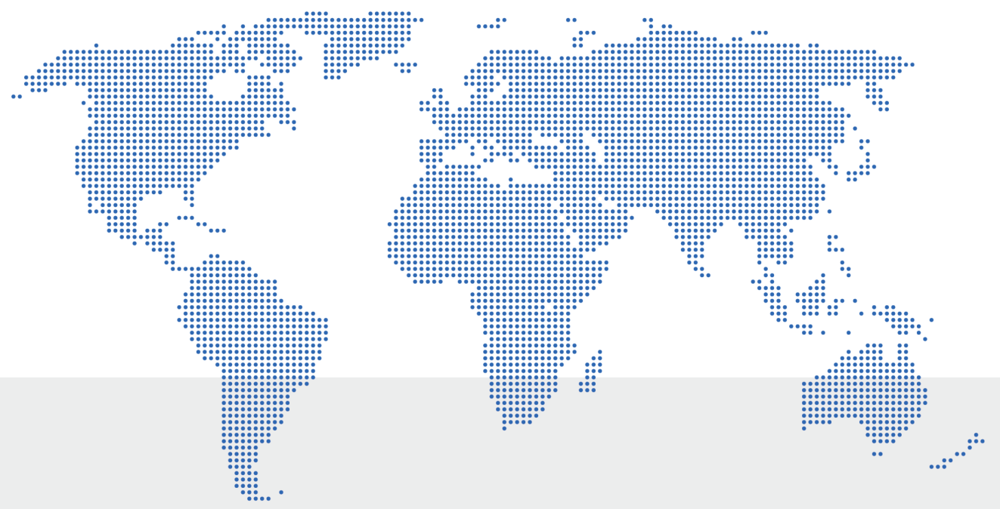

International Standards · ISTI
Edition 2019 · effective March 2019 · superseded
Retrieved on 25 November 2026 from https://www.wada-ama.org/sites/default/files/resources/files/isti_2019_en_new.pdf
Editions: 2027 (current) · 2026 · 2023 · 2021 · 2020 (March 2020) · 2019 · 2017 · 2015 · 2012 · 2009
p. 1
International Standard for Testing and Investigations

p. 2
The World Anti-Doping Code International Standard for Testing and Investigations (ISTI) is a mandatory International Standard developed as part of the World Anti-Doping Program.
The International Standard for Testing (IST) was first adopted in 2003 and came into effect 1 January 2004. It was subsequently amended five times, the first time effective 1 January 2009, the second time effective 1 January 2011, the third time when the ISTI, renamed the International Standard for Testing and Investigations (ISTI), came into effect on 1 January 2015 the fourth time effective January 2017 and the fifth time effective March 2019.
The official text of the International Standard for Testing and Investigations shall be maintained by WADA and shall be published in English and French. In the event of any conflict between the English and French versions, the English version shall prevail.
Published by:
World Anti-Doping Agency Stock Exchange Tower 800 Place Victoria (Suite 1700) PO Box 120 Montreal, Quebec Canada H4Z 1B7 URL: www.wada-ama.org Tel: +1 514 904 9232 Fax: +1 514 904 8650 E-mail: code@wada-ama.org
p. 3
p. 4
83 83
84
p. 5
p. 6
PART ONE: INTRODUCTION, CODE PROVISIONS AND DEFINITIONS
1.0 Introduction and scope
The International Standard for Testing and Investigations is a mandatory International Standard developed as part of the World Anti-Doping Program.
The first purpose of the International Standard for Testing and Investigations is to plan for intelligent and effective Testing, both In-Competition and Out-of-Competition, and to maintain the integrity and identity of the Samples collected from the point the Athlete is notified of the test to the point the Samples are delivered to the laboratory for analysis. To that end, the International Standard for Testing and Investigations (including its Annexes) establishes mandatory standards for test distribution planning (including collection and use of Athlete whereabouts information), notification of Athletes, preparing for and conducting Sample collection, security/post-test administration of Samples and documentation, and transport of Samples to laboratories for analysis.
The second purpose of the International Standard for Testing and Investigations is to establish mandatory standards for the efficient and effective gathering, assessment and use of anti-doping intelligence and for the efficient and effective conduct of investigations into possible anti-doping rule violations.
Like the Code, the International Standard for Testing and Investigations has been drafted giving due consideration to the principles of respect for human rights, proportionality, and other applicable legal principles. It shall be interpreted and applied in that light.
Terms used in this International Standard that are defined terms from the Code are written in italics. Terms that are defined in this International Standard are underlined.
2.0 Code provisions
The following articles in the 2015 Code are directly relevant to the International Standard for Testing and Investigations:
Code Article 2 Anti-Doping Rule Violations
The following constitute anti-doping rule violations:
2.1 Presence of a Prohibited Substance or its Metabolites or Markers in an Athlete's Sample.
p. 7
…
2.2 Use or Attempted Use by an Athlete of a Prohibited Substance or a Prohibited Method.
…
2.3 Evading, Refusing or Failing to Submit to Sample Collection.
Evading Sample collection, or without compelling justification refusing or failing to submit to Sample collection after notification as authorized in applicable anti-doping rules.
[Comment to Article 2.3: For example, it would be an anti-doping rule violation of "evading Sample collection" if it were established that an Athlete was deliberately avoiding a Doping Control official to evade notification or Testing. A violation of "failing to submit to Sample collection" may be based on either intentional or negligent conduct of the Athlete, while "evading" or "refusing" Sample collection contemplates intentional conduct by the Athlete.]
2.4 Whereabouts Failures.
Any combination of three missed tests and/or filing failures, as defined in the International Standard for Testing and Investigations, within a twelve-month period by an Athlete in a Registered Testing Pool.
2.5 Tampering or Attempted Tampering with any part of Doping Control.
Conduct which subverts the Doping Control process but which would not otherwise be included in the definition of Prohibited Methods. Tampering shall include, without limitation, intentionally interfering or attempting to interfere with a Doping Control official, providing fraudulent information to an Anti-Doping Organization or intimidating or attempting to intimidate a potential witness.
[Comment to Article 2.5: For example, this Article would prohibit altering identification numbers on a Doping Control form during Testing, breaking the B bottle at the time of B Sample analysis, or altering a Sample by the addition of a foreign substance.
Offensive conduct towards a Doping Control official or other Person involved in Doping Control which does not otherwise constitute Tampering shall be addressed in the disciplinary rules of sport organizations.]
2.6 Possession of a Prohibited Substance or a Prohibited Method.
p. 8
2.7 Trafficking or Attempted Trafficking in any Prohibited Substance or Prohibited Method.
2.8 Administration or Attempted Administration to any Athlete In-Competition of any Prohibited Substance or Prohibited Method, or Administration or Attempted Administration to any Athlete Out-ofCompetition of any Prohibited Substance or any Prohibited Method that is prohibited Out-of-Competition.
Assisting, encouraging, aiding, abetting, conspiring, covering up or any other type of intentional complicity involving an anti-doping rule violation, Attempted anti-doping rule violation or violation of Article
10.12.1 by another Person.
2.10 Prohibited Association.
Association by an Athlete or other Person subject to the authority of an Anti-Doping Organization in a professional or sport-related capacity with any Athlete Support Person who:
2.10.1 If subject to the authority of an Anti-Doping Organization, is serving a period of Ineligibility; or
2.10.2 If not subject to the authority of an Anti-Doping Organization and where Ineligibility has not been addressed in a results management process pursuant to the Code, has been convicted or found in a criminal, disciplinary or professional proceeding to have engaged in conduct which would have constituted a violation of anti-doping rules if *Code-*compliant rules had been applicable to such Person. The disqualifying status of such Person shall be in force for the longer of six years from the criminal, professional or disciplinary decision or the duration of the criminal, disciplinary or professional sanction imposed; or
2.10.3 Is serving as a front or intermediary for an individual described in Article 2.10.1 or 2.10.2.
Code Article 5 Testing and Investigations
5.1 Purpose of Testing and Investigations.
p. 9
Testing and investigations shall only be undertaken for anti-doping purposes.
5.1.1 Testing shall be undertaken to obtain analytical evidence as to the Athlete's compliance (or non-compliance) with the strict Code prohibition on the presence/Use of a Prohibited Substance or Prohibited Method.
5.1.2 Investigations shall be undertaken:
(a) in relation to Atypical Findings and Adverse Passport Findings, in accordance with Articles 7.4 and 7.5 respectively, gathering intelligence or evidence (including, in particular, analytical evidence) in order to determine whether an anti-doping rule violation has occurred under Article 2.1 and/or Article 2.2; and
(b) in relation to other indications of potential anti-doping rule violations, in accordance with Articles 7.6 and 7.7, gathering intelligence or evidence (including, in particular, non-analytical evidence) in order to determine whether an anti-doping rule violation has occurred under any of Articles 2.2 to 2.10.
5.2 Scope of Testing.
Any Athlete may be required to provide a Sample at any time and at any place by any Anti-Doping Organization with Testing authority over him or her. Subject to the jurisdictional limitations for Event Testing set out in Article 5.3:
5.2.1 Each National Anti-Doping Organization shall have In-Competition and Out-of-Competition Testing authority over all Athletes who are nationals, residents, license-holders or members of sport organizations of that country or who are present in that National Anti-Doping Organization's country.
5.2.2 Each International Federation shall have In-Competition and Out-of-Competition Testing authority over all Athletes who are subject to its rules, including those who participate in International Events or who participate in Events governed by the rules of that International Federation, or who are members or license-holders of that International Federation or its member National Federations, or their members.
p. 10
5.2.3 Each Major Event Organization, including the International Olympic Committee and the International Paralympic Committee, shall have In-Competition Testing authority for its Events and Out-of-Competition Testing authority over all Athletes entered in one of its future Events or who have otherwise been made subject to the Testing authority of the Major Event Organization for a future Event.
5.2.4 WADA shall have In-Competition and Out-of- Competition Testing authority as set out in Article 20.
5.2.5 Anti-Doping Organizations may test any Athlete over whom they have Testing authority who has not retired, including Athletes serving a period of Ineligibility.
5.2.6 If an International Federation or Major Event Organization delegates or contracts any part of Testing to a National Anti-Doping Organization (directly or through a National Federation), that National Anti-Doping Organization may collect additional Samples or direct the laboratory to perform additional types of analysis at the National Anti-Doping Organization's expense. If additional Samples are collected or additional types of analysis are performed, the International Federation or Major Event Organization shall be notified.
[Comment to Article 5.2: Additional authority to conduct Testing may be conferred by means of bilateral or multilateral agreements among Signatories. Unless the Athlete has identified a 60-minute Testing window during the following-described time period, or otherwise consented to Testing during that period, before Testing an Athlete between the hours of 11:00 p.m. and 6:00 a.m., an Anti-Doping Organization should have serious and specific suspicion that the Athlete may be engaged in doping. A challenge to whether an Anti- Doping Organization had sufficient suspicion for Testing during this time period shall not be a defense to an anti-doping rule violation based on such test or attempted test.]
5.3.1 Except as otherwise provided below, only a single organization should be responsible for initiating and directing
p. 11
Testing at Event Venues during an Event Period. At International Events, the collection of Samples shall be initiated and directed by the international organization which is the ruling body for the Event (e.g., the International Olympic Committee for the Olympic Games, the International Federation for a World Championship, and the Pan-American Sports Organization for the Pan American Games). At National Events, the collection of Samples shall be initiated and directed by the National Anti- Doping Organization of that country. At the request of the ruling body for an Event, any Testing during the Event Period outside of the Event Venues shall be coordinated with that ruling body.
[Comment to Article 5.3.1: Some ruling bodies for International Events may be doing their own Testing outside of the Event Venues during the Event Period and thus want to coordinate that Testing with National Anti-Doping Organization Testing.]
5.3.2 If an Anti-Doping Organization which would otherwise have Testing authority but is not responsible for initiating and directing Testing at an Event desires to conduct Testing of Athletes at the Event Venues during the Event Period, the Anti-Doping Organization shall first confer with the ruling body of the Event to obtain permission to conduct and coordinate such Testing. If the Anti-Doping Organization is not satisfied with the response from the ruling body of the Event, the Anti-Doping Organization may, in accordance with procedures published by WADA, ask WADA for permission to conduct Testing and to determine how to coordinate such Testing. WADA shall not grant approval for such Testing before consulting with and informing the ruling body for the Event. WADA's decision shall be final and not subject to appeal. Unless otherwise provided in the authorization to conduct Testing, such tests shall be considered Out-of-Competition tests. Results management for any such test shall be the responsibility of the Anti-Doping Organization initiating the test unless provided otherwise in the rules of the ruling body of the Event.
[Comment to Article 5.3.2: Before giving approval to a National Anti-Doping Organization to initiate and conduct Testing at an International Event, WADA shall consult with the international organization which is the ruling body for the Event. Before giving approval to an International Federation to initiate and conduct Testing at a National Event, WADA shall consult with the National Anti-Doping Organization of the country where the Event takes place. The Anti-Doping Organization "initiating and directing Testing" may, if it chooses, enter into agreements with other organizations to which it delegates responsibility for Sample collection or other aspects of the Doping Control process.]
p. 12
5.4 Test Distribution Planning.
5.4.1 WADA, in consultation with International Federations and other Anti-Doping Organizations, will adopt a Technical Document under the International Standard for Testing and Investigations that establishes by means of a risk assessment which Prohibited Substances and/or Prohibited Methods are most likely to be abused in particular sports and sport disciplines.
5.4.2 Starting with that risk assessment, each Anti-Doping Organization with Testing authority shall develop and implement an effective, intelligent and proportionate test distribution plan that prioritizes appropriately between disciplines, categories of Athletes, types of Testing, types of Samples collected, and types of Sample analysis, all in compliance with the requirements of the International Standard for Testing and Investigations. Each Anti-Doping Organization shall provide WADA upon request with a copy of its current test distribution plan.
5.4.3 Where reasonably feasible, Testing shall be coordinated through ADAMS or another system approved by WADA in order to maximize the effectiveness of the combined Testing effort and to avoid unnecessary repetitive Testing.
5.5 Testing Requirements.
All Testing shall be conducted in conformity with the International Standard for Testing and Investigations.
5.6 Athlete Whereabouts Information.
Athletes who have been included in a Registered Testing Pool by their International Federation and/or National Anti-Doping Organization shall provide whereabouts information in the manner specified in the International Standard for Testing and Investigations. The International Federations and National Anti-Doping Organizations shall coordinate the identification of such Athletes and the collection of their whereabouts information. Each International Federation and National Anti-Doping Organization shall make available through ADAMS or another system approved by WADA, a list which identifies those Athletes included in its Registered Testing Pool either by name or by clearly defined, specific criteria. Athletes shall be notified before they are included in a Registered Testing Pool and when they are removed from that pool. The whereabouts information they provide while in the Registered Testing Pool will be accessible, through ADAMS or another system approved by WADA, to WADA and to other Anti-Doping Organizations having authority to test the Athlete as provided in Article 5.2. This information shall be maintained in strict confidence at all times; shall be used exclusively for purposes of planning, coordinating or conducting Doping Control, providing information relevant to the Athlete Biological Passport or other analytical results, to support an investigation into a potential anti-doping rule violation, or to support proceedings alleging an anti-doping rule violation; and shall be destroyed after it is no longer relevant for these purposes in accordance with the International Standard for the Protection of Privacy and Personal Information.
p. 13
5.8 Investigations and Intelligence Gathering.
Anti-Doping Organizations shall ensure they are able to do each of the following, as applicable and in accordance with the International Standard for Testing and Investigations:
5.8.1 Obtain, assess and process anti-doping intelligence from all available sources to inform the development of an effective, intelligent and proportionate test distribution plan, to plan Target Testing, and/or to form the basis of an investigation into a possible anti-doping rule violation(s); and
5.8.2 Investigate Atypical Findings and Adverse Passport Findings, in accordance with Articles 7.4 and 7.5 respectively; and
5.8.3 Investigate any other analytical or non-analytical information or intelligence that indicates a possible anti-doping rule violation(s), in accordance with Articles 7.6 and 7.7, in order either to rule out the possible violation or to develop evidence that would support the initiation of an anti-doping rule violation proceeding.
p. 14
Code Article 6 Analysis of Samples
6.2 Purpose of Analysis of Samples.
Samples shall be analyzed to detect Prohibited Substances and Prohibited Methods identified on the Prohibited List and other substances as may be directed by WADA pursuant to Article 4.5, or to assist an Anti-Doping Organization in profiling relevant parameters in an Athlete's urine, blood or other matrix, including DNA or genomic profiling, or for any other legitimate anti-doping purpose. Samples may be collected and stored for future analysis.
[Comment to Article 6.2: For example, relevant profile information could be used to direct Target Testing or to support an anti-doping rule violation proceeding under Article 2.2, or both.]
6.4 Standards for Sample Analysis and Reporting.
Laboratories shall analyze Samples and report results in conformity with the International Standard for Laboratories. To ensure effective Testing, the Technical Document referenced at Article 5.4.1 will establish risk assessment-based Sample analysis menus appropriate for particular sports and sport disciplines, and laboratories shall analyze Samples in conformity with those menus, except as follows:
6.4.1 Anti-Doping Organizations may request that laboratories analyze their Samples using more extensive menus than those described in the Technical Document.
6.4.2 Anti-Doping Organizations may request that laboratories analyze their Samples using less extensive menus than those described in the Technical Document only if they have satisfied WADA that, because of the particular circumstances of their country or sport, as set out in their test distribution plan, less extensive analysis would be appropriate.
6.4.3 As provided in the International Standard for Laboratories, laboratories at their own initiative and expense may analyze Samples for Prohibited Substances or Prohibited Methods not included on the Sample analysis menu described in the Technical Document or specified by the Testing authority. Results from any such analysis shall be reported and have the same validity and consequence as any other analytical result.
p. 15
[Comment to Article 6.4: The objective of this Article is to extend the principle of "intelligent Testing" to the Sample analysis menu so as to most effectively and efficiently detect doping. It is recognized that the resources available to fight doping are limited and that increasing the Sample analysis menu may, in some sports and countries, reduce the number of Samples which can be analyzed.]
6.5 Further Analysis of Samples.
Any Sample may be subject to further analysis by the Anti-Doping Organization responsible for results management at any time before both the A and B Sample analytical results (or A Sample result where B Sample analysis has been waived or will not be performed) have been communicated by the Anti-Doping Organization to the Athlete as the asserted basis for an Article 2.1 anti-doping rule violation.
Samples may be stored and subjected to further analyses for the purpose of Article 6.2 at any time exclusively at the direction of the Anti-Doping Organization that initiated and directed Sample collection or WADA. (Any Sample storage or further analysis initiated by WADA shall be at WADA's expense.) Further analysis of Samples shall conform with the requirements of the International Standard for Laboratories and the International Standard for Testing and Investigations.
Code Article 7 Results Management
7.1 Responsibility for Conducting Results Management.
Except as provided in Articles 7.1.1 and 7.1.2 below, results management and hearings shall be the responsibility of, and shall be governed by, the procedural rules of the Anti-Doping Organization that initiated and directed Sample collection (or, if no Sample collection is involved, the Anti-Doping Organization which first provides notice to an Athlete or other Person of an asserted anti-doping rule violation and then diligently pursues that anti-doping rule violation). …
7.1.2 Results management in relation to a potential Whereabouts Failure (a filing failure or a missed test) shall be administered by the International Federation or the National Anti-Doping Organization with whom the Athlete in question files his or her whereabouts information, as provided in the International Standard for Testing and Investigations. The Anti- Doping Organization that determines a filing failure or a missed test shall submit that information to WADA through ADAMS or another system approved by WADA, where it will be made available to other relevant Anti-Doping Organizations.
p. 16
7.4 Review of Atypical Findings.
As provided in the International Standard for Laboratories, in some circumstances laboratories are directed to report the presence of Prohibited Substances, which may also be produced endogenously, as Atypical Findings subject to further investigation. Upon receipt of an Atypical Finding, the Anti-Doping Organization responsible for results management shall conduct a review to determine whether: (a) an applicable TUE has been granted or will be granted as provided in the International Standard for Therapeutic Use Exemptions, or (b) there is any apparent departure from the International Standard for Testing and Investigations or International Standard for Laboratories that caused the Atypical Finding. If that review does not reveal an applicable TUE or departure that caused the Atypical Finding, the Anti- Doping Organization shall conduct the required investigation. After the investigation is completed, the Athlete and other Anti-Doping Organizations identified in Article 14.1.2 shall be notified whether or not the Atypical Finding will be brought forward as an Adverse Analytical Finding. The Athlete shall be notified as provided in Article 7.3.
[Comment to Article 7.4: The "required investigation" described in this Article will depend on the situation. For example, if it has previously determined that an Athlete has a naturally elevated testosterone/epitestosterone ratio, confirmation that an Atypical Finding is consistent with that prior ratio is a sufficient investigation.]
…
7.5 Review of Atypical Passport Findings and Adverse Passport Findings.
Review of Atypical Passport Findings and Adverse Passport Findings shall take place as provided in the International Standard for Testing and Investigations and International Standard for Laboratories. At such time as the Anti-Doping Organization is satisfied that an anti- doping rule violation has occurred, it shall promptly give the Athlete notice, in the manner set out in its rules, of the anti-doping rule violated, and the basis of the violation. Other Anti-Doping Organizations shall be notified as provided in Article 14.1.2.
p. 17
7.6 Review of Whereabouts Failures.
Review of potential filing failures and missed tests shall take place as provided in the International Standard for Testing and Investigations. At such time as the International Federation or National Anti-Doping Organization (as applicable) is satisfied that an Article 2.4 anti-doping rule violation has occurred, it shall promptly give the Athlete notice, in the manner set out in its rules, that it is asserting a violation of Article 2.4 and the basis of that assertion. Other Anti-Doping Organizations shall be notified as provided in Article 14.1.2.
7.7 Review of Other Anti-Doping Rule Violations Not Covered by Articles 7.1-7.6.
The Anti-Doping Organization or other reviewing body established by such organization shall conduct any follow-up investigation into a possible anti-doping rule violation as may be required under applicable anti-doping policies and rules adopted pursuant to the Code or which the Anti-Doping Organization otherwise considers appropriate. At such time as the Anti-Doping Organization is satisfied that an anti-doping rule violation has occurred, it shall promptly give the Athlete or other Person notice, in the manner set out in its rules, of the anti-doping rule violated, and the basis of the violation. Other Anti-Doping Organizations shall be notified as provided in Article 14.1.2.
[Comment to Articles 7.1, 7.6 and 7.7: For example, an International Federation typically would notify the Athlete through the Athlete's National Federation.]
…
Code Article 10 Sanctions on Individuals
10.3.2 For violations of Article 2.4, the period of Ineligibility shall be two years, subject to reduction down to a minimum of one year, depending on the Athlete's degree of Fault. The flexibility between two years and one year of Ineligibility in this Article is not available to Athletes where a pattern of last-minute whereabouts changes or other conduct raises a serious suspicion that the Athlete was trying to avoid being available for Testing.
…
10.6 Elimination, Reduction, or Suspension of Period of Ineligibility or other Consequences for Reasons Other than Fault.
10.6.1 Substantial Assistance in Discovering or Establishing Anti-Doping Rule Violations.
p. 18
10.6.1.1 An Anti-Doping Organization with results management responsibility for an anti-doping rule violation may, prior to a final appellate decision under Article 13 or the expiration of the time to appeal, suspend a part of the period of Ineligibility imposed in an individual case where the Athlete or other Person has provided Substantial Assistance to an Anti-Doping Organization, criminal authority or professional disciplinary body which results in: (i) the Anti-Doping Organization discovering or bringing forward an anti- doping rule violation by another Person, or (ii) which results in a criminal or disciplinary body discovering or bringing forward a criminal offense or the breach of professional rules committed by another Person and the information provided by the Person providing Substantial Assistance is made available to the Anti-Doping Organization with results management responsibility. …
Code Article 13 Appeals
13.3 Failure to Render a Timely Decision by an Anti-Doping Organization.
Where, in a particular case, an Anti-Doping Organization fails to render a decision with respect to whether an anti-doping rule violation was committed within a reasonable deadline set by WADA, WADA may elect to appeal directly to CAS as if the Anti-Doping Organization had rendered a decision finding no anti-doping rule violation. If the CAS hearing panel determines that an anti-doping rule violation was committed and that WADA acted reasonably in electing to appeal directly to CAS, then WADA's costs and attorney fees in prosecuting the appeal shall be reimbursed to WADA by the Anti-Doping Organization.
[Comment to Article 13.3: Given the different circumstances of each anti-doping rule violation investigation and results management process, it is not feasible to establish a fixed time period for an Anti-Doping Organization to render a decision before WADA may intervene by appealing directly to CAS. Before taking such action, however, WADA will consult with the Anti-Doping Organization and give the Anti-Doping Organization an opportunity to explain why it has not yet rendered a decision. Nothing in this Article prohibits an International Federation from also having rules which authorize it to assume jurisdiction for matters in which the results management performed by one of its National Federations has been inappropriately delayed.]
Code Article 14 Confidentiality and Reporting
14.1 Information Concerning Adverse Analytical Findings*, Atypical Finding*s, and other Asserted Anti-Doping Rule Violations.
p. 19
14.1.1 Notice of Anti-Doping Rule Violations to Athletes and other Persons.
The form and manner of notice of an asserted anti-doping rule violation shall be as provided in the rules of the Anti-Doping Organization with results management responsibility.
14.1.2 Notice of Anti-Doping Rule Violations to National Anti-Doping Organizations, International Federations and WADA.
The Anti-Doping Organization with results management responsibility shall also notify the Athlete's National Anti-Doping Organization, International Federation and WADA of the assertion of an anti-doping rule violation simultaneously with the notice to the Athlete or other Person.
…
14.1.4 Status Reports.
Except with respect to investigations which have not resulted in notice of an anti-doping rule violation pursuant to Article 14.1.1, the Anti-Doping Organizations referenced in Article 14.1.2 shall be regularly updated on the status and findings of any review or proceedings conducted pursuant to Article 7, 8 or 13 and shall be provided with a prompt written reasoned explanation or decision explaining the resolution of the matter.
…
Code Article 20 Additional Roles and Responsibilities of Signatories
20.1 Roles and Responsibilities of the International Olympic Committee.
…
20.1.7 To vigorously pursue all potential anti-doping rule violations within its jurisdiction including investigation into whether Athlete Support Personnel or other Persons may have been involved in each case of doping.
…
20.2 Roles and Responsibilities of the International Paralympic Committee.
…
20.2.7 To vigorously pursue all potential anti-doping rule violations within its jurisdiction including investigation into p. 20 whether Athlete Support Personnel or other Persons may have been involved in each case of doping.
…
20.3 Roles and Responsibilities of International Federations.
…
20.3.6 To require National Federations to report any information suggesting or relating to an anti-doping rule violation to their National Anti-Doping Organization and International Federation and to cooperate with investigations conducted by any Anti-Doping Organization with authority to conduct the investigation. …
20.3.10 To vigorously pursue all potential anti-doping rule violations within its jurisdiction including investigation into whether Athlete Support Personnel or other Persons may have been involved in each case of doping, to ensure proper enforcement of Consequences, and to conduct an automatic investigation of Athlete Support Personnel in the case of any anti-doping rule violation involving a Minor or Athlete Support Person who has provided support to more than one Athlete found to have committed an anti-doping rule violation.
…
20.3.14 To cooperate fully with WADA in connection with investigations conducted by WADA pursuant to Article 20.7.10.
…
20.4 Roles and Responsibilities of National Olympic Committees and National Paralympic Committees.
…
20.4.4 To require National Federations to report any information suggesting or relating to an anti-doping rule violation to their National Anti-Doping Organization and International Federation and to cooperate with investigations conducted by any Anti-Doping Organization with authority to conduct the investigation. …
20.4.10 To vigorously pursue all potential anti-doping rule violations within its jurisdiction including investigation into whether Athlete Support Personnel or other Persons may have been involved in each case of doping. …
20.5 Roles and Responsibilities of National Anti-Doping Organizations.
- …
p. 21
20.5.4 To encourage reciprocal Testing between National Anti-Doping Organizations. …
20.5.7 To vigorously pursue all potential anti-doping rule violations within its jurisdiction including investigation into whether Athlete Support Personnel or other Persons may have been involved in each case of doping and to ensure proper enforcement of Consequences.
…
20.5.9 To conduct an automatic investigation of Athlete Support Personnel within its jurisdiction in the case of any anti- doping rule violation by a Minor and to conduct an automatic investigation of any Athlete Support Person who has provided support to more than one Athlete found to have committed an anti-doping rule violation.
20.5.10 To cooperate fully with WADA in connection with investigations conducted by WADA pursuant to Article 20.7.10.
…
20.6 Roles and Responsibilities of Major Event Organizations.
- …
20.6.5 To vigorously pursue all potential anti-doping rule violations within its jurisdiction including investigation into whether Athlete Support Personnel or other Persons may have been involved in each case of doping. …
20.7 Roles and Responsibilities of WADA. …
20.7.7 To design and conduct an effective Independent Observer Program and other types of Event advisory programs.
20.7.8 To conduct, in exceptional circumstances and at the direction of the WADA Director General, Doping Controls on its own initiative or as requested by other Anti-Doping Organizations, and to cooperate with relevant national and international organizations and agencies, including but not limited to, facilitating inquiries and investigations.
[Comment to Article 20.7.8: WADA is not a Testing agency, but it reserves the right, in exceptional circumstances, to conduct its own tests where problems have been brought to the attention of the relevant Anti-Doping Organization and have not been satisfactorily addressed.]
p. 22
20.7.9 To approve, in consultation with International Federations, National Anti-Doping Organizations, and Major Event Organizations, defined Testing and Sample analysis programs.
20.7.10 To initiate its own investigations of anti-doping rule violations and other activities that may facilitate doping.
Code Article 21 Additional Roles and Responsibilities of Athletes and other Persons
21.1 Roles and Responsibilities of Athletes.
…
21.1.2 To be available for Sample collection at all times.
[Comment to Article 21.1.2: With due regard to an Athlete's human rights and privacy, legitimate anti-doping considerations sometimes require Sample collection late at night or early in the morning. For example, it is known that some Athletes Use low doses of EPO during these hours so that it will be undetectable in the morning.] …
21.1.6 To cooperate with Anti-Doping Organizations investigating anti-doping rule violations.
[Comment to Article 21.1.6 Failure to cooperate is not an anti-doping rule violation under the Code, but it may be the basis for disciplinary action under a stakeholder's rules.]
21.2 Roles and Responsibilities of Athlete Support Personnel.
…
21.2.2 To cooperate with the Athlete Testing program.
…
21.2.5 To cooperate with Anti-Doping Organizations investigating anti-doping rule violations.
[Comment to Article 21.2.5 Failure to cooperate is not an anti-doping rule violation under the Code, but it may be the basis for disciplinary action under a stakeholder's rules.]
…
21.3 Roles and Responsibilities of Regional Anti-Doping Organizations.
…
21.3.4 To encourage reciprocal Testing between National Anti-Doping Organizations and Regional Anti-Doping Organizations.
…
p. 23
Code Article 23 Acceptance, Compliance and Modification
23.3 Implementation of Anti-Doping Programs.
Signatories shall devote sufficient resources in order to implement anti-doping programs in all areas that are compliant with the Code and the International Standards.
…
p. 24
3.0 Definitions and interpretation
3.1 Defined terms from the 2015 Code that are used in the International Standard for Testing and Investigations:
ADAMS: The Anti-Doping Administration and Management System is a Web-based database management tool for data entry, storage, sharing, and reporting designed to assist stakeholders and WADA in their anti-doping operations in conjunction with data protection legislation.
Adverse Analytical Finding: A report from a *WADA-*accredited laboratory or other WADA-approved laboratory that, consistent with the International Standard for Laboratories and related Technical Documents, identifies in a Sample the presence of a Prohibited Substance or its Metabolites or Markers (including elevated quantities of endogenous substances) or evidence of the Use of a Prohibited Method.
Adverse Passport Finding: A report identified as an Adverse Passport Finding as described in the applicable International Standards.
Anti-Doping Organization: A Signatory that is responsible for adopting rules for initiating, implementing or enforcing any part of the Doping Control process. This includes, for example, the International Olympic Committee, the International Paralympic Committee, other Major Event Organizations that conduct Testing at their Events, WADA, International Federations, and National Anti-Doping Organizations.
Athlete: Any Person who competes in sport at the international level (as defined by each International Federation) or the national level (as defined by each National Anti-Doping Organization). An Anti-Doping Organization has discretion to apply anti-doping rules to an Athlete who is neither an International-Level Athlete nor a National-Level Athlete, and thus to bring t hem within the definition of "Athlete." In relation to Athletes who are neither International-Level nor National-Level Athletes, an Anti-Doping Organization may elect to: conduct limited Testing or no Testing at all; analyze Samples for less than the full menu of Prohibited Substances; require limited or no whereabouts information; or not require advance TUEs. However, if an Article 2.1, 2.3 or 2.5 anti-doping rule violation is committed by any Athlete over whom an Anti-Doping Organization has authority who competes below the international or national level, then the Consequences set forth in the Code (except Article 14.3.2) must be applied. For purposes of Article 2.8 and Article 2.9 and for purposes of anti-doping information and education, any Person who participates in sport under the authority of any Signatory, government, or other sports organization accepting the Code is an Athlete.
[Comment: This definition makes it clear that all International- and National- Level Athletes are subject to the anti-doping rules of the Code, with the precise definitions of international- and national-level sport to be set forth in the anti-doping rules of the International Federations and National Anti- Doping Organizations, respectively. The definition also allows each National Anti-Doping Organization, if it chooses to do so, to expand its anti-doping program beyond International- or National-Level Athletes to competitors at lower levels of Competition or to individuals who engage in fitness activities but do not compete at all. Thus, a National Anti-Doping Organization could, for example, elect to test recreational-level competitors but not require advance TUEs. But an anti-doping rule violation involving an Adverse Analytical Finding or Tampering, results in all of the Consequences provided for in the Code (with the exception of Article 14.3.2). The decision on whether Consequences apply to recreational-level Athletes who engage in fitness activities but never compete is left to the National Anti-Doping Organization. In the same manner, a Major Event Organization holding an Event only for masters-level competitors could elect to test the competitors but not analyze Samples for the full menu of Prohibited Substances. Competitors at all levels of Competition should receive the benefit of anti- doping information and education.]
p. 25
Athlete Biological Passport: The program and methods of gathering and collating data as described in the International Standard for Testing and Investigations and International Standard for Laboratories.
Atypical Finding: A report from a WADA-accredited laboratory or other WADA-approved laboratory which requires further investigation as provided by the International Standard for Laboratories or related Technical Documents prior to the determination of an Adverse Analytical Finding.
Code: The World Anti-Doping Code.
Competition: A single race, match, game or singular sport contest. For example, a basketball game or the finals of the Olympic 100-meter race in athletics. For stage races and other sport contests where prizes are awarded on a daily or other interim basis the distinction between a Competition and an Event will be as provided in the rules of the applicable International Federation.
Doping Control: All steps and processes from test distribution planning through to ultimate disposition of any appeal including all steps and processes in between such as provision of whereabouts information, Sample collection and handling, laboratory analysis, TUEs, results management and hearings.
Event: A series of individual Competitions conducted together under one ruling body (e.g., the Olympic Games, FINA World Championships, or Pan American Games).
p. 26
Event Venues: Those venues so designated by the ruling body for the Event.
In-Competition: Unless provided otherwise in the rules of an International Federation or the ruling body of the Event in question, "In-Competition" means the period commencing twelve hours before a Competition in which the Athlete is scheduled to participate through the end of such Competition and the Sample collection process related to such Competition.
[Comment: An International Federation or ruling body for an Event may establish an "In-Competition" period that is different than the Event Period.]
Independent Observer Program: A team of observers, under the supervision of WADA, who observe and provide guidance on the Doping Control process at certain Events and report on their observations.
International Event: An Event or Competition where the International Olympic Committee, the International Paralympic Committee, an International Federation, a Major Event Organization, or another international sport organization is the ruling body for the Event or appoints the technical officials for the Event.
International-Level Athlete: Athletes* who compete in sport at the international level, as defined by each International Federation, consistent with the International Standard for Testing and Investigations.
[Comment: Consistent with the International Standard for Testing and Investigations, the International Federation is free to determine the criteria it will use to classify Athletes as International-Level Athletes, e.g., by ranking, by participation in particular International Events, by type of license, etc. However, it must publish those criteria in clear and concise form, so that Athletes are able to ascertain quickly and easily when they will become classified as International-Level Athletes. For example, if the criteria include participation in certain International Events, then the International Federation must publish a list of those International Events.]
Minor: A natural Person who has not reached the age of eighteen years.
National Anti-Doping Organization: The entity(ies) designated by each country as possessing the primary authority and responsibility to adopt and implement anti-doping rules, direct the collection of Samples, the management of test results, and the conduct of hearings at the national level. If this designation has not been made by the competent public authority(ies), the entity shall be the country's National Olympic Committee or its designee.
National Event: A sport Event or Competition involving International- or National-Level Athletes that is not an International Event.
p. 27
National-Level Athlete: Athletes who compete in sport at the national level, as defined by each National Anti-Doping Organization, consistent with the International Standard for Testing and Investigations.
National Olympic Committee: The organization recognized by the International Olympic Committee. The term National Olympic Committee shall also include the National Sport Confederation in those countries where the National Sport Confederation assumes typical National Olympic Committee responsibilities in the anti-doping area.
Out-of-Competition: Any period which is not In-Competition.
Registered Testing Pool: The pool of highest-priority Athletes established separately at the international level by International Federations and at the national level by National Anti-Doping Organizations, who are subject to focused In-Competition and Out-of-Competition Testing as part of that International Federation's or National Anti-Doping Organization's test distribution plan and therefore are required to provide whereabouts information as provided in Article 5.6 and the International Standard for Testing and Investigations.
Sample or Specimen: Any biological material collected for the purposes of Doping Control.
[Comment: It has sometimes been claimed that the collection of blood Samples violates the tenets of certain religious or cultural groups. It has been determined that there is no basis for any such claim.]
Signatories: Those entities signing the Code and agreeing to comply with the Code, as provided in Article 23.
Substantial Assistance: For purposes of Article 10.6.1, a Person providing Substantial Assistance must: (1) fully disclose in a signed written statement all information he or she possesses in relation to anti-doping rule violations, and (2) fully cooperate with the investigation and adjudication of any case related to that information, including, for example, presenting testimony at a hearing if requested to do so by an Anti-Doping Organization or hearing panel. Further, the information provided must be credible and must comprise an important part of any case which is initiated or, if no case is initiated, must have provided a sufficient basis on which a case could have been brought.
Target Testing: Selection of specific Athletes for Testing based on criteria set forth in the International Standard for Testing and Investigations.
Team Sport: A sport in which the substitution of players is permitted during a Competition.
p. 28
Testing: The parts of the Doping Control process involving test distribution planning, Sample collection, Sample handling, and Sample transport to the laboratory.
WADA: The World Anti-Doping Agency.
3.2 Defined terms specific to the International Standard for Testing and Investigations:
Athlete Biological Passport Documentation Package: The material produced by the Laboratory and Athlete Passport Management Unit to support an Adverse Passport Finding such as, but not limited to, analytical data, Expert Panel comments, evidence of confounding factors as well as other relevant supporting information.
The Panel may include a pool of appointed Experts and any additional ad hoc Expert(s) who may be required upon request of any of the appointed Experts or by the Athlete Passport Management Unit of the Anti-Doping Organization.
Blood Collection Officer (or BCO): An official who is qualified and has been authorized by the Sample Collection Authority to collect a blood Sample from an Athlete.
Chain of Custody: The sequence of individuals or organizations who have responsibility for the custody of a Sample from the provision of the Sample until the Sample has been delivered to the laboratory for analysis.
Chaperone: An official who is trained and authorized by the Sample Collection Authority to carry out specific duties including one or more of the following (at the election of the Sample Collection Authority): notification of the Athlete selected for Sample collection; accompanying and observing the Athlete until arrival at the Doping Control Station; accompanying and/or observing Athletes who are present in the Doping Control Station; and/or witnessing and verifying the provision of the Sample where the training qualifies him/her to do so.
*Code Article 2.4 Whereabouts Requirements:* The whereabouts requirements set out in Annex I of the International Standard for Testing and Investigations, which apply to Athletes who are included in the Registered Testing Pool of an International Federation or a National Anti-Doping Organization.
Doping Control Officer (or DCO): An official who has been trained and authorized by the Sample Collection Authority to carry out the responsibilities given to DCOs in the International Standard for Testing and Investigations.
p. 29
Doping Control Station: The location where the Sample Collection Session will be conducted.
Expert: The Expert(s), and/or Expert panel, with knowledge in the concerned field, chosen by the Anti-Doping Organization and/or Athlete Passport Management Unit, are responsible for providing an evaluation of the Passport. The Expert must be external to the Anti-Doping Organization.
Expert Panel: The Experts, with knowledge in the concerned field, chosen by the Anti-Doping Organization and/or Athlete Passport Management Unit, who are responsible for providing an evaluation of the Passport. For the Haematological Module, Experts should have knowledge in one or more of the fields of clinical haematology (diagnosis of blood pathological conditions), sports medicine or exercise physiology. For the Steroidal Module, the Experts should have knowledge in Laboratory analysis, steroid doping and/or endocrinology. For both modules, an Expert panel should consist of Experts with complementary knowledge such that all relevant fields are represented. The Expert panel may include a pool of at least three appointed Experts and any additional ad hoc Expert(s) who may be required upon request of any of the appointed Experts or by the Athlete Passport Management Unit of the Anti-Doping Organization.
Failure to Comply: A term used to describe anti-doping rule violations under Code Articles 2.3 and/or 2.5.
Filing Failure: A failure by the Athlete (or by a third party to whom the Athlete has delegated the task) to make an accurate and complete Whereabouts Filing that enables the Athlete to be located for Testing at the times and locations set out in the Whereabouts Filing or to update that Whereabouts Filing where necessary to ensure that it remains accurate and complete, all in accordance with Article I.3 of the International Standard for Testing and Investigations.
In-Competition Date: As defined in Article I.3.3.
Missed Test: A failure by the Athlete to be available for Testing at the location and time specified in the 60-minute time slot identified in his/her Whereabouts Filing for the day in question, in accordance with Article I.4 of the International Standard for Testing and Investigations.
No Advance Notice Testing: Sample collection that takes place with no advance warning to the Athlete and where the Athlete is continuously chaperoned from the moment of notification through Sample provision.
Passport: A collation of all relevant data unique to an individual Athlete that may include longitudinal profiles of Markers, heterogeneous factors unique to that particular Athlete and other relevant information that may help in the evaluation of Markers.
p. 30
Passport Custodian: The Anti-Doping Organization responsible for result management of that Athlete's Passport and for sharing any relevant information associated to that Athlete's Passport with other Anti-Doping Organization(s).
Random Selection: Selection of Athletes for Testing which is not Target Testing.
Results Management Authority: The organization that is responsible, in accordance with Code Article 7.1, for the management of the results of Testing (or other evidence of a potential anti-doping rule violation) and hearings, whether (1) an Anti-Doping Organization (for example, the International Olympic Committee or other Major Event Organization, WADA, an International Federation, or a National Anti-Doping Organization); or (2) another organization acting pursuant to the authority of and in accordance with the rules of the Anti-Doping Organization (for example, a National Federation that is a member of an International Federation). In respect of Whereabouts Failures, the Results Management Authority shall be as set out in Article I.5.1.
Sample Collection Authority: The organisation that is responsible for the collection of Samples in compliance with the requirements of the International Standard for Testing and Investigations, whether (1) the Testing Authority itself; or (2) another organization (for example, a third party contractor) to whom the Testing Authority has delegated or sub- contracted such responsibility (provided that the Testing Authority always remains ultimately responsible under the Code for compliance with the requirements of the International Standard for Testing and Investigations relating to collection of Samples).
Sample Collection Equipment: A and B bottles, kits or containers, collection vessels, tubes or other apparatus used to collect, hold or store the Sample at any time during and after the Sample Collection Session that shall meet the requirements of Article 6.3.4;
Sample Collection Personnel: A collective term for qualified officials authorized by the Sample Collection Authority to carry out or assist with duties during the Sample Collection Session.
Sample Collection Session: All of the sequential activities that directly involve the Athlete from the point that initial contact is made until the Athlete leaves the Doping Control Station after having provided his/her Sample(s).
Suitable Specific Gravity for Analysis: Specific gravity measured at 1.005 or higher with a refractometer, or 1.010 or higher with lab sticks.
Suitable Volume of Urine for Analysis: A minimum of 90 mL, whether the laboratory will be analysing the Sample for all or only some Prohibited Substances or Prohibited Methods.
p. 31
Tamper Evident: Refers to having one or more indicators or barriers to entry incorporated into or, if applicable, included with the Sample Collection Equipment, which, if breached or missing or otherwise compromised, can provide visible evidence that Tampering or attempted Tampering of Sample Collection equipment has occurred.
Team Activity/Activities: Sporting activities carried out by Athletes on a collective basis as part of a team (e.g., training, travelling, tactical sessions) or under the supervision of the team (e.g., treatment by a team doctor).
Test Distribution Plan: A document written by an Anti-Doping Organization that plans Testing on Athletes over whom it has Testing Authority, in accordance with the requirements of Article 4 of the International Standard for Testing and Investigations.
Testing Authority: The organization that has authorized a particular Sample collection, whether (1) an Anti-Doping Organization (for example, the International Olympic Committee or other Major Event Organization, WADA, an International Federation, or a National Anti-Doping Organization); or (2) another organization conducting Testing pursuant to the authority of and in accordance with the rules of the Anti-Doping Organization (for example, a National Federation that is a member of an International Federation).
Unsuccessful Attempt Report: A detailed report of an unsuccessful attempt to collect a Sample from an Athlete in a Registered Testing Pool, setting out the date of the attempt, the location visited, the exact arrival and departure times at the location, the steps taken at the location to try to find the Athlete (including details of any contact made with third parties), and any other relevant details about the attempt.
Whereabouts Failure: A Filing Failure or a Missed Test.
Whereabouts Filing: Information provided by or on behalf of an Athlete in a Registered Testing Pool that sets out the Athlete's whereabouts during the following quarter, in accordance with Article I.3 of the International Standard for Testing and Investigations.
3.3 Defined terms specific to the International Standard for Laboratories (ISL):
Adaptive Model: A mathematical model that was designed to identify unusual longitudinal results from Athletes. The model calculates the probability of a longitudinal profile of Marker values assuming, that the Athlete has a normal physiological condition.
Analytical Testing: The parts of the Doping Control process performed at the Laboratory, which include Sample handling, analysis and reporting of results.
p. 32
Athlete Passport Management Unit (APMU): Persons, designated by the Anti-Doping Organization, responsible for the administrative management of the Passports advising the Anti-Doping Organization for intelligent, Targeted Testing liaising with the Expert Panel compiling and authorizing an Athlete Biological Passport Documentation Package and reporting Adverse Passport Findings.
Confirmation Procedure: An analytical test procedure whose purpose is to identify the presence or to measure the concentration/ratio of one or more specific Prohibited Substances, Metabolite(s) of a Prohibited Substance, or Marker(s) of the Use of a Prohibited Substance or Method in a Sample.
[Comment to Confirmation Procedure: A Confirmation Procedure for a threshold substance shall also indicate a concentration/ratio of the Prohibited Substance greater than the applicable Decision Limit (as noted in the TD DL).]
Laboratory(ies): (A) WADA-accredited laboratory(ies) applying test methods and processes to provide evidentiary data for the detection of Prohibited Substances, Methods or Markers on the Prohibited List and, if applicable, quantification of a Threshold Substance in Samples of urine and other biological matrices in the context of anti-doping activities.
WADA-Approved Laboratory for the ABP: Laboratory(ies) not otherwise accredited by WADA; applying test methods and processes in support of an Athlete Biological Passport program and in accordance with the criteria for approval of non-accredited laboratories for the Athlete Biological Passport.
3.4.1 Unless otherwise specified, references below to Articles are references to Articles of the International Standard for Testing and Investigations (ISTI).
3.4.2 The comments annotating various provisions of the International Standard for Testing and Investigations shall be used to interpret the International Standard.
3.4.3 The Annexes to the International Standard for Testing and Investigations have the same mandatory status as the rest of the International Standard for Testing and Investigations.
3.4.4 The official text of the International Standard for Testing and Investigations shall be maintained by WADA and shall be published in English and French. In the event of any conflict between the English and French versions, the English version shall prevail.
p. 33
PART TWO: STANDARDS FOR TESTING
4.0 Planning effective Testing
4.1 Objective
4.1.1 Code Article 5.4 requires each Anti-Doping Organization with Testing Authority to plan and implement intelligent Testing that is proportionate to the risk of doping among Athletes under its jurisdiction, and that is effective to detect and to deter such practices. The objective of this Section 4.0 of the International Standard for Testing and Investigations is to set out the steps that are necessary to produce a Test Distribution Plan that satisfies this requirement. This includes establishing the overall pool of Athletes within the Anti-Doping Organization's anti-doping program, and assessment of which Prohibited Substances and Prohibited Methods are most likely to be abused in the sport(s)/sports discipline(s) in question, followed by appropriate prioritization between sport(s) and/or sport disciplines, between categories of Athletes, between types of Testing, between types of Samples collected, and between types of Sample analysis.
4.1.2 The Anti-Doping Organization shall ensure that Athlete Support Personnel and any other Persons with a conflict of interest are not involved in test distribution planning for their Athletes or in the process of selection of Athletes for Testing.
4.1.3 The Anti-Doping Organization shall document its Test Distribution Plan and shall file that Test Distribution Plan with WADA (a) when seeking WADA's approval pursuant to Code Article 6.4.2 to analyse Samples using a less extensive menu than that set out in the Technical Document referenced at Code Article 5.4.1, in accordance with Article 4.7.1 of this International Standard; and (b) where requested by WADA, as part of the process of demonstrating the Anti-Doping Organization's satisfaction of the requirements of Code Article 5.4.
4.1.4 The main activities are therefore risk assessment and prioritization, including information and intelligence gathering, monitoring and follow-up; developing a Test Distribution Plan based on that risk assessment and prioritization; filing and discussing that Test Distribution Plan with WADA (where applicable); monitoring, evaluating, reviewing, modifying and updating that Test Distribution Plan as necessary in light of changing circumstances; and implementing the Test Distribution Plan.
p. 34
4.2 Risk Assessment
4.2.1 As set out in Code Article 5.4, the starting point of the Test Distribution Plan must be a considered assessment, in good faith, of which Prohibited Substances and/or Prohibited Methods are most likely to be abused in the sport(s) and sport discipline(s) in question. This assessment should take into account (at a minimum) the following information:
a) The physical and other demands of the relevant sport(s) (and/or discipline(s) within the sport(s)), considering in particular the physiological requirements of the sport(s)/sport discipline(s);
b) The possible performance-enhancing effects that doping may elicit in such sport(s)/sport discipline(s);
c) The rewards available at the different levels of the sport(s)/sport discipline(s) and/or other potential incentives for doping;
d) The history of doping in the sport(s)/sport discipline(s);
[Comment to 4.2.1(d): Unless there has been a full and effective Testing program in a sport, encompassing both In- and Out-of-Competition Testing, a history of no or few Adverse Analytical Findings says little if anything about the risk of doping in that sport.]
e) Available research on doping trends (e.g., peer-reviewed articles);
f) Information received/intelligence developed on possible doping practices in the sport (e.g., Athlete testimony; information from criminal investigations; and/or other intelligence developed in accordance with WADA's Guidelines for Coordinating Investigations and Sharing Anti-Doping Information and Evidence) in accordance with Section 11.0 of the International Standard for Testing and Investigations; and
g) The outcomes of previous test distribution planning cycles.
4.2.2 In developing its Test Distribution Plan, the Anti-Doping Organization shall be bound by the Technical Document referenced in Code Article 5.4.1 and 6.4. Additionally, the Anti-Doping Organization shall conduct its own risk assessment. It should take into account in good faith any risk assessment for the sport or discipline in question carried out by another Anti-Doping Organization with overlapping Testing Authority. However, an International Federation is not bound by a National Anti-Doping Organization's assessment of the risks of doping in a particular sport or discipline, and a National Anti-p. 35 Doping Organization is not bound by an International Federation's assessment of the risks of doping in a particular sport or discipline.
4.2.3 The Anti-Doping Organization shall also consider the potential doping patterns in its sport, nation or Event (as applicable). This shall include assessing matters such as:
a) which Prohibited Substances and/or Prohibited Methods an Athlete would consider most likely to enhance performance in the relevant sport(s) or discipline(s);
b) at what points in his/her career in the sport an Athlete would be most likely to consider obtaining such an illicit advantage; and
c) given the structure of the season for the sport/discipline in question (including standard Competition schedules and training patterns), at what time(s) during the year an Athlete would be most likely to undertake doping practices.
4.2.4 All of the remaining steps to be taken in developing a Test Distribution Plan (as set out in the rest of this Section 4.0, below) are to be based on the risk assessment set out in this Article 4.2. The Anti-Doping Organization must be able to demonstrate to WADA's satisfaction that it has made a proper assessment of the relevant risks and has adopted an appropriate Test Distribution Plan based on the results of that assessment.
4.2.5 Test distribution planning is intended to be an ongoing process, not a static one. The Anti-Doping Organization shall review the Test Distribution Plan regularly and shall adapt it as necessary to reflect new information gathered and intelligence developed by the Anti-Doping Organization, and to take into account Testing conducted by other Anti-Doping Organizations. However, any revision to the risk assessment set out in the Technical Document referenced in Code Article 5.4.1 would have to be agreed by WADA.
4.3 Establishing the overall pool of Athletes
4.3.1 Code Article 5.2 gives different Anti-Doping Organizations Testing Authority over potentially very large pools of sportsmen and women. However, in recognition of the finite resources of Anti-Doping Organizations, the Code definition of "Athlete" allows National Anti-Doping Organizations to limit the number of sportsmen and women who will be subject to their national anti-doping programs (in particular, Testing) to those who compete at the highest national levels (i.e., National-Level Athletes, as defined by the National Anti-Doping Organization). It also allows International Federations to focus their anti-doping programs (including Testing) on those who compete regularly at the international level (i.e., International-Level Athletes, as defined by the International Federation).
p. 36
[Comment to 4.3.1: Nothing prevents an International Federation from Testing an Athlete under its jurisdiction who is not an International-Level Athlete, if it sees fit, e.g., where he/she is competing in an International Event. Furthermore, as set out in the Code definition of "Athlete", a National Anti-Doping Organization may decide to extend its anti-doping program (including Testing) to sportsmen and women who compete below national level. However, the main focus of an International Federation's Test Distribution Plan should be International-Level Athletes, and the main focus of a National Anti-Doping Organization's Test Distribution Plan should be National-Level Athletes and above.]
4.3.2 Therefore, once the risk assessment described in Article 4.2 is completed, the next step is to establish the overall pool of Athletes who are in principle going to be subject to Testing by the Anti-Doping Organization in question, i.e. (for an International Federation) fixing an appropriate definition of International-Level Athlete, or (for a National Anti-Doping Organization) fixing an appropriate definition of National-Level Athlete:
a) An International Federation is free to determine the criteria it will use to classify Athletes as International-Level Athletes, e.g., by ranking, by participation in particular International Events, etc. It should make that determination in good faith, in accordance with its responsibility to protect the integrity of the sport at the international level (the showcase of the sport to the public), by fixing a definition that encompasses all those who compete regularly at international level and/or who compete at a standard at which world records may be set.
[Comment to 4.3.2(a): The Code requires each International Federation to publish in clear and concise form the criteria it uses to classify Athletes as International-Level Athletes, so that it is clear to everyone where the line is drawn and how particular Athletes are to be classified. For example, if the criteria include competing in certain International Events, then the International Federation must publish a list of those International Events.]
b) Similarly, a National Anti-Doping Organization is free to determine the criteria it will use to classify Athletes as National-Level Athletes. Again, it should make that determination in good faith, in accordance with its responsibility to protect the integrity of the sport at the national level (the source of national pride in different sports, and the stepping stone to international Competition, including representation of the nation in International Events or Competitions). Consequently, the definition should normally p. 37 encompass all those who compete at the highest levels of national Competition in the sport in question (i.e., in national championships or other Events that determine or count towards determining who are the best in the country in the category/discipline in question, and/or who should be selected to represent the country in International Events or Competitions). It should also include those nationals of its country who generally or often compete at international level and/or in International Events or Competitions (rather than at national level) but who are not classified as International-Level Athletes by their International Federation.
4.4 Prioritizing between sports and/or disciplines
4.4.1 Next, the Anti-Doping Organization should consider whether there are any factors warranting allocating Testing resources to one sport or discipline or nation (as applicable) under its jurisdiction in priority to others. This means:
a) In the case of an International Federation, assessing the relative risks of doping as between the different disciplines and nations within its sport.
b) In the case of a National Anti-Doping Organization, assessing the relative risks of doping as between the different sports under its jurisdiction, as well as any national anti-doping policy imperatives that may lead it to prioritize certain sports over others.
[Comment to 4.4.1(b): National Anti-Doping Organizations will have varying national policy requirements and priorities. For example, one National Anti-Doping Organization may have legitimate reasons to prioritize (some or all) Olympic sports while another may have legitimate reasons, because of different characteristics of that sporting nation, to prioritize (for example) certain other 'national' sports. These policy imperatives are a relevant consideration in the National Anti-Doping Organization's test distribution planning, alongside its assessment of the relative risks of doping in the various sports played within its national jurisdiction. They may lead, for example, to a National Anti-Doping Organization deciding, in its Test Distribution Plan for a particular period, (1) to allocate Testing to some sports within its jurisdiction but not others; and (2) to prioritize certain sports over others due not to a greater risk of doping in those sports but to a greater national interest in ensuring the integrity of those sports.]
c) In the case of a Major Event Organization, assessing the relative risks of doping as between the different sports and/or disciplines involved in its Event.
p. 38
4.4.2 Another factor relevant to the allocation of Testing resources within the Test Distribution Plan will be the number of Athletes involved at the relevant level in the sport(s) and/or discipline(s) and/or nation(s) in question. Where the risk of doping is assessed to be equal as between two different sports or disciplines or nations, more resources should be devoted to the sport or discipline or nation involving the larger number of Athletes.
4.5 Prioritizing between different Athletes
4.5.1 Once the overall pool of Athletes has been established (see Article 4.3), and the priority sports/disciplines/nations have been established (see Article 4.4), an intelligent Test Distribution Plan uses Target Testing to focus Testing resources where they are most needed within the overall pool of Athletes. Target Testing shall therefore be made a priority, i.e., a significant amount of the Testing undertaken as part of an Anti-Doping Organization's Test Distribution Plan shall be Target Testing of Athletes within its overall pool.
[Comment to 4.5.1: Target Testing is a priority because random Testing, or even weighted random Testing, does not ensure that all of the appropriate Athletes will be tested enough. The World Anti-Doping Code does not impose any reasonable suspicion or probable cause requirement for Target Testing. However, Target Testing should not be used for any purpose other than legitimate Doping Control.]
4.5.2 Anti-Doping Organizations shall consider conducting Target Testing on the following categories of Athletes:
a) For International Federations, Athletes (especially from its priority disciplines or nations) who compete regularly at the highest level of international Competition (e.g., candidates for Olympic, Paralympic or World Championship medals), as determined by rankings or other suitable criteria.
b) For National Anti-Doping Organizations, the following Athletes from its priority sports:
(i) Athletes who are part of national teams in Olympic or Paralympic or other sports of high national priority (or who might be selected for such teams);
(ii) Athletes who train independently but perform at Olympic/Paralympic or World Championship level and may be selected for such events;
(iii) Athletes in receipt of public funding; and
p. 39
(iv) high-level Athletes who are nationals of other countries but who are present (whether residing, training, competing or otherwise) within the National Anti-Doping Organization's country.
c) For all Anti-Doping Organizations with relevant Testing Authority:
(i) Athletes serving a period of Ineligibility or a Provisional Suspension; and
(ii) Athletes who were high priority for Testing before they retired from the sport and who now wish to return from retirement to active participation in the sport.
4.5.3 Other factors relevant to determining who should be made the subject of Target Testing may vary considerably from sport to sport, depending on the specific characteristics of the particular sport. However, the relevant factors are likely to include some or all of the following Athlete behaviours/factors indicating possible doping/increased risk of doping:
a) prior anti-doping rule violations/test history, including any abnormal biological parameters (blood parameters, steroid profiles, etc);
b) sport performance history, including in particular sudden major improvements in performance, and/or sustained high performance without a commensurate Testing record;
c) repeated Failure to Comply with whereabouts requirements;
d) suspicious whereabouts filing patterns (e.g., last-minute updates of Whereabouts Filings);
e) moving to or training in a remote location;
f) withdrawal or absence from expected Competition;
g) association with a third party (such as a team-mate, coach or doctor) with a history of involvement in doping;
h) injury;
i) age/stage of career (e.g., move from junior to senior level, nearing end of contract, approaching retirement);
j) financial incentives for improved performance, such as prize money or sponsorship opportunities; and/or
p. 40
k) reliable information from a third party, or intelligence developed by or shared with the Anti-Doping Organization in accordance with Section 11.0 of the International Standard for Testing and Investigations.
4.5.4 Testing which is not Target Testing shall be determined by Random Selection, which shall be conducted using a documented system for such selection. Random Selection may be either completely random (where no pre-determined criteria are considered, and Athletes are chosen arbitrarily from a list or pool of Athlete names) or weighted (where Athletes are ranked using pre-determined criteria in order to increase or decrease the chances of selection). Random Selection that is weighted shall be conducted according to defined criteria and may take into account the factors listed in Article 4.5.3 (as applicable) in order to ensure that a greater percentage of 'at risk' Athletes is selected.
[Comment to 4.5.4: In addition to detecting doping, Testing by Random Selection can play an important deterrent role, as well as helping to protect the integrity of an Event.]
4.5.5 For the avoidance of doubt, notwithstanding the development of criteria for selection of Athletes for Testing, and in particular for Target Testing of Athletes, as well as the fact that as a general rule Testing should take place between 5 a.m. and 11 p.m. unless valid grounds exist for Testing overnight, the fundamental principle remains (as set out in Code Article 5.2) that an Athlete may be required to provide a Sample at any time and at any place by any Anti-Doping Organization with Testing Authority over him/her, whether or not the selection of the Athlete for Testing is in accordance with such criteria. Accordingly, an Athlete may not refuse to submit to Sample collection on the basis that such Testing is not provided for in the Anti- Doping Organization's Test Distribution Plan and/or is not being conducted between 5 a.m. and 11 p.m., and/or that the Athlete does not meet the relevant selection criteria for Testing or otherwise should not have been selected for Testing.
4.6 Prioritizing between different types of Testing
4.6.1 Based on the risk assessment and prioritization process described in Articles 4.2 to 4.5, the Anti-Doping Organization must determine to what extent each of the following types of Testing is required in order to detect and deter doping practices within the relevant sport(s), discipline(s) and/or nation(s) intelligently and effectively:
a) In-Competition Testing and Out-of-Competition Testing;
p. 41
i) In sports and/or disciplines that are assessed as having a high risk of doping during Out-of-Competition periods, Out- of Competition Testing shall be made a priority, and a significant portion of the available Testing shall be conducted Out-ofCompetition. However, some material amount of In-Competition Testing shall still take place.
ii) In sports and/or disciplines that are assessed as having a low risk of doping during Out-of-Competition periods (i.e., where it can be clearly shown that doping while Out-of-Competition is unlikely to enhance performance or provide other illicit advantages), In-Competition Testing shall be made a priority, and a substantial portion of the available Testing shall be conducted In-Competition. However, some Out-ofCompetition Testing shall still take place, proportionate to the risk of Out-of-Competition doping in such sport/discipline. Very exceptionally, i.e., in the small number of sports and/or disciplines where it is determined in good faith that there is no material risk of doping during Out-of- Competition periods, there may be no Out-of-Competition Testing.
b) Testing of urine;
c) Testing of blood; and
d) Testing involving longitudinal profiling, i.e., the Athlete Biological Passport program.
4.6.2 Save in exceptional and justifiable circumstances, all Testing shall be No Advance Notice Testing:
a) For In-Competition Testing, placeholder selection may be known in advance. However, random Athlete/placeholder selection shall not be revealed to the Athlete until notification.
b) All Out-of-Competition Testing shall be No Advance Notice Testing save in exceptional and justifiable circumstances.
4.6.3 In order to ensure that Testing is conducted on a No Advance Notice Testing basis, the Testing Authority (and the Sample Collection Authority, if different) shall ensure that Athlete selection decisions are only disclosed in advance of Testing to those who need to know in order for such Testing to be conducted.
p. 42
4.7 Sample analysis
4.7.1 Anti-Doping Organizations shall ask laboratories to analyze the Samples they have collected in a manner that is tailored to the particular circumstances of the sport/discipline/country in question. In accordance with Code Article 6.4, the starting-point is that Anti-Doping Organizations shall have all Samples collected on their behalf analyzed in accordance with the Sample analysis menus specified in the Technical Document referenced at Code Article 5.4.1; but (a) they may always ask laboratories to analyze their Samples using more extensive menus than those described in the Technical Document; and (b) they may also ask laboratories to analyze some or all of their Samples using less extensive menus than those described in the Technical Document where they have satisfied WADA that, because of the particular circumstances of their sport or discipline or nation (as applicable), as set out in the Test Distribution Plan, less extensive analysis would be appropriate.
4.7.2 WADA will approve the analysis of Samples for less than the Sample analysis menu specified in the Technical Document where it is satisfied that such an approach will lead to the most intelligent, effective and efficient use of available Testing resources.
4.7.3 The Anti-Doping Organization shall incorporate into its Test Distribution Plan a strategy for retention of Samples and the documentation relating to the collection of such Samples so as to enable the further analysis of such Samples at a later date in accordance with Code Article 6.5. Such strategy shall comply with the requirements of the International Standard for Laboratories and the International Standard for the Protection of Privacy and Personal Information, and shall take into account the purposes of analysis of Samples set out in Code Article 6.2, as well as (without limitation) the following elements:
a) Laboratory recommendations;
b) The possible need for retroactive analysis in connection with the Athlete Biological Passport program;
c) New detection methods to be introduced in the near future relevant to the Athlete, sport and/or discipline; and/or
d) Samples collected from Athletes meeting some or all of the 'high risk' criteria set out at Article 4.5.
p. 43
4.8 Collecting whereabouts information
4.8.1 Whereabouts information is not an end in itself, but rather simply a means to an end, namely the efficient and effective conduct of No Advance Notice Testing. Therefore, where an Anti-Doping Organization has determined that it needs to conduct Testing (including Out-of-Competition Testing) on particular Athletes, it must then consider how much information it needs about the whereabouts of those Athletes in order to conduct that Testing effectively and with no advance notice. The Anti-Doping Organization must collect all of the whereabouts information that it needs to conduct the Testing identified in its Test Distribution Plan effectively and efficiently. It must not collect more whereabouts information than it needs for that purpose.
[Comment to 4.8.1: In accordance with Code Article 5.6, whereabouts information collected by an Anti-Doping Organization may be used for planning, coordinating or conducting Doping Control, providing information relevant to the Athlete Biological Passport or other analytical results, to support an investigation into a potential anti-doping rule violation, and/or to support proceedings alleging an anti-doping rule violation. In addition, the collection of whereabouts information can have a useful deterrent effect.]
4.8.2 One consideration is whether the whereabouts information has to be provided by the Athlete, or alternatively whether it can be obtained from other sources. For example, where Competition and/or training in a sport is organized and carried out on a collective basis rather than on an individual basis, involving Team Activities, an International Federation or National Anti-Doping Organization may (in its absolute discretion) decide that it is sufficient to collect whereabouts information from the Athlete's team during such periods of Team Activity, without requiring the Athlete to provide further information for those periods. In such cases, however, in periods where there are no Team Activities scheduled or where an Athlete is not participating in Team Activities, then the Athlete may be required to provide more individualized whereabouts to enable No Advance Notice Testing of the Athlete during these periods.
4.8.3 The Anti-Doping Organization may determine that it needs more whereabouts information in respect of certain categories of Athletes than others. It should consider adopting a 'pyramid approach', based on the risk assessment and prioritizing exercises set out at Articles 4.2-4.5. According to this approach, Athletes are put into different tiers, depending on the priority that is placed on Testing those Athletes. The Anti-Doping Organization should determine, in the case of each tier of Athletes, how much whereabouts information it needs in order to conduct the amount of Testing allocated to those Athletes in the Test Distribution Plan effectively and efficiently.
p. 44
[Comment to 4.8.3: For example, the Anti-Doping Organization may identify in its Test Distribution Plan a pyramid of different tiers of Athletes, with (i) a tier at the bottom for those Athletes from whom little or no whereabouts information is required to find them for the Testing allocated to them in the Test Distribution Plan, (ii) further tiers above that (containing Athletes from whom more whereabouts information is required, because there is little information available from other sources to find them for Testing, including Out-of-Competition Testing), and (iii) a top tier of Athletes from whom the greatest amount of whereabouts information is required, because they are likely to be selected for the greatest amount of Testing (including Out-ofCompetition Testing) and there is insufficient whereabouts information available for them from other sources to locate them for that Testing. The top tier of Athletes should contain high-profile Athletes (e.g., contenders for national and/or international honours), Athletes in an Athlete Biological Passport program, and Athletes at the highest risk of doping: see Article 4.5. In accordance with Article 4.8.4, this top tier of Athletes must be put into a Registered Testing Pool (so as to trigger the Code Article 2.4 Whereabouts Requirements) unless the Anti-Doping Organization is clearly able to obtain sufficient whereabouts information about such Athletes by other means.
This discretion is designed in particular to give Anti-Doping Organizations the flexibility to maintain pools of Athletes from whom some whereabouts information is obtained, which may not meet the Code Article 2.4 Whereabouts Requirements, but which is nevertheless useful information that can be used to increase the effectiveness of the Anti-Doping Organization's Testing program. For example, an International Federation or National Anti- Doping Organization may decide that it needs to conduct a certain amount of Out-ofCompetition Testing on a particular category of Athletes in a sport where competition and/or training is organized and carried out on a team basis rather than an individual basis, but that it can conduct that Testing effectively and on a No Advance Notice Testing basis by using information that is made available to it about the movements of the Athletes as part of their team, participating in Team Activities. However, if that team information is not sufficient to conduct the Testing required of such Athletes effectively and on a No Advance Notice Testing basis, and instead to conduct that Testing it is necessary to require the Athletes to comply with the Code Article 2.4 Whereabouts Requirements, then the International Federation or National Anti-Doping Organization must put the Athletes into its Registered Testing Pool.
If an Athlete in the tier below the Registered Testing Pool fails to comply with the whereabouts requirements applicable to his/her tier of Athletes, the International Federation or National Anti-Doping Organization in question should consider moving the Athlete up into the Registered Testing Pool.]
p. 45
4.8.4 Where an International Federation or a National Anti-Doping Organization plans to collect three or more Samples per year Out-ofCompetition from particular Athletes, it shall put them into a Registered Testing Pool (so that they are required to comply with the Code Article 2.4 Whereabouts Requirements) unless it is clearly able to obtain sufficient whereabouts information to conduct No Advance Notice Testing efficiently and effectively by some other means.
[Comment to 4.8.4: Each International Federation and each National Anti-Doping Organization has discretion to determine, independently of the other, (a) how much Out-of-Competition Testing it needs to conduct in respect of the sport(s) under its jurisdiction; and (b) whether the Athletes on whom it decides to conduct that Testing need to comply with the Code Article 2.4 Whereabouts Requirements in order to conduct the planned Testing on them effectively and efficiently and on a No Advance Notice Testing basis, or alternatively whether sufficient whereabouts information is available by other means to conduct such Testing, so that subjecting the Athletes in question to the Code Article 2.4 Whereabouts Requirements is unnecessary. The Anti- Doping Organization must be able to demonstrate it has made a proper assessment of the relevant risks and of the necessary prioritization in accordance with Articles 4.2 to 4.5, and that it has adopted appropriate criteria based on the results of that assessment. In particular, an Anti-Doping Organization whose Test Distribution Plan includes Testing during Out-of- Competition periods must have a Registered Testing Pool of Athletes who are required to comply with the Code Article 2.4 Whereabouts Requirements unless it can demonstrate that it is able to find those Athletes for No Advance Notice Testing during all Out-ofCompetition periods without requiring compliance with the Code Article 2.4 Whereabouts Requirements. In any event, however, there should not be more Athletes in a Registered Testing Pool than the International Federation or National Anti-Doping Organization in question plans (on its own or in agreed coordination with other Anti- Doping Organizations with Testing Authority over those Athletes) to test Out- of-Competition at least three times a year.]
4.8.5 Anti-Doping Organizations with Testing Authority over an Athlete in a Registered Testing Pool should conduct Out-of-Competition Testing on that Athlete using the whereabouts information provided by the Athlete in accordance with the Code Article 2.4 Whereabouts Requirements. Any such Athlete who fails three times in any 12-month period to provide the required information about his/her whereabouts (a Filing Failure) and/or to be available for Testing at such whereabouts (a Missed Test) shall be liable for an anti-doping rule violation under Code Article 2.4.
4.8.6 Where ADAMS is used to collect whereabouts information from Athletes in the Registered Testing Pool, then the names of those Athletes will automatically be available to WADA and other relevant Anti-Doping
p. 46
Organizations, as required under Code Article 5.6. Otherwise, however, to comply with Code Article 5.6, each International Federation and each National Anti-Doping Organization must make the criteria that it uses to determine which Athletes should be in its Registered Testing Pool, and/or a list of the Athletes meeting those criteria and so included in its Registered Testing Pool, available in writing to WADA, the International Federation*/National* Anti-Doping Organization (as applicable), and other Anti- Doping Organizations who have Testing Authority over those Athletes.
[Comment to 4.8.6: There is no requirement that a National Anti-Doping Organization must include in its Registered Testing Pool those Athletes under its jurisdiction who are included in their International Federation's Registered Testing Pool, or vice versa. In no event, however, may an Athlete be required to file different sets of whereabouts information with different Anti- Doping Organizations. Instead, if an Athlete is in one tier for his/her International Federation and another tier for his/her National Anti-Doping Organization, he/she shall comply with whichever tier has the greater whereabouts requirements, and all Anti-Doping Organizations with Testing Authority over him/her may access that information in order to locate him/her for Testing.]
4.8.7 Each International Federation and each National Anti-Doping Organization shall regularly review and update as necessary its criteria for including Athletes in its Registered Testing Pool, to ensure that they remain fit for purpose, i.e., they are capturing all appropriate Athletes. It should take into account the Competition calendar for the relevant period. For example, it may be appropriate to change or increase the number of Athletes in the Registered Testing Pool in the lead-up to an Olympic or Paralympic Games or a World Championship.
4.8.8 In addition, each International Federation and National Anti-Doping Organization shall periodically (but no less than quarterly) review the list of Athletes in its Registered Testing Pool to ensure that each listed Athlete continues to meet the relevant criteria. Athletes who no longer meet the criteria should be removed from the Registered Testing Pool and Athletes who now meet the criteria should be added to the Registered Testing Pool. The Anti-Doping Organization must advise such Athletes of the change in their status and make a new list of Athletes in the Registered Testing Pool available in accordance with Article 4.8.6, without delay.
4.8.9 For periods when Athletes come under the Testing Authority of a Major Event Organization:
a) if they are in a Registered Testing Pool then the Major Event Organization may access their Whereabouts Filings for the relevant period in order to conduct Testing on them;
p. 47
b) if they are not in a Registered Testing Pool then the Major Event Organization may adopt *Event-*specific rules requiring them to provide such information about their whereabouts for the relevant period as it deems necessary and proportionate in order to conduct Testing on them.
4.9 Co-ordinating with other Anti-Doping Organizations
4.9.1 Anti-Doping Organizations shall coordinate their Testing efforts with the efforts of other Anti-Doping Organizations with overlapping Testing Authority, in order to maximise the effectiveness of those combined efforts and to avoid unnecessarily repetitive Testing of particular Athletes. In particular:
a) Anti-Doping Organizations shall consult with other relevant Anti-Doping Organizations in order to coordinate Testing activities and to avoid duplication. Clear agreement on roles and responsibilities for Event Testing shall be agreed in advance in accordance with Code Article 5.3. Where such agreement is not possible, WADA will resolve the matter in accordance with the principles set out at Annex J - Event Testing.
b) Anti-Doping Organizations shall, without any unnecessary delay, share information on their completed Testing with other relevant Anti-Doping Organizations, via ADAMS or any other system approved by WADA.
4.9.2 Anti-Doping Organizations may contract other Anti-Doping Organizations or third parties to act as Sample Collection Authorities on their behalf. In the terms of the contract, the commissioning Anti-Doping Organization (which, for these purposes, is the Testing Authority) may specify how any discretion afforded to a Sample Collection Authority under the International Standard for Testing and Investigations is to be exercised by the Sample Collection Authority when collecting Samples on its behalf.
[Comment to 4.9.2: For example, the International Standard for Testing and Investigations confers discretion as to the criteria to be used to validate the identity of the Athlete (Article 5.3.4), as to the circumstances in which delayed reporting to the Doping Control Station may be permitted (Article 5.4.4), as to the criteria to be used to ensure that each Sample collected is stored in a manner that protects its integrity, identity and security prior to transport from the Doping Control Station (Article 8.3.1), as to who may be present during the Sample Collection Session (Article 6.3.3), and as to the guidelines to be followed by the DCO in determining whether exceptional circumstances exist that mean a Sample Collection Session should be abandoned without collecting a Sample with a Suitable Specific Gravity for Analysis (Article G.4.6).]
p. 48
4.9.3 Anti-Doping Organizations should consult and coordinate with each other, with WADA, and with law enforcement and other relevant authorities, in obtaining, developing and sharing information and intelligence that can be useful in informing test distribution planning, in accordance with Section 11.0 of the International Standard for Testing and Investigations.
5.0 Notification of Athletes
5.1 Objective
The objective is to ensure that an Athlete who has been selected for Testing is properly notified of Sample collection as outlined in Article 5.4.1, that the rights of the Athlete are maintained, that there are no opportunities to manipulate the Sample to be provided, and that the notification is documented.
5.2 General
Notification of Athletes starts when the Sample Collection Authority initiates the notification of the selected Athlete and ends when the Athlete arrives at the Doping Control Station or when the Athlete's possible Failure to Comply is brought to the Testing Authority's attention. The main activities are:
a) Appointment of DCOs, Chaperones and other Sample Collection Personnel;
b) Locating the Athlete and confirming his/her identity;
c) Informing the Athlete that he/she has been selected to provide a Sample and of his/her rights and responsibilities;
d) For No Advance Notice Testing, continuously chaperoning the Athlete from the time of notification to the arrival at the designated Doping Control Station; and
e) Documenting the notification, or notification attempt.
5.3 Requirements prior to notification of Athletes
5.3.1 Save in exceptional and justifiable circumstances, No Advance Notice Testing shall be the method for Sample collection.
p. 49
[Comment to 5.3.1: It is not justifiable for a National Federation or other body to insist that it be given advance notice of Testing of Athletes under its jurisdiction so that it can have a representative present at such Testing.]
5.3.2 The Sample Collection Authority shall appoint and authorise Sample Collection Personnel to conduct or assist with Sample Collection Sessions who have been trained for their assigned responsibilities, who do not have a conflict of interest in the outcome of the Sample collection, and who are not Minors.
5.3.3 Sample Collection Personnel shall have official documentation, provided by the Sample Collection Authority, evidencing their authority to collect a Sample from the Athlete, such as an authorisation letter from the Testing Authority. DCOs shall also carry complementary identification which includes their name and photograph (i.e., identification card from the Sample Collection Authority, driver's licence, health card, passport or similar valid identification) and the expiry date of the identification.
5.3.4 The Testing Authority or otherwise the Sample Collection Authority shall establish criteria to validate the identity of an Athlete selected to provide a Sample. This ensures the selected Athlete is the Athlete who is notified. The method of identification of the Athlete shall be documented on the Doping Control form.
5.3.5 The Sample Collection Authority, DCO or Chaperone, as applicable, shall establish the location of the selected Athlete and plan the approach and timing of notification, taking into consideration the specific circumstances of the sport/Competition/training session/etc. and the situation in question.
5.3.6 The Sample Collection Authority shall establish a system for the detailed recording of Athlete notification attempt(s) and outcome(s).
5.3.7 The Athlete shall be the first person notified that he/she has been selected for Sample collection, except where prior contact with a third party is required as specified in Article 5.3.8.
5.3.8 The Sample Collection Authority/DCO/Chaperone, as applicable, shall consider whether a third party is required to be notified prior to notification of the Athlete, when the Athlete is a Minor (as provided for in Annex C - Modifications for Athletes who are Minors), or where required by an Athlete's impairment (as provided for in Annex B - Modifications for Athletes with Impairments), or in situations where an interpreter is required and available for the notification.
[Comment to 5.3.8: In the case of In-Competition Testing, it is permissible to notify third parties that Testing of Minors or Athletes with impairments will be conducted, where required to help the Sample Collection Personnel to identify the Athlete(s) to be tested and to notify such Athlete(s) that he/she is required to provide a Sample. However, there is no requirement to notify any third party (e.g., a team doctor) of the Doping Control mission where such assistance is not needed. Any third party notification must be conducted in a secure and confidential manner so that there is no risk that the Athlete will receive any advance notice of his/her selection for Sample collection. Generally, it should occur at the end of the Competition in which the Athlete is competing or as close as possible to the end.]
p. 50
5.4 Requirements for notification of Athletes
5.4.1 When initial contact is made, the Sample Collection Authority, DCO or Chaperone, as applicable, shall ensure that the Athlete and/or a third party (if required in accordance with Article 5.3.8) is informed:
a) That the Athlete is required to undergo a Sample collection;
b) Of the authority under which the Sample collection is to be conducted;
c) Of the type of Sample collection and any conditions that need to be adhered to prior to the Sample collection;
d) Of the Athlete's rights, including the right to:
i. Have a representative and, if available, an interpreter accompany him/her, in accordance with Article 6.3.3(a);
ii. Ask for additional information about the Sample collection process;
iii. Request a delay in reporting to the Doping Control Station for valid reasons; and
e) Of the Athlete's responsibilities, including the requirement to:
i. Remain within direct observation of the DCO/Chaperone at all times from the point initial contact is made by the DCO/Chaperone until the completion of the Sample collection procedure;
ii. Produce identification in accordance with Article 5.3.4;
p. 51
iii. Comply with Sample collection procedures (and the Athlete should be advised of the possible Consequences of Failure to Comply); and
iv. Report immediately for Sample collection, unless there are valid reasons for a delay, as determined in accordance with Article 5.4.4.
f) Of the location of the Doping Control Station;
g) That should the Athlete choose to consume food or fluids prior to providing a Sample, he/she does so at his/her own risk;
h) Not to hydrate excessively, since this may delay the production of a suitable Sample; and
i) That any urine Sample provided by the Athlete to the Sample Collection Personnel should be the first urine passed by the Athlete subsequent to notification, i.e., he/she should not pass urine in the shower or otherwise prior to providing a Sample to the Sample Collection Personnel.
5.4.2 When contact is made, the DCO/Chaperone shall:
a) From the time of such contact until the Athlete leaves the Doping Control Station at the end of his/her Sample Collection Session, keep the Athlete under observation at all times;
b) Identify themselves to the Athlete using the documentation referred to in Article 5.3.3; and
c) Confirm the Athlete's identity as per the criteria established in Article 5.3.4. Confirmation of the Athlete's identity by any other method, or failure to confirm the identity of the Athlete, shall be documented and reported to the Testing Authority. In cases where the Athlete's identity cannot be confirmed as per the criteria established in Article 5.3.4, the Testing Authority shall decide whether it is appropriate to follow up in accordance with Annex A - Investigating a Possible Failure to Comply.
5.4.3 The Chaperone/DCO shall have the Athlete sign an appropriate form to acknowledge and accept the notification. If the Athlete refuses to sign that he/she has been notified, or evades the notification, the Chaperone/DCO shall, if possible, inform the Athlete of the Consequences of refusing or failing to comply, and the Chaperone (if not the DCO) shall immediately report all relevant facts to the DCO. When possible the DCO shall continue to collect a Sample. The DCO shall document the facts in a detailed report and report the circumstances to the Testing Authority. The Testing Authority shall follow the steps prescribed in Annex A - Investigating a Possible Failure to Comply.
p. 52
5.4.4 The DCO/Chaperone may at his/her discretion consider any reasonable third party request or any request by the Athlete for permission to delay reporting to the Doping Control Station following acknowledgment and acceptance of notification, and/or to leave the Doping Control Station temporarily after arrival, and may grant such permission if the Athlete can be continuously chaperoned and kept under direct observation during the delay. For example, delayed reporting to/temporary departure from the Doping Control Station may be permitted for the following activities:
a) For In-Competition Testing:
i) Participation in a presentation ceremony;
ii) Fulfilment of media commitments;
iii) Competing in further Competitions;
iv) Performing a warm down;
v) Obtaining necessary medical treatment;
vi) Locating a representative and/or interpreter;
vii) Obtaining photo identification; or
viii) Any other reasonable circumstances, as determined by the DCO, taking into account any instructions of the Testing Authority.
b) For Out-of-Competition Testing:
i) Locating a representative;
ii) Completing a training session;
iii) Receiving necessary medical treatment;
iv) Obtaining photo identification; or
v) Any other reasonable circumstances, as determined by the DCO, taking into account any instructions of the Testing Authority.
p. 53
5.4.5 The DCO or other authorised Sample Collection Personnel shall document any reasons for delay in reporting to the Doping Control Station and/or reasons for leaving the Doping Control Station that may require further investigation by the Testing Authority. Any failure of the Athlete to remain under constant observation should also be recorded.
5.4.6 A DCO/Chaperone shall reject a request for delay from an Athlete if it will not be possible for the Athlete to be continuously observed during such delay.
5.4.7 If the Athlete delays reporting to the Doping Control Station other than in accordance with Article 5.4.4 but arrives prior to the DCO's departure, the DCO shall decide whether to process a possible Failure to Comply. If at all possible the DCO shall proceed with collecting a Sample and shall document the details of the Athlete's delay in reporting to the Doping Control Station.
5.4.8 If Sample Collection Personnel observe any matter with potential to compromise the collection of the Sample, the circumstances shall be reported to and documented by the DCO. If deemed appropriate by the DCO, the DCO shall follow the requirements of Annex A - Investigating a Possible Failure to Comply, and/or consider if it is appropriate to collect an additional Sample from the Athlete.
6.0 Preparing for the Sample Collection Session
6.1 Objective
To prepare for the Sample Collection Session in a manner that ensures that the session can be conducted efficiently and effectively.
6.2 General
Preparing for the Sample Collection Session starts with the establishment of a system for obtaining relevant information for effective conduct of the session and ends when it is confirmed that the Sample Collection Equipment conforms to the specified criteria. The main activities are:
a) Establishing a system for collecting details regarding the Sample Collection Session;
b) Establishing criteria for who may be present during a Sample Collection Session;
p. 54
c) Ensuring that the Doping Control Station meets the minimum criteria prescribed in Article 6.3.2; and
d) Ensuring that the Sample Collection Equipment meets the minimum criteria prescribed in Article 6.3.4.
6.3 Requirements for preparing for the Sample Collection Session
6.3.1 The Testing Authority or otherwise the Sample Collection Authority shall establish a system for obtaining all the information necessary to ensure that the Sample Collection Session can be conducted effectively, including identifying special requirements to meet the needs of Athletes with impairments (as provided in Annex B - Modifications for Athletes with Impairments) as well as the needs of Athletes who are Minors (as provided in Annex C - Modifications for Athletes who are Minors).
6.3.2 The DCO shall use a Doping Control Station which, at a minimum, ensures the Athlete's privacy and where possible is used solely as a Doping Control Station for the duration of the Sample Collection Session. The DCO shall record any significant deviations from these criteria.
6.3.3 The Sample Collection Authority shall establish criteria for who may be authorized to be present during the Sample Collection Session in addition to the Sample Collection Personnel. At a minimum, the criteria shall include:
a) An Athlete's entitlement to be accompanied by a representative and/or interpreter during the Sample Collection Session, except when the Athlete is passing a urine Sample;
b) A Minor Athlete's entitlement (as provided for in Annex C - Modifications for Athletes who are Minors), and the witnessing DCO/Chaperone's entitlement to have a representative observe the witnessing DCO/Chaperone when the Minor Athlete is passing a urine Sample, but without the representative directly observing the passing of the Sample unless requested to do so by the Minor Athlete;
c) The entitlement of an Athlete with an impairment to be accompanied by a representative as provided for in Annex B - Modifications for Athletes with Impairments;
d) A WADA observer where applicable under the Independent Observer Program. The WADA observer shall not directly observe the passing of a urine Sample.
p. 55
6.3.4 The Sample Collection Authority shall only use Sample Collection Equipment systems for urine and blood Samples which, at a minimum:
a) Have a unique numbering system, incorporated into all A and B bottles, containers, tubes or other items used to seal the Sample and have a barcode or similar data code which meets the requirements of ADAMS on the applicable Sample Collection Equipment;
b) Have a Tamper Evident sealing system;
c) Ensure the identity of the Athlete is not evident from the equipment itself;
d) Ensure that all equipment is clean and sealed prior to use by the Athlete.
e) Are constructed of a material and sealing system that is able to withstand the handling conditions and environment in which the equipment will be used or subjected to, including but not limited to transportation, Laboratory analysis and long term frozen storage up to the period of the statute of limitations;
f) Are constructed of a material and sealing system that will;
(i) maintain the integrity (chemical and physical properties) of the Sample for Analytical Testing;
(ii) can withstand temperatures of -80 °C for urine and blood. Tests conducted to determine integrity under freezing conditions shall use the matrix that will be stored in the Sample bottles, containers or tubes i.e. blood or urine;
(iii) are constructed of a material and sealing system that can withstand a minimum of three freeze/thaw cycles;
g) The A and B bottles, containers and tubes shall be transparent, so the Sample is visible;
h) Have a sealing system which allows verification by the Athlete and the Doping Control Officer that the Sample is correctly sealed in the A and B bottles or containers;
i) Have a built in security identification feature(s) which allows verification of the authenticity of the equipment;
p. 56
j) Are compliant with the standards published by the International Air Transport Association (IATA) for the transport of exempt human specimens which includes urine and/or blood Samples in order to prevent leakage during transportation by air;
k) Have been manufactured under the internationally recognized ISO 9001 certified process which includes quality control management systems;
l) Can be resealed after initial opening by a Laboratory using a new unique Tamper Evident sealing system with a unique numbering system to maintain the integrity of the Sample and Chain of Custody in accordance with the requirements of the International Standard for Laboratories for long term storage of the Sample and further analysis;
m) Have undergone testing by a testing institution that is independent of the manufacturer and is ISO 17025 accredited, to validate at a minimum that the equipment meets the criteria set out in subsections b), f), g), h), i), j) and l) above.
n) Any modification to the material or sealing system of the equipment shall require re-testing as outlined in m) above, to ensure the equipment continues to meet the stated requirements;
For urine Sample collection:
o) Have the capacity to contain a minimum of 85mL volume of urine in each bottle or container;
p) Have a visual marking on the A and B bottles or containers and the collection vessel, that indicates:
(i) the minimum volume of urine required in each A and B bottle or containers as outlined in Annex D of the International Standard for Testing and Investigations;
(ii) the maximum volume levels that allow for expansion when frozen without compromising the bottle, container or the sealing system; and
(iii) the level of Suitable Volume for Urine for Analysis on the collection vessel.
p. 57
q) Include a partial Sample Tamper Evident sealing system to temporarily seal a Sample with an insufficient volume in accordance with Annex F of the International Standard for Testing and Investigations;
For blood Sample collection:
r) Have the ability to collect, store and transport blood in separate A and B tubes and containers;
s) For the analysis of Prohibited Substances or Prohibited Methods in whole blood or plasma and/or for profiling blood parameters, the A and B tubes must have the capacity to contain a minimum of 3mL of blood and shall contain EDTA as an anti-coagulant;
t) For the analysis of Prohibited Substances or Prohibited Methods in serum, the A and B tubes must have the capacity to contain a minimum of 5mL of blood and shall contain an inert polymeric serum separator gel and clotting activation factor; and
u) For the transport of blood Samples, ensure the storage and transport device and temperature logger meet the requirements listed in Annex K of the International Standard for Testing and Investigations
[Comment to 6.3.4: It is strongly recommended that prior to the equipment being made commercially available to stakeholders, that such equipment is distributed to the anti-doping community, which may include Athletes, Testing Authorities, Sample Collection Authorities, Sample Collection Personnel, and Laboratories to seek feedback and ensure the equipment is fit for purpose.
[Comment to 6.3.4 s) and t): If specific tubes have been indicated in the applicable WADA International Standard, Technical Document or Guidelines, then the use of alternative tubes which meet similar criteria shall be validated with the involvement of the relevant Laboratory(ies) and approved by WADA prior to use for Sample collection.]
6.3.5 The Sample Collection Authority shall develop a system for recording the Chain of Custody of the Samples and Sample collection documentation which includes confirming that both the Samples and Sample collection documentation have arrived at their intended destinations.
[Comment to 6.3.5: Information as to how a Sample is stored prior to departure from the Doping Control Station may be recorded on (for example) a post-mission report. When the Sample is taken from the Doping Control Station, each transfer of custody of the Sample from one person to another, e.g. from the DCO to the courier, or from the DCO to the laboratory, should be documented, up until the Sample arrives at its intended destination.]
p. 58
7.0 Conducting the Sample Collection Session
7.1 Objective
To conduct the Sample Collection Session in a manner that ensures the integrity, security and identity of the Sample and respects the privacy and dignity of the Athlete.
7.2 General
The Sample Collection Session starts with defining overall responsibility for the conduct of the Sample Collection Session and ends once the Sample has been collected and secured and the Sample collection documentation is complete. The main activities are:
a) Preparing for collecting the Sample;
b) Collecting and securing the Sample; and
c) Documenting the Sample collection.
7.3 Requirements prior to Sample collection
7.3.1 The Sample Collection Authority shall be responsible for the overall conduct of the Sample Collection Session, with specific responsibilities delegated to the DCO.
7.3.2 The DCO shall ensure that the Athlete has been informed of his/her rights and responsibilities as specified in Article 5.4.1.
7.3.3 The DCO shall provide the Athlete with the opportunity to hydrate. The Athlete should avoid excessive rehydration, having in mind the requirement to provide a Sample with a Suitable Specific Gravity for Analysis.
7.3.4 The Athlete shall only leave the Doping Control Station under continuous observation by the DCO or Chaperone and with the approval of the DCO. The DCO shall consider any reasonable request by the Athlete to leave the Doping Control Station, as specified in Articles 5.4.4, 5.4.5 and 5.4.6, until the Athlete is able to provide a Sample.
7.3.5 If the DCO gives approval for the Athlete to leave the Doping Control Station, the DCO shall agree with the Athlete on the following conditions of leave:
p. 59
a) The purpose of the Athlete leaving the Doping Control Station;
b) The time of return (or return upon completion of an agreed activity);
c) That the Athlete must remain under continuous observation throughout;
d) That the Athlete shall not pass urine until he/she gets back to the Doping Control Station; and
e) The DCO shall document the time of the Athlete's departure and return.
7.4 Requirements for Sample collection
7.4.1 The DCO shall collect the Sample from the Athlete according to the following protocol(s) for the specific type of Sample collection:
a) Annex D: Collection of Urine Samples;
b) Annex E: Collection of Blood Samples
c) Annex K: Collection, Storage and Transportation of Blood Samples for the ABP.
7.4.2 Any behaviour by the Athlete and/or Persons associated with the Athlete or anomalies with potential to compromise the Sample collection shall be recorded in detail by the DCO. If appropriate, the Testing Authority shall institute Annex A - Investigating a Possible Failure to Comply.
7.4.3 If there are doubts as to the origin or authenticity of the Sample, the Athlete shall be asked to provide an additional Sample. If the Athlete refuses to provide an additional Sample, the DCO shall document in detail the circumstances around the refusal, and the Testing Authority shall institute Annex A - Investigating a Possible Failure to Comply.
7.4.4 The DCO shall provide the Athlete with the opportunity to document any concerns he/she may have about how the Sample Collection Session was conducted.
7.4.5 In conducting the Sample Collection Session, the following information shall be recorded as a minimum:
a) Date, time and type of notification (no advance notice or advance notice);
b) Arrival time at Doping Control Station;
p. 60
c) Date and time of sealing of each Sample collected and date and time of completion of entire Sample collection process (i.e., the time when the Athlete signs the declaration at the bottom of the Doping Control form);
d) The name of the Athlete;
e) The date of birth of the Athlete;
f) The gender of the Athlete;
g) The Athlete's home address, email address and telephone number;
h) The Athlete's sport and discipline;
i) The name of the Athlete's coach and doctor;
j) The Sample code number;
k) The type of the Sample (urine, blood, etc);
l) The type of test (In-Competition or Out-of-Competition);
m) The name and signature of the witnessing DCO/Chaperone;
n) The name and signature of the Blood Collection Officer (where applicable);
o) Partial Sample information, as per Article F.4.4;
p) Required laboratory information on the Sample (i.e., for a urine Sample, its volume and specific gravity measurement);
q) Medications and supplements taken within the previous seven days and (where the Sample collected is a blood Sample) blood transfusions within the previous three months, as declared by the Athlete;
r) Any irregularities in procedures;
s) Athlete comments or concerns regarding the conduct of the Sample Collection Session, as declared by the Athlete;
t) Athlete consent for the processing of Sample collection data;
u) Athlete consent or otherwise for the use of the Sample(s) for
p. 61
- research purposes;
v) The name and signature of the Athlete's representative (if applicable), as per Article 7.4.6;
w) The name and signature of the Athlete;
x) The name and signature of the DCO;
y) The name of the Testing Authority;
z) The name of the Sample Collection Authority; and
aa) The name of the Results Management Authority.
[Comment to 7.4.5: All of the aforementioned information need not be consolidated in a single Doping Control Form but rather may be collected through the Doping Control and/or other official documentation such as a separate Notification form and/or Supplementary report. In addition to this information, additional requirements for the collection of Blood Samples for the ABP can be found in Annex K of this Standard.]
7.4.6 At the conclusion of the Sample Collection Session the Athlete and DCO shall sign appropriate documentation to indicate their satisfaction that the documentation accurately reflects the details of the Athlete's Sample Collection Session, including any concerns expressed by the Athlete. The Athlete's representative (if any) and the Athlete shall both sign the documentation if the Athlete is a Minor. Other persons present who had a formal role during the Athlete's Sample Collection Session may sign the documentation as a witness of the proceedings.
7.4.7 The DCO shall provide the Athlete with a copy of the records of the Sample Collection Session that have been signed by the Athlete.
8.0 Security/Post-test administration
8.1 Objective
To ensure that all Samples collected at the Doping Control Station and Sample collection documentation are securely stored prior to their dispatch from the Doping Control Station.
8.2 General
Post-test administration begins when the Athlete has left the Doping Control Station after providing his/her Sample(s) and ends with preparation of all of the collected Samples and Sample collection documentation for transport.
p. 62
8.3 Requirements for security/post-test administration
8.3.1 The Sample Collection Authority shall define criteria ensuring that each Sample collected is stored in a manner that protects its integrity, identity and security prior to transport from the Doping Control Station. At a minimum, these criteria should include detailing and documenting the location where Samples are stored and who has custody of the Samples and/or is permitted access to the Samples. The DCO shall ensure that any Sample is stored in accordance with these criteria.
8.3.2 The Sample Collection Authority shall develop a system to ensure that the documentation for each Sample is completed and securely handled.
8.3.3 The Sample Collection Authority shall develop a system to ensure that, where required, instructions for the type of analysis to be conducted are provided to the laboratory that will be conducting the analysis. In addition, the Anti-Doping Organization shall provide the laboratory with information as required under Article 7.4.5 c), f), h), j), k), l), p), q), y), z) and aa) for result reporting and statistical purposes.
9.0 Transport of Samples and documentation
9.1 Objective
a) To ensure that Samples and related documentation arrive at the laboratory that will be conducting the analysis in proper condition to do the necessary analysis; and
b) To ensure the Sample Collection Session documentation is sent by the DCO to the Testing Authority in a secure and timely manner.
9.2 General
9.2.1 Transport starts when the Samples and related documentation leave the Doping Control Station and ends with the confirmed receipt of the Samples and Sample Collection Session documentation at their intended destinations.
9.2.2 The main activities are arranging for the secure transport of Samples and related documentation to the laboratory that will be conducting the analysis and arranging for the secure transport of the Sample Collection Session documentation to the Testing Authority.
p. 63
9.3 Requirements for transport and storage of Samples and documentation
9.3.1 The Sample Collection Authority shall authorize a transport system that ensures Samples and documentation are transported in a manner that protects their integrity, identity and security.
9.3.2 Samples shall always be transported to the laboratory that will be analyzing the Samples using the Sample Collection Authority's authorised transport method, as soon as practicable after the completion of the Sample Collection Session. Samples shall be transported in a manner which minimizes the potential for Sample degradation due to factors such as time delays and extreme temperature variations.
[Comment to 9.3.2: Anti-Doping Organizations should discuss transportation requirements for particular missions (e.g., where the Sample has been collected in less than hygienic conditions, or where delays may occur in transporting the Samples to the laboratory) with the laboratory that will be analyzing the Samples, to establish what is necessary in the particular circumstances of such mission (e.g., refrigeration or freezing of the Samples).]
9.3.3 Documentation identifying the Athlete shall not be included with the Samples or documentation sent to the laboratory that will be analyzing the Samples.
9.3.4 The DCO shall send all relevant Sample Collection Session documentation to the Sample Collection Authority, using the Sample Collection Authority's authorised transport method, as soon as practicable after the completion of the Sample Collection Session.
9.3.5 If the Samples with accompanying documentation or the Sample Collection Session documentation are not received at their respective intended destinations, or if a Sample's integrity or identity may have been compromised during transport, the Sample Collection Authority shall check the Chain of Custody, and the Testing Authority shall consider whether the Samples should be voided.
9.3.6 Documentation related to a Sample Collection Session and/or an anti-doping rule violation shall be stored by the Testing Authority and/or the Sample Collection Authority for the period specified in the International Standard for the Protection of Privacy and Personal Information.
[Comment to 9.3: While the requirements for transport and storage of Samples and documentation herein apply equally to all Urine, Blood and Blood ABP Samples, additional requirements for the transportation of Blood Samples for the ABP can be found in Annex K of this Standard.]
p. 64
10.0 Ownership of Samples
10.1 Samples collected from an Athlete are owned by the Testing Authority for the Sample Collection Session in question.
10.2 The Testing Authority may transfer ownership of the Samples to the Results Management Authority or to another Anti-Doping Organization upon request.
[Comment to 10.0: MEOs in particular are encouraged to transfer custody of Samples to other ADOs which may have more extensive Sample retention and reanalysis strategies such as those with robust ABP programs.]
p. 65
PART THREE: STANDARDS FOR INTELLIGENCE GATHERING AND INVESTIGATIONS
11.0 Gathering, assessment and use of intelligence
11.1 Objective
11.1.1 Code Article 5.8 requires Anti-Doping Organizations to obtain, assess and process anti-doping intelligence from all available sources, to be used to help deter and detect doping, by informing the development of an effective, intelligent and proportionate Test Distribution Plan and/or the planning of Target Testing, and/or by forming the basis of an investigation into a possible anti-doping rule violation(s). The objective of this Section 11.0 of the International Standard for Testing and Investigations is to establish standards for the efficient and effective gathering, assessment and processing of such intelligence for these purposes.
[Comment to 11.1.1: While Testing will always remain an integral part of the anti-doping effort, Testing alone is not always sufficient to detect and establish to the requisite standard all of the anti-doping rule violations identified in the Code. In particular, while Use of Prohibited Substances and Prohibited Methods may often be uncovered by analysis of Samples, the other Code anti-doping rule violations (and, often, Use) can usually only be effectively identified and pursued through the gathering and investigation of 'non-analytical' anti-doping intelligence and information. This means that Anti-Doping Organizations need to develop efficient and effective intelligence-gathering and investigation functions.]
11.2 Gathering of anti-doping intelligence
11.2.1 Anti-Doping Organizations shall do everything in their power to ensure that they are able to capture or receive anti-doping intelligence from all available sources, including Athletes and Athlete Support Personnel (including Substantial Assistance provided pursuant to Code Article 10.6.1) and members of the public (e.g., by means of a confidential telephone hotline), Sample Collection Personnel (whether via mission reports, incident reports, or otherwise), laboratories, pharmaceutical companies, National Federations, law enforcement, other regulatory and disciplinary bodies, and the media.
11.2.2 Anti-Doping Organizations shall have policies and procedures in place to ensure that anti-doping intelligence captured or received is handled securely and confidentially, that sources of intelligence are protected, that the risk of leaks or inadvertent disclosure is properly addressed, and that intelligence shared with them by law enforcement, other relevant authorities and/or other third parties, is processed, used and disclosed only for legitimate anti-doping purposes.
p. 66
11.3 Assessment and analysis of anti-doping intelligence
11.3.1 Anti-Doping Organizations shall ensure that they are able to assess all anti-doping intelligence upon receipt for relevance, reliability and accuracy, taking into account the nature of the source and the circumstances in which the intelligence has been captured or received.
[Comment to 11.3.1: There are various models that may be used as the basis for the assessment and analysis of anti-doping intelligence. There are also powerful databases and case management systems that may be used to assist in the organization, processing, analysis and cross-referencing of such intelligence.]
11.3.2 All anti-doping intelligence captured or received by an Anti-Doping Organization should be collated and analysed to establish patterns, trends and relationships that may assist the Anti-Doping Organization in developing an effective anti-doping strategy and/or in determining (where the intelligence relates to a particular case) whether there is reasonable cause to suspect that an anti-doping rule violation may have been committed, such that further investigation is warranted in accordance with Section 12.0 of the International Standard for Testing and Investigations.
11.4 Intelligence outcomes
11.4.1 Anti-doping intelligence shall be used to assist in developing, reviewing and revising the Test Distribution Plan and/or in determining when to conduct Target Testing, in each case in accordance with Section 4.0 of the International Standard for Testing and Investigations, and/or to create targeted intelligence files to be referred for investigation in accordance with Section 12.0 of the International Standard for Testing and Investigations.
11.4.2 Anti-Doping Organizations should also develop and implement policies and procedures for the sharing of intelligence (where appropriate, and subject to applicable law) with other Anti-Doping Organizations (e.g., if the intelligence relates to Athletes or other Persons under their jurisdiction) and/or law enforcement and/or other relevant regulatory or disciplinary authorities (e.g., if the intelligence suggests the possible commission of a crime or regulatory offence or breach of other rules of conduct).
12.0 Investigations
12.1 Objective
12.1.1 The objective of this Section 12.0 of the International Standard for Testing and Investigations is to establish standards for the efficient and effective conduct of investigations that Anti-Doping Organizations must conduct under the Code, including:
p. 67
a) the investigation of Atypical Findings and Adverse Passport Findings, in accordance with Code Articles 7.4 and 7.5 respectively;
b) the investigation of any other analytical or non-analytical information or intelligence where there is reasonable cause to suspect that an anti-doping rule violation may have been committed, in accordance with Code Articles 7.6 and 7.7 respectively; and
c) where an anti-doping rule violation by an Athlete is established, the investigation into whether Athlete Support Personnel or other Persons may have been involved in that violation, in accordance with Code Article 20.
12.1.2 In each case, the purpose of the investigation is to achieve one of the following: either (a) to rule out the possible violation/involvement in a violation; or (b) to develop evidence that supports the initiation of an anti-doping rule violation proceeding in accordance with Code Article 8.
12.2 Investigating Atypical Findings and Adverse Passport Findings
12.2.1 Anti-Doping Organizations shall ensure that they are able to investigate confidentially and effectively Atypical Findings and Adverse Passport Findings arising out of Testing conducted on their behalf and/or for which they are the Results Management Authority, in accordance with the requirements of Code Articles 7.4 and 7.5 respectively, and of the International Standard for Laboratories.
12.2.2 The Anti-Doping Organization shall provide to WADA upon request (or shall procure that the Testing Authority, if different, provides to WADA upon request) further information regarding the circumstances of Adverse Analytical Findings, Atypical Findings, and other potential anti-doping rule violations, such as (without limitation):
a) the Competition level of the Athlete in question;
b) what whereabouts information (if any) the Athlete in question provides, and whether that information was used to locate him/her for the Sample collection that led to the Adverse Analytical Finding or the Atypical Finding;
c) the timing of the Sample collection in question relative to the Athlete's training and Competition schedules; and
p. 68
d) other such profile information as determined by WADA.
12.3 Investigating other possible anti-doping rule violations
12.3.1 Anti-Doping Organizations shall ensure that they are able to investigate confidentially and effectively any other analytical or non- analytical information or intelligence that indicates there is reasonable cause to suspect that an anti-doping rule violation may have been committed, in accordance with Code Articles 7.6 and 7.7, respectively.
[Comment to 12.3.1: Where an attempt to collect a Sample from an Athlete produces information indicating a possible evasion of Sample collection and/or refusal or failure to submit to Sample collection after due notification, in violation of Code Article 2.3, or possible Tampering or Attempted Tampering with Doping Control, in violation of Code Article 2.5, the matter shall be investigated in accordance with Annex A - Investigating a Possible Failure to Comply.]
12.3.2 When there is reasonable cause to suspect that an anti-doping rule violation may have been committed, the Anti-Doping Organization shall notify WADA that it is starting an investigation into the matter in accordance with Code Article 7.6 or Code Article 7.7, as applicable. Thereafter the Anti- Doping Organization shall keep WADA updated on the status and findings of the investigation upon request.
12.3.3 The Anti-Doping Organization shall gather and record all relevant information and documentation as soon as possible, in order to develop that information and documentation into admissible and reliable evidence in relation to the possible anti-doping rule violation, and/or to identify further lines of enquiry that may lead to the discovery of such evidence. The Anti-Doping Organization shall ensure that investigations are conducted fairly, objectively and impartially at all times. The conduct of investigations, the evaluation of information and evidence identified in the course of that investigation, and the outcome of the investigation, shall be fully documented.
[Comment to 12.3.3: It is important that information is provided to and gathered by the investigating Anti-Doping Organization as quickly as possibleand in as much detail as possible, because the longer the period between the incident and investigation, the greater the risk that certain evidence may no longer exist.
Investigations should not be conducted with a closed mind, pursuing only one outcome (e.g., institution of anti-doping rule violation proceedings against an Athlete or other Person). Rather, the investigator(s) should be open to and should consider all possible outcomes at each key stage of the investigation and should seek to gather not only any available evidence indicating that there is a case to answer but also any available evidence indicating that there is no case to answer.]
p. 69
12.3.4 The Anti-Doping Organization should make use of all investigative resources reasonably available to it to conduct its investigation. This may include obtaining information and assistance from law enforcement and other relevant authorities, including other regulators. However, the Anti-Doping Organization should also make full use of all investigative resources at its own disposal, including the Athlete Biological Passport program, investigative powers conferred under applicable rules (e.g., the power to demand the production of relevant documents and information, and the power to interview both potential witnesses and the Athlete or other Person who is the subject of the investigation), and the power to suspend a period of Ineligibility imposed on an Athlete or other Person in return for the provision of Substantial Assistance in accordance with Code Article 10.6.1.
[Comment to 12.3.4: WADA's document entitled 'Coordinating Investigations and Sharing Anti-Doping Information and Evidence' provides guidance on how to build efficient and effective relationships with law enforcement and other relevant authorities that will facilitate the sharing of anti-doping intelligence and information and the co-ordination of investigations.]
12.3.5 Athletes and Athlete Support Personnel are required under Code Article 21 to cooperate with investigations conducted by Anti-Doping Organizations. If they fail to do so, disciplinary action should be taken against them under applicable rules. If their conduct amounts to subversion of the investigation process (e.g., by providing false, misleading or incomplete information, and/or by destroying potential evidence), the Anti- Doping Organization should bring proceedings against them for violation of Code Article 2.5 (Tampering or Attempted Tampering).
12.4 Investigation outcomes
12.4.1 The Anti-Doping Organization shall come to a decision efficiently and without undue delay as to whether proceedings should be brought against the Athlete or other Person asserting commission of an anti-doping rule violation. As set out in Code Article 13.3, if an Anti-Doping Organization fails to make such decision within a reasonable deadline set by WADA, WADA may elect to appeal directly to CAS as if the Anti-Doping Organization had rendered a decision finding that no anti-doping rule violation has been committed. As noted in the comment to Code Article 13.3, however, before taking such action WADA will consult with the Anti-Doping Organization and give it an opportunity to explain why it has not yet rendered a decision.
12.4.2 Where the Anti-Doping Organization concludes based on the results of its investigation that proceedings should be brought against the Athlete or p. 70 other Person asserting commission of an anti-doping rule violation, it shall give notice of that decision in the manner set out in Code Articles 7.4 to 7.6 (as applicable) and shall bring the proceedings against the Athlete or other Person in question in accordance with Code Article 8.
12.4.3 Where the Anti-Doping Organization concludes, based on the results of its investigation, that proceedings should not be brought against the Athlete or other Person asserting commission of an anti-doping rule violation:
a) It shall notify WADA and the Athlete's or other Person's International Federation and National Anti-Doping Organization in writing of that decision, with reasons, in accordance with Code Article 14.1.4.
b) It shall provide such other information about the investigation as is reasonably required by WADA and/or the International Federation and/or National Anti-Doping Organization in order to determine whether to appeal against that decision.
c) In any event, it shall consider whether any of the intelligence obtained and/or lessons learned during the investigation should be used to inform the development of its Test Distribution Plan and/or to plan Target Testing, and/or should be shared with any other body in accordance with Article 11.4.2.
p. 71
PART FOUR: ANNEXES
Annex A - Investigating a Possible Failure to Comply
A.1 Objective
To ensure that any matters occurring before, during or after a Sample Collection Session that may lead to a determination of a Failure to Comply are properly assessed, documented and acted upon.
A.2 Scope
Investigating a possible Failure to Comply begins when the Testing Authority or a DCO becomes aware of a possible Failure to Comply and ends when the Testing Authority takes appropriate follow-up action based on the outcome of its investigation.
A.3 Responsibility
A.3.1 The Testing Authority is responsible for ensuring that:
a) when the possible Failure to Comply comes to its attention, it notifies WADA, and instigates an investigation of the possible Failure to Comply based on all relevant information and documentation;
b) the Athlete or other party is informed of the possible Failure to Comply in writing and has the opportunity to respond;
c) the investigation is conducted without unnecessary delay and the evaluation process is documented; and
d) the final determination (i.e., whether or not to assert the commission of an anti-doping rule violation), with reasons, is made available without delay to WADA and other Anti-Doping Organizations in accordance with Code Articles 7.10 and 14.1.4.
A.3.2 The DCO is responsible for:
a) informing the Athlete or other party of the Consequences of a possible Failure to Comply;
b) completing the Athlete's Sample Collection Session where possible; and
c) providing a detailed written report of any possible Failure to Comply.
p. 72
A.3.3 Sample Collection Personnel are responsible for:
a) informing the Athlete or other party of the Consequences of a possible Failure to Comply; and
b) reporting to the DCO any possible Failure to Comply.
A.4 Requirements
A.4.1 Any potential Failure to Comply shall be reported by the DCO and/or followed up by the Testing Authority as soon as practicable.
A.4.2 If the Testing Authority determines that there has been a potential Failure to Comply, the Athlete or other party shall be promptly notified in writing:
a) of the possible Consequences; and
b) that the potential Failure to Comply will be investigated by the Testing Authority and appropriate follow-up action will be taken.
A.4.3 Any additional necessary information about the potential Failure to Comply shall be obtained from all relevant sources (including the Athlete or other party) as soon as possible and recorded.
A.4.4 The Testing Authority shall establish a system for ensuring that the outcomes of its investigation into the potential Failure to Comply are considered for results management action and, if applicable, for further planning and Target Testing.
p. 73
Annex B - Modifications for Athletes with Impairments
B.1 Objective
To ensure that the particular needs of Athletes with impairments are considered in relation to the provision of a Sample, where possible, without compromising the integrity of the Sample Collection Session.
B.2 Scope
Determining whether modifications are necessary starts with identification of situations where Sample collection involves Athletes with impairments and ends with modifications to Sample collection procedures and equipment where necessary and where possible.
B.3 Responsibility
B.3.1 The Sample Collection Authority has responsibility for ensuring, when possible, that the DCO has any information and Sample Collection Equipment necessary to conduct a Sample Collection Session with an Athlete with an impairment.
B.3.2 The DCO has responsibility for Sample collection.
B.4 Requirements
B.4.1 All aspects of notification and Sample collection for Athletes with impairments shall be carried out in accordance with the standard notification and Sample collection procedures unless modifications are necessary due to the Athlete's impairment.
[Comment to B.4.1: For example, it may be appropriate, in the case of an Athlete with an intellectual impairment, to obtain consent to Testing from his/her representative.]
B.4.2 In planning or arranging Sample collection, the Sample Collection Authority and DCO shall consider whether there will be any Sample collection for Athletes with impairments that may require modifications to the standard procedures for notification or Sample collection, including Sample Collection Equipment and facilities.
B.4.3 The Sample Collection Authority and DCO shall have the authority to make modifications as the situation requires when possible and as long as such modifications will not compromise the identity, security or integrity of the Sample. All such modifications must be documented.
p. 74
B.4.4 An Athlete with an intellectual, physical or sensorial impairment may be assisted by the Athlete's representative or Sample Collection Personnel during the Sample Collection Session where authorized by the Athlete and agreed to by the DCO.
B.4.5 The DCO may decide that alternative Sample Collection Equipment or facilities will be used when required to enable the Athlete to provide the Sample, as long as the Sample's identity, security and integrity will not be affected.
B.4.6 Athletes who are using urine collection or drainage systems are required to eliminate existing urine from such systems before providing a urine Sample for analysis. Where possible, the existing urine collection or drainage system should be replaced with a new, unused catheter or drainage system prior to collection of the Sample. The catheter or drainage system is not a required part of Sample Collection Equipment to be provided by the Sample Collection Authority; instead it is the responsibility of the Athlete to have the necessary equipment available for this purpose.
B.4.7 The DCO will record modifications made to the standard Sample collection procedures for Athletes with impairments, including any applicable modifications specified in the above actions.
p. 75
Annex C - Modifications for Athletes who are Minors
C.1 Objective
To ensure that the particular needs of Athletes who are Minors are met in relation to the provision of a Sample, where possible, without compromising the integrity of the Sample Collection Session.
C.2 Scope
Determining whether modifications are necessary starts with identification of situations where Sample collection involves Athletes who are Minors and ends with modifications to Sample collection procedures where necessary and where possible.
C.3 Responsibility
The Testing Authority has responsibility for ensuring, when possible, that the DCO has any information necessary to conduct a Sample Collection Session with an Athlete who is a Minor. This includes confirming wherever necessary that the organiser of the Event obtains the necessary parental consent for Testing any participating Athlete who is a Minor.
C.4 Requirements
C.4.1 All aspects of notification and Sample collection for Athletes who are Minors shall be carried out in accordance with the standard notification and Sample collection procedures unless modifications are necessary due to the Athlete being a Minor.
C.4.2 In planning or arranging Sample collection, the Sample Collection Authority and DCO shall consider whether there will be any Sample collection for Athletes who are Minors that may require modifications to the standard procedures for notification or Sample collection.
C.4.3 The DCO and the Sample Collection Authority shall have the authority to make modifications as the situation requires when possible and as long as such modifications will not compromise the identity, security or integrity of the Sample.
C.4.4 Athletes who are Minors should be notified in the presence of an adult and may choose to be accompanied by a representative throughout the entire Sample Collection Session. The representative shall not witness the passing of a urine Sample unless requested to do so by the Minor. The objective is to ensure that the DCO is observing the Sample provision correctly. Even if the Minor declines a representative, the Sample Collection Authority, DCO or Chaperone, as applicable, shall consider whether another p. 76 third party ought to be present during notification of and/or collection of the Sample from the Athlete.
C.4.5 The DCO shall determine who (in addition to the Sample Collection Personnel) may be present during the collection of a Sample from an Athlete who is a Minor, namely a representative of the Minor to observe the Sample Collection Session (including observing the DCO when the Minor is passing the urine Sample, but not directly observing the passing of the urine Sample unless requested to do so by the Minor) and the DCO's/Chaperone's representative, to observe the DCO/Chaperone when a Minor is passing a urine Sample, but without the representative directly observing the passing of the Sample unless requested by the Minor to do so.
C.4.6 Should an Athlete who is a Minor decline to have a representative present during the Sample Collection Session, this should be clearly documented by the DCO. This does not invalidate the test but must be recorded. If a Minor declines the presence of a representative, the representative of the DCO/Chaperone must be present.
C.4.7 The preferred venue for all Out-of-Competition Testing of a Minor is a location where the presence of an adult is most likely, e.g., a training venue.
C.4.8 The Sample Collection Authority shall consider the appropriate course of action when no adult is present at the Testing of an Athlete who is a Minor and shall accommodate the Athlete in locating a representative in order to proceed with Testing.
p. 77
Annex D - Collection of Urine Samples
D.1 Objective
To collect an Athlete's urine Sample in a manner that ensures:
a) consistency with relevant principles of internationally recognised standard precautions in healthcare settings so that the health and safety of the Athlete and Sample Collection Personnel are not compromised;
b) the Sample meets the Suitable Specific Gravity for Analysis and the Suitable Volume of Urine for Analysis. Failure of a Sample to meet these requirements in no way invalidates the suitability of the Sample for analysis. The determination of a Sample's suitability for analysis is the decision of the relevant laboratory, in consultation with the Testing Authority for the Sample Collection Session in question;
c) the Sample has not been manipulated, substituted, contaminated or otherwise tampered with in any way;
d) the Sample is clearly and accurately identified; and
e) the Sample is securely sealed in a tamper-evident kit.
D.2 Scope
The collection of a urine Sample begins with ensuring the Athlete is informed of the Sample collection requirements and ends with discarding any residual urine remaining at the end of the Athlete's Sample Collection Session.
D.3 Responsibility
D.3.1 The DCO has the responsibility for ensuring that each Sample is properly collected, identified and sealed.
D.3.2 The DCO/Chaperone has the responsibility for directly witnessing the passing of the urine Sample.
D.4 Requirements
D.4.1 The DCO shall ensure that the Athlete is informed of the requirements of the Sample Collection Session, including any modifications as provided for in Annex B - Modifications for Athletes with Impairments.
p. 78
D.4.2 The DCO shall ensure that the Athlete is offered a choice of appropriate equipment for collecting the Sample. If the nature of an Athlete's impairment requires that he/she must use additional or other equipment as provided for in Annex B - Modifications for Athletes with Impairments, the DCO shall inspect that equipment to ensure that it will not affect the identity or integrity of the Sample.
D.4.3 The DCO shall instruct the Athlete to select a collection vessel.
D.4.4 When the Athlete selects a collection vessel, and for selection of all other Sample Collection Equipment that directly holds the urine Sample, the DCO will instruct the Athlete to check that all seals on the selected equipment are intact and the equipment has not been tampered with. If the Athlete is not satisfied with the selected equipment, he/she may select another. If the Athlete is not satisfied with any of the equipment available for selection, this shall be recorded by the DCO. If the DCO does not agree with the Athlete that all of the equipment available for the selection is unsatisfactory, the DCO shall instruct the Athlete to proceed with the Sample Collection Session. If the DCO agrees with the Athlete that all of the equipment available for the selection is unsatisfactory, the DCO shall terminate the Sample Collection Session and this shall be recorded by the DCO.
D.4.5 The Athlete shall retain control of the collection vessel and any Sample provided until the Sample (or partial Sample) is sealed, unless assistance is required by reason of an Athlete's impairment as provided for in Annex B - Modifications for Athletes with Impairments. Additional assistance may be provided in exceptional circumstances to any Athlete by the Athlete's representative or Sample Collection Personnel during the Sample Collection Session where authorised by the Athlete and agreed to by the DCO.
D.4.6 The DCO/Chaperone who witnesses the passing of the Sample shall be of the same gender as the Athlete providing the Sample.
D.4.7 The DCO/Chaperone should, where practicable, ensure the Athlete thoroughly washes his/her hands prior to the provision of the Sample or wears suitable (e.g., latex) gloves during provision of the Sample.
D.4.8 The DCO/Chaperone and Athlete shall proceed to an area of privacy to collect a Sample.
D.4.9 The DCO/Chaperone shall ensure an unobstructed view of the Sample leaving the Athlete's body and must continue to observe the Sample after provision until the Sample is securely sealed. In order to ensure a clear and unobstructed view of the passing of the Sample, the DCO/Chaperone shall instruct the Athlete to remove or adjust any clothing which restricts the DCO's/Chaperone's clear view of Sample provision. The DCO/Chaperone shall p. 79 ensure that all urine passed by the Athlete at the time of provision of the Sample is collected in the collection vessel.
D.4.10 The DCO shall verify, in full view of the Athlete, that the Suitable Volume of Urine for Analysis has been provided.
D.4.11 Where the volume of urine provided by the Athlete is insufficient, the DCO shall follow the partial Sample collection procedure set out in Annex F - Urine Samples - Insufficient Volume.
D.4.12 Once the volume of urine provided by the Athlete is sufficient, the DCO shall instruct the Athlete to select a Sample collection kit containing A and B bottles in accordance with Article D.4.4.
D.4.13 Once a Sample collection kit has been selected, the DCO and the Athlete shall check that all code numbers match and that this code number is recorded accurately by the DCO on the Doping Control form. If the Athlete or DCO finds that the numbers are not the same, the DCO shall instruct the Athlete to choose another kit in accordance with Article D.4.4. The DCO shall record the matter.
D.4.14 The Athlete shall pour the minimum Suitable Volume of Urine for Analysis into the B bottle (to a minimum of 30 mL), and then pour the remainder of the urine into the A bottle (to a minimum of 60 mL). The Suitable Volume of Urine for Analysis shall be viewed as an absolute minimum. If more than the minimum Suitable Volume of Urine for Analysis has been provided, the DCO shall ensure that the Athlete fills the A bottle to capacity as per the recommendation of the equipment manufacturer. Should there still be urine remaining, the DCO shall ensure that the Athlete fills the B bottle to capacity as per the recommendation of the equipment manufacturer. The DCO shall instruct the Athlete to ensure that a small amount of urine is left in the collection vessel, explaining that this is to enable the DCO to test that residual urine in accordance with Article D.4.16.
D.4.15 The Athlete shall then seal the A and B bottles as directed by the DCO. The DCO shall check, in full view of the Athlete, that the bottles have been properly sealed.
D.4.16 The DCO shall test the residual urine in the collection vessel to determine if the Sample has a Suitable Specific Gravity for Analysis. If the DCO's field reading indicates that the Sample does not have a Suitable Specific Gravity for Analysis, then the DCO shall follow Annex G (Urine Samples that do not meet the requirement for Suitable Specific Gravity for Analysis).
D.4.17 Urine should only be discarded when both the A and B bottles have been filled to capacity in accordance with Article D.4.14 and the residual urine has been tested in accordance with Article D.4.16.
p. 80
D.4.18 The Athlete shall be given the option of witnessing the discarding of any residual urine that will not be sent for analysis.
p. 81
Annex E - Collection of Blood Samples
E.1 Objective
To collect an Athlete's blood Sample in a manner that ensures:
a) consistency with relevant principles of internationally recognised standard precautions in healthcare settings, and is collected by a suitably qualified person, so that the health and safety of the Athlete and Sample Collection Personnel are not compromised;
b) the Sample is of a quality and quantity that meets the relevant analytical guidelines;
c) the Sample has not been manipulated, substituted, contaminated or otherwise tampered with in any way;
d) the Sample is clearly and accurately identified; and
e) the Sample is securely sealed.
E.2 Scope
The collection of a blood Sample begins with ensuring the Athlete is informed of the Sample collection requirements and ends with properly storing the Sample prior to transport to the laboratory that will be analysing the Sample.
E.3 Responsibility
E.3.1 The DCO has the responsibility for ensuring that:
a) Each Sample is properly collected, identified and sealed; and
b) All Samples have been properly stored and dispatched in accordance with the relevant analytical guidelines.
E.3.2 The Blood Collection Officer has the responsibility for collecting the blood Sample, answering related questions during the provision of the Sample, and proper disposal of used blood sampling equipment not required to complete the Sample Collection Session.
E.4 Requirements
E.4.1 Procedures involving blood shall be consistent with the local standards and regulatory requirements regarding precautions in healthcare settings where those standards and requirements exceed the requirements set out below.
p. 82
E.4.2 Blood Sample Collection Equipment shall consist of (a) a single sample tube for Samples to be used in connection with an Athlete Biological Passport program; or (b) both an A and B sample tube for Samples not to be used in connection with an Athlete Biological Passport program; or (c) other equipment as otherwise specified by the relevant laboratory. Collection tubes shall be labelled with a unique Sample code number by the DCO/BCO if they are not pre-labelled. The types of equipment to be used and the volume of blood to be collected for particular analyses shall be as set out in WADA's Blood Collection Guidelines.
E.4.3 The DCO shall ensure that the Athlete is properly notified of the requirements of the Sample collection, including any modifications as provided for in Annex B - Modifications for Athletes with Impairments.
E.4.4 The DCO/Chaperone and Athlete shall proceed to the area where the Sample will be provided.
E.4.5 The DCO/BCO shall ensure the Athlete is offered comfortable conditions and shall instruct the Athlete to remain in a normal seated position with feet on the floor for at least 10 minutes prior to providing a Sample.
E.4.6 The DCO shall instruct the Athlete to select the Sample collection kit(s) required for collecting the Sample and to check that the selected equipment has not been tampered with and the seals are intact. If the Athlete is not satisfied with a selected kit, he/she may select another. If the Athlete is not satisfied with any kits and no others are available, this shall be recorded by the DCO. If the DCO does not agree with the Athlete that all of the available kits are unsatisfactory, the DCO shall instruct the Athlete to proceed with the Sample Collection Session. If the DCO agrees with the Athlete that all available kits are unsatisfactory, the DCO shall terminate the Sample Collection Session and this shall be recorded by the DCO.
E.4.7 When a Sample collection kit has been selected, the DCO and the Athlete shall check that all code numbers match and that this code number is recorded accurately by the DCO on the Doping Control form. If the Athlete or DCO finds that the numbers are not the same, the DCO shall instruct the Athlete to choose another kit. The DCO shall record the matter.
E.4.8 The BCO shall clean the skin with a sterile disinfectant wipe or swab in a location unlikely to adversely affect the Athlete or his/her performance and, if required, apply a tourniquet. The BCO shall take the blood Sample from a superficial vein into the tube. The tourniquet, if applied, shall be immediately removed after the venipuncture has been made.
E.4.9 The amount of blood removed shall be adequate to satisfy the relevant analytical requirements for the Sample analysis to be performed, as set out in WADA's Blood Collection Guidelines.
p. 83
E.4.10 If the amount of blood that can be removed from the Athlete at the first attempt is insufficient, the BCO shall repeat the procedure up to a maximum of three attempts in total. Should all three attempts fail to produce a sufficient amount of blood, then the BCO shall inform the DCO. The DCO shall terminate the Sample Collection Session and record this and the reasons for terminating the collection.
E.4.11 The BCO shall apply a dressing to the puncture site(s).
E.4.12 The BCO shall dispose of used blood sampling equipment not required to complete the Sample Collection Session in accordance with the required local standards for handling blood.
E.4.13 If the Sample requires further on-site processing, such as centrifugation or separation of serum (for example, in the case of a Sample intended for use in connection with the Athlete Biological Passport program, after the blood flow into the tube ceases, the BCO shall remove the tube from the holder and homogenize the blood in the tube manually by inverting the tube gently at least three times), the Athlete shall remain to observe the Sample until final sealing in secure, tamper-evident kit.
E.4.14 The Athlete shall seal his/her Sample into the Sample collection kit as directed by the DCO. In full view of the Athlete, the DCO shall check that the sealing is satisfactory. The Athlete and the BCO/DCO shall sign the Doping Control form.
- E4.16 The sealed Sample shall be stored in a manner that protects its integrity, identity and security prior to transport from the Doping Control Station to the laboratory that will be analysing the Sample.
E.4.17 Blood Samples shall be transported in accordance with Section 9.0. The transport procedure is the responsibility of the DCO. Blood Samples shall be transported in a device that maintains the integrity of Samples over time notwithstanding changes in external temperature. The transport device shall be transported by secure means using a method authorized by the Testing Authority.
[Comment to E.4: The requirements of this Annex apply to Blood Samples collected for the purposes of direct analysis as well as for the purposes of the ABP. Additional requirements applicable only to the ABP are contained in Annex K.]
p. 84
Annex F - Urine Samples - Insufficient Volume
F.1 Objective
To ensure that where a Suitable Volume of Urine for Analysis is not provided, appropriate procedures are followed.
F.2 Scope
The procedure begins with informing the Athlete that the Sample that he/she has provided is not of Suitable Volume of Urine for Analysis and ends with the Athlete's provision of a Sample of sufficient volume.
F.3 Responsibility
The DCO has the responsibility for declaring the Sample volume insufficient and for collecting the additional Sample(s) to obtain a combined Sample of sufficient volume.
F.4 Requirements
F.4.1 If the Sample collected is of insufficient volume, the DCO shall inform the Athlete that a further Sample shall be collected to meet the Suitable Volume of Urine for Analysis requirements.
F.4.2 The DCO shall instruct the Athlete to select partial Sample Collection Equipment in accordance with Article D.4.4.
F.4.3 The DCO shall then instruct the Athlete to open the relevant equipment, pour the insufficient Sample into the new container (unless the Sample Collection Authority's procedures permit retention of the insufficient Sample in the original collection vessel) and seal it as directed by the DCO. The DCO shall check, in full view of the Athlete, that the container (or original collection vessel, if applicable) has been properly sealed.
F.4.4 The DCO and the Athlete shall check that the equipment code number and the volume and identity of the insufficient Sample are recorded accurately by the DCO on the Doping Control form. Either the Athlete or the DCO shall retain control of the sealed partial Sample.
F.4.5 While waiting to provide an additional Sample, the Athlete shall remain under continuous observation and be given the opportunity to hydrate.
p. 85
F.4.6 When the Athlete is able to provide an additional Sample, the procedures for collection of the Sample shall be repeated as prescribed in Annex D - Collection of Urine Samples until a sufficient volume of urine will be provided by combining the initial and additional Sample(s).
F.4.7 When the DCO is satisfied that the requirements for Suitable Volume of Urine for Analysis have been met, the DCO and Athlete shall check the integrity of the seal(s) on the container(s) containing the previously provided partial Sample(s). Any irregularity with the integrity of the seal(s) will be recorded by the DCO and investigated according to Annex A - Investigating a Possible Failure to Comply.
F.4.8 The DCO shall then direct the Athlete to break the seal(s) and combine the Samples, ensuring that additional Samples are added in the order they were collected to the original partial Sample until, as a minimum, the requirement for Suitable Volume of Urine for Analysis is met.
F.4.9 The DCO and the Athlete shall then continue with Article D.4.12 or Article D.4.14 as appropriate.
F.4.10 The DCO shall check the residual urine in accordance with Article D.4.16 to ensure that it meets the requirement for Suitable Specific Gravity for Analysis.
F.4.11 Urine should only be discarded when both the A and B bottles have been filled to capacity in accordance with Article D.4.14 and the residual urine has been checked in accordance with Article F.4.10. The Suitable Volume of Urine for Analysis shall be viewed as an absolute minimum.
p. 86
Annex G - Urine Samples that do not meet the requirement for Suitable Specific Gravity for Analysis
G.1 Objective
To ensure that when the urine Sample does not meet the requirement for Suitable Specific Gravity for Analysis, appropriate procedures are followed.
G.2 Scope
The procedure begins with the DCO informing the Athlete that a further Sample is required and ends with the collection of a Sample that meets the requirements for Suitable Specific Gravity for Analysis, or appropriate followup action by the Testing Authority if required.
G.3 Responsibility
The Sample Collection Authority is responsible for establishing procedures to ensure that a suitable Sample is collected. If the original Sample collected does not meet the requirement for Suitable Specific Gravity for Analysis, the DCO is responsible for collecting additional Samples until a suitable Sample is obtained.
G.4 Requirements
G.4.1 The DCO shall determine that the requirements for Suitable Specific Gravity for Analysis have not been met.
G.4.2 The DCO shall inform the Athlete that he/she is required to provide a further Sample.
G.4.3 While waiting to provide a further Sample, the Athlete shall remain under continuous observation.
G.4.4 The Athlete shall be advised not to hydrate excessively, since this may delay the production of a suitable Sample. In appropriate circumstances, excessive hydration may be pursued as a violation of Code Article 2.5 (Tampering or Attempted Tampering with any part of Doping Control).
G.4.5 When the Athlete is able to provide an additional Sample, the DCO shall repeat the procedures for Sample collection set out in Annex D - Collection of Urine Samples.
G.4.6 The DCO should continue to collect additional Samples until the requirement for Suitable Specific Gravity for Analysis is met, or until the DCO determines that there are exceptional circumstances which mean that for logistical reasons it is impossible to continue with the Sample Collection
p. 87
Session. Such exceptional circumstances shall be documented accordingly by the DCO.
[Comment to G.4.6: It is the responsibility of the Athlete to provide a Sample with a Suitable Specific Gravity for Analysis. Sample Collection Personnel shall advise the Athlete and Athlete Support Personnel as appropriate of this requirement at the time of Notification in order to discourage excessive hydration prior to the provision of the Athlete's first sample. If his/her first Sample is too dilute, he/she shall be advised to not hydrate any further until a Sample with a Suitable Specific Gravity for Analysis is provided. The DCO should wait as long as necessary to collect such a Sample. The Testing Authority may specify procedures to be followed by the DCO in determining whether exceptional circumstances exist that make it impossible to continue with the Sample Collection Session.]
G.4.7 The DCO shall record that the Samples collected belong to a single Athlete and the order in which the Samples were provided.
G.4.8 The DCO shall then continue with the Sample Collection Session in accordance with Article D.4.17.
G.4.9 If it is determined that none of the Samples collected from the Athlete meets the requirement for Suitable Specific Gravity for Analysis and the DCO determines that for logistical reasons it is impossible to continue with the Sample Collection Session, the DCO may end the Sample Collection Session.
G.4.10 The DCO shall send to the Laboratory for analysis all Samples which were collected, irrespective of whether or not they meet the requirement for Suitable Specific Gravity for Analysis.
G.4.11 When two Samples are collected from an Athlete, during the same Sample Collection Session, both Samples shall be analyzed by the Laboratory. In cases where three or more Samples are collected during the same Sample Collection Session, the Laboratory shall prioritize and analyze the first and last Samples collected. The Laboratory, in conjunction with the Testing Authority, may determine if the other Samples need to be analysed.
p. 88
Annex H - Sample Collection Personnel Requirements
H.1 Objective
To ensure that Sample Collection Personnel have no conflict of interest and have adequate qualifications and experience to conduct Sample Collection Sessions.
H.2 Scope
Sample Collection Personnel requirements start with the development of the necessary competencies for Sample Collection Personnel and end with the provision of identifiable accreditation.
H.3 Responsibility
The Sample Collection Authority has the responsibility for all activities defined in this Annex H.
H.4 Requirements - Qualifications and Training
H.4.1 The Sample Collection Authority shall:
a) determine the necessary competence and qualification requirements for the positions of DCO, Chaperone and BCO; and
b) develop duty statements for all Sample Collection Personnel that outline their respective responsibilities. As a minimum:
i) Sample Collection Personnel shall not be Minors; and
ii) BCOs shall have adequate qualifications and practical skills required to perform blood collection from a vein.
H.4.2 The Sample Collection Authority shall ensure that Sample Collection Personnel that have an interest in the outcome of a Sample Collection Session are not appointed to that Sample Collection Session. Sample Collection Personnel are deemed to have such an interest if they are:
a) Involved in the administration of the sport for which Testing is being conducted; or
b) Related to, or involved in the personal affairs of, any Athlete who might provide a Sample at that session.
p. 89
H.4.3 The Sample Collection Authority shall establish a system that ensures that Sample Collection Personnel are adequately trained to carry out their duties.
H.4.3.1 The training program for BCOs shall include, as a minimum, studies of all relevant requirements of the Testing process and familiarization with relevant standard precautions in healthcare settings.
H.4.3.2 The training program for DCOs shall include, as a minimum:
a) Comprehensive theoretical training in different types of Testing activities relevant to the DCO position;
b) Observation of all Doping Control activities that are the responsibility of the DCO as set out in this International Standard for Testing and Investigations, preferably on-site; and
c) The satisfactory performance of one complete Sample Collection Session on site under observation by a qualified DCO or similar. The requirement related to the actual passing of a urine Sample shall not be included in the on-site observations.
H.4.3.3 The training program for Chaperones shall include studies of all relevant requirements of the Sample collection process.
H.4.3.4 A Sample Collection Authority that collects Samples from Athletes who are of a different nationality to its Sample Collection Personnel (e.g., at an International Event or in an Out-of-Competition context) should establish additional systems to ensure that such Sample Collection Personnel are adequately trained to carry out their duties in respect of such Athletes.
- H 4.4 The Sample Collection Authority shall maintain records of education, training, skills and experience of all Sample Collection Personnel.
H.5 Requirements - Accreditation, re-accreditation and delegation
H.5.1 The Sample Collection Authority shall establish a system for accrediting and re-accrediting Sample Collection Personnel.
H.5.2 The Sample Collection Authority shall ensure that Sample Collection Personnel have completed the training program and are familiar with the requirements of this International Standard for Testing and Investigations (including, where Article H.4.3.4 applies, in relation to the collection of Samples from Athletes who are of a different nationality to the Sample Collection Personnel) before granting accreditation.
p. 90
H.5.3 Accreditation shall only be valid for a maximum of two years. Sample Collection Personnel shall be required to repeat a full training program if they have not participated in Sample collection activities within the year prior to re-accreditation.
H.5.4 Only Sample Collection Personnel who have an accreditation recognised by the Sample Collection Authority shall be authorised by the Sample Collection Authority to conduct Sample collection activities on behalf of the Sample Collection Authority.
H.5.5 DCOs may personally perform any activities involved in the Sample Collection Session, with the exception of blood collection unless particularly qualified, or they may direct a Chaperone to perform specified activities that fall within the scope of the Chaperone's authorised duties.
p. 91
Annex I - Code Article 2.4 Whereabouts Requirements
I.1 Introduction
I.1.1 An Athlete who is in a Registered Testing Pool is required:
a) to make quarterly Whereabouts Filings that provide accurate and complete information about the Athlete's whereabouts during the forthcoming quarter, including identifying where he/she will be living, training and competing during that quarter, and to update those Whereabouts Filings where necessary, so that he/she can be located for Testing during that quarter at the times and locations specified in the relevant Whereabouts Filing, as specified in Article I.3. A failure to do so may be declared a Filing Failure; and
b) to specify in his/her Whereabouts Filings, for each day in the forthcoming quarter, one specific 60-minute time slot where he/she will be available at a specific location for Testing, as specified in Article I.4. This does not limit in any way the Athlete's Code Article 5.2 obligation to submit to Testing at any time and place upon request by an Anti-Doping Organization with Testing Authority over him/her. Nor does it limit his/her obligation to provide the information specified in Article I.3 as to his/her whereabouts outside that 60-minute time slot. However, if the Athlete is not available for Testing at such location during the 60-minute time slot specified for that day in his/her Whereabouts Filing, that failure may be declared a Missed Test.
[Comment to I.1.1(b): The purpose of the 60-minute time slot is to strike a balance between the need to locate the Athlete for Testing and the impracticality and unfairness of making Athletes potentially accountable for a Missed Test every time they depart from their previously-declared routine. Anti-Doping Organizations that implemented whereabouts systems in the period up to 2009 reflected that tension in different ways. Some demanded "24/7" whereabouts information, but did not declare a Missed Test if an Athlete was not where he/she had said he/she would be unless (a) he/she could still not report for Testing despite being given notice in the form of a phone call; or (b) the following day he/she was still not where he/she had said he/she would be. Others asked for details of the Athlete's whereabouts for only one hour per day, but held the Athlete fully accountable during that period, which gave each side certainty but limited the Anti-Doping Organization's ability to test the Athlete outside that hour. After extensive consultation with stakeholders with substantial whereabouts experience, the view was taken that the best way to maximize the chances of finding the Athlete at any time, while providing a reasonable and appropriate mitigation of "24/7" Missed Test liability, was to combine the best elements of each system, i.e., requiring disclosure of whereabouts information on a "24/7" basis, while limiting exposure to a Missed Test to a 60-minute time slot.]
p. 92
I.1.2 Three Whereabouts Failures by an Athlete within any 12-month period amount to an anti-doping rule violation under Code Article 2.4. The Whereabouts Failures may be any combination of Filing Failures and/or Missed Tests declared in accordance with Article I.5 and adding up to three in total.
[Comment to I.1.2: While a single Whereabouts Failure will not amount to an anti-doping rule violation under Code Article 2.4, depending on the facts it could amount to an anti-doping rule violation under Code Article 2.3 (Evading Sample Collection) and/or Code Article 2.5 (Tampering or Attempted Tampering with Doping Control).]
I.1.3 The 12-month period referred to in Code Article 2.4 starts to run on the date that an Athlete commits the first Whereabouts Failure being relied upon in support of the allegation of a violation of Code Article 2.4. If two more Whereabouts Failures occur during the ensuing 12-month period, then a Code Article 2.4 anti-doping rule violation is committed, irrespective of any Samples successfully collected from the Athlete during that 12-month period. However, if an Athlete who has committed one Whereabouts Failure does not go on to commit a further two Whereabouts Failures within 12 months of the first, at the end of that 12-month period the first Whereabouts Failure "expires" for purposes of Code Article 2.4, and a new 12-month period begins to run from the date of his/her next Whereabouts Failure.
[Comment to I.1.3: For purposes of determining whether a Whereabouts Failure has occurred within the 12-month period referred to in Code Article 2.4, (a) a Filing Failure will be deemed to have occurred on the first day of the quarter for which the Athlete fails to make a (sufficient) filing; and (b) a Missed Test will be deemed to have occurred on the date that the Sample collection was unsuccessfully attempted.]
I.1.4 To give Athletes the full benefit of the changes to the 2015 Code (reducing the relevant period under Code Article 2.4 from 18 months to 12 months), any Whereabouts Failure that occurred prior to 1 January 2015 will "expire" (for purposes of Code Article 2.4) 12 months after the date of its occurrence.
I.2 Entering and leaving a Registered Testing Pool
I.2.1 The International Federation or National Anti-Doping Organization (as applicable) must notify each Athlete designated for inclusion in its Registered Testing Pool of the following:
p. 93
a) the fact that he/she has been included in its Registered Testing Pool with effect from a specified date in the future;
b) the whereabouts requirements with which he/she must therefore comply; and
c) the Consequences if he/she fails to comply with those whereabouts requirements.
[Comment to I.2.1: This notification may be made through the National Federation or National Olympic Committee where the International Federation/National Anti-Doping Organization considers it appropriate or expedient to do so. The notice should also explain what the Athlete needs to do in order to comply with the Code Article 2.4 Whereabouts Requirements (or refer them to a website or other resource where they can find out that information). Athletes included in a Registered Testing Pool should be informed and educated so that they understand the whereabouts requirements that they must satisfy, how the whereabouts system works, the Consequences of Filing Failures and Missed Tests, and their right to contest Filing Failures and Missed Tests that have been asserted against them.
Anti-Doping Organizations should also be proactive in helping Athletes avoid Filing Failures. For example, many Anti-Doping Organizations systematically remind Athletes in their Registered Testing Pool of quarterly deadlines for Whereabouts Filings, and then follow up with those Athletes who have still not made the necessary filing as the deadline approaches. However, Athletes remain fully responsible for complying with the filing requirements, irrespective of whether or not the Anti-Doping Organization has provided them with such support.]
I.2.2 If the Athlete is included in the International Federation's international Registered Testing Pool and in the National Anti-Doping Organization's national Registered Testing Pool (or in the Registered Testing Pool of more than one National Anti-Doping Organization or more than one International Federation), then each of them shall notify the Athlete that he/she is in its pool. Prior to doing so, however, they must agree between themselves which of them the Athlete should provide his/her Whereabouts Filings to, and each notice sent to the Athlete should specify that he/she should provide his/her Whereabouts Filings to that Anti-Doping Organization only (and it will then share that information with the other, and with any other Anti-Doping Organizations having Testing jurisdiction over the Athlete). An Athlete must not be asked to provide Whereabouts Filings to more than one Anti-Doping Organization.
[Comment to I.2.2: If the respective Anti-Doping Organizations cannot agree between themselves which of them will take responsibility for collecting the Athlete's whereabouts information, and for making it available to the other Anti-Doping Organizations with authority to test the Athlete, then they should each explain in writing to WADA how they believe the matter should be resolved, and WADA will decide based on the best interests of the Athlete. WADA's decision will be final and may not be appealed.]
p. 94
I.2.3 An International Federation or National Anti-Doping Organization that maintains a Registered Testing Pool shall establish a workable system for the collection, maintenance and sharing of Whereabouts Filings, preferably using an online system (capable of recording who enters information and when) or at least fax, email and/or SMS text messaging, to ensure that:
a) the information provided by the Athlete is stored safely and securely (in ADAMS or another system approved by WADA);
b) the information can be accessed by (i) authorized individuals acting on behalf of the International Federation or National Anti- Doping Organization (as applicable) on a need-to-know basis only; (ii) WADA; and (iii) other Anti-Doping Organizations with Testing jurisdiction over the Athlete; and
c) the information is maintained in strict confidence at all times, is used exclusively for the purposes set out in Code Article 5.6 and is destroyed in accordance with the International Standard for the Protection of Privacy and Personal Information once it is no longer relevant.
I.2.4 An Athlete who has been included in a Registered Testing Pool shall continue to be subject to the Code Article 2.4 Whereabouts Requirements unless and until:
a) he/she has been given written notice by each Anti-Doping Organization that put him in its Registered Testing Pool that he/she is no longer designated for inclusion in its Registered Testing Pool; or
b) he/she retires from Competition in the sport in question in accordance with the applicable rules and gives written notice to that effect to each Anti-Doping Organization that put him/her in its Registered Testing Pool.
[Comment to I.2.4: The applicable rules may also require that notice of retirement be sent to the Athlete's National Federation.
Where an Athlete retires from but then returns to sport, his/her period of non-availability for Out-of-Competition Testing shall be disregarded for purposes of calculating the 12-month period referred to in Code Article 2.4. As a result, Whereabouts Failures committed by the Athlete prior to retirement may be combined, for purposes of Code Article 2.4, with Whereabouts Failures committed by the Athlete after he/she again becomes available for Out-ofCompetition Testing. For example, if an Athlete committed two Whereabouts Failures in the six months prior to his/her retirement, then if he/she commits another Whereabouts Failure in the first six months in which he/she is again available for Out-of-Competition Testing, that amounts to a Code Article 2.4 anti-doping rule violation.]
p. 95
I.3 Whereabouts Filing Requirements
I.3.1 On a date specified by the Anti-Doping Organization collecting an Athlete's Whereabouts Filings - which date shall be prior to the first day of each quarter (i.e., 1 January, 1 April, 1 July and 1 October, respectively) - an Athlete in a Registered Testing Pool must file a Whereabouts Filing that contains at least the following information:
a) a complete mailing address where correspondence may be sent to the Athlete for formal notice purposes. Any notice or other item mailed to that address will be deemed to have been received by the Athlete five working days after it was deposited in the mail;
[Comment to I.3.1(a): For these purposes, the Athlete should specify an address where he/she lives or otherwise knows that mail received there will be immediately brought to his/her attention. An Anti-Doping Organization is encouraged also to supplement this basic provision with other notice and/or "deemed notice" provisions in its rules (for example, permitting use of fax, email, SMS text or other methods of service of notice; permitting proof of actual receipt as a substitute for deemed receipt; permitting notice to be served on the Athlete's National Federation if it is returned undelivered from the address supplied by the Athlete). The aim of such provisions should be to shorten the results management timelines.]
b) details of any impairment of the Athlete that may affect the procedure to be followed in conducting a Sample Collection Session;
c) specific confirmation of the Athlete's consent to the sharing of his/her Whereabouts Filing with other Anti-Doping Organizations that have Testing Authority over him/her;
d) for each day during the following quarter, the full address of the place where the Athlete will be staying overnight (e.g., home, temporary lodgings, hotel, etc);
p. 96
e) for each day during the following quarter, the name and address of each location where the Athlete will train, work or conduct any other regular activity (e.g. school), as well as the usual time- frames for such regular activities; and
[Comment to I.3.1(e): This requirement applies only to activities that are part of the Athlete's regular routine. For example, if the Athlete's regular routine includes training at the gym, the pool and the track, and regular physio sessions, then the Athlete should provide the name and address of the gym, track, pool and physio in his/her Whereabouts Filing, and then set out his/her usual routine, e.g., "Mondays: 9-11 gym, 13-17 gym; Tuesdays: 9-11 gym, 16-18 gym; Wednesdays: 9-11 track, 3-5 physio; Thursdays: 9- 12 gym 16-18 track; Fridays: 9-11 pool 3-5 physio; Saturdays: 9-12 track, 13-15 pool; Sundays: 9-11 track, 13-15 pool".
If the Athlete is not currently training, he/she should specify that in his/her Whereabouts Filing and detail any other routine that he/she will be following in the forthcoming quarter, e.g., his/her work routine, or school schedule, or rehab routine, or other routine, and identify the name and address of each location where that routine is conducted and the time-frame during which it is conducted.
In the case of a Team Sport or other sport where competing and/or training are carried out on a collective basis, the Athlete's regular activities are likely to include most if not all Team Activities.]
a) the Athlete's Competition schedule for the following quarter, including the name and address of each location where the Athlete is scheduled to compete during the quarter and the date(s) on which he/she is scheduled to compete at such location(s).
I.3.2 Subject to Article I.3.3, the Whereabouts Filing must also include, for each day during the following quarter, one specific 60-minute time slot between 5 a.m. and 11 p.m. each day where the Athlete will be available and accessible for Testing at a specific location.
[Comment to I.3.2: The Athlete can choose which 60-minute time slot between 5 a.m. and 11 p.m. to use for this purpose, provided that during the time slot in question he/she is somewhere accessible by the DCO. It could be the Athlete's place of residence, training or Competition, or it could be another location (e.g., work or school). An Athlete is entitled to specify a 60- minute time slot during which he/she will be at a hotel, apartment building, gated community or other location where access to the Athlete is obtained via a front desk, or doorman, or security guard. In addition, an Athlete may specify a time slot when he/she is taking part in a Team Activity. In either case, however, any failure to be accessible and available for Testing at the specified location during the specified time slot will be a Missed Test.]
p. 97
I.3.3 As the sole exception to Article I.3.2, if (but only if) there are dates in the relevant quarter in which the Athlete is scheduled to compete in an Event (excluding any Events organized by a Major Event Organization), and the Anti-Doping Organization that put the Athlete into the Registered Testing Pool is satisfied that enough information is available from other sources to find the Athlete for Testing on those dates, then the Anti-Doping Organization that put the Athlete into the Registered Testing Pool may waive the Article I.3.2 requirement to specify a 60-minute time-slot in respect of such dates ("In-Competition Dates"). If each of the International Federation and a National Anti-Doping Organization put the Athlete into its Registered Testing Pool, the International Federation's decision as to whether to waive that requirement in respect of In-Competition Dates will prevail. If the requirement to specify a 60-minute time slot has been waived in respect of In-Competition Dates, and the Athlete has specified in his/her Whereabouts Filing a series of dates on which he/she anticipates being In-Competition (and as a result has not specified a 60-minute time slot for those dates), if he/she is then knocked out of the Competition before the end of those dates, so that the remaining dates are no longer In-Competition Dates, he/she must update his/her Whereabouts Filing to provide all the necessary information for those dates, including the 60-minute time slot specified in Article I.3.2.
I.3.4 It is the Athlete's responsibility to ensure that he/she provides all of the information required in a Whereabouts Filing accurately and in sufficient detail to enable any Anti-Doping Organization wishing to do so to locate the Athlete for Testing on any given day in the quarter at the times and locations specified by the Athlete in his/her Whereabouts Filing for that day, including but not limited to during the 60-minute time slot specified for that day in the Whereabouts Filing. More specifically, the Athlete must provide sufficient information to enable the DCO to find the location, to gain access to the location, and to find the Athlete at the location. A failure to do so may be pursued as a Filing Failure and/or (if the circumstances so warrant) as evasion of Sample collection under Code Article 2.3, and/or Tampering or Attempted Tampering with Doping Control under Code Article 2.5. In any event, the Anti-Doping Organization shall consider Target Testing of the Athlete.
[Comment to I.3.4: For example, declarations such as "running in the Black Forest" are insufficient and are likely to result in a Filing Failure. Similarly, specifying a location that the DCO cannot access (e.g., a "restricted-access" building or area) is likely to result in a Filing Failure. The Anti-Doping Organization may be able to determine the insufficiency of the information from the Whereabouts Filing itself, or alternatively it may only discover the insufficiency of the information when it attempts to test the Athlete and is unable to locate him/her. In either case, the matter should be pursued as an apparent Filing Failure, and/or (where the circumstances warrant) as an evasion of Sample collection under Code Article 2.3, and/or as Tampering or Attempting to Tamper with Doping Control under Code Article 2.5.
Where an Athlete does not know precisely what his/her whereabouts will be at all times during the forthcoming quarter, he/she must provide his/her best information, based on where he/she expects to be at the relevant times, and then update that information as necessary in accordance with Article I.3.5.]
p. 98
I.3.5 Where a change in circumstances means that the information in a Whereabouts Filing is no longer accurate or complete as required by Article I.3.4, the Athlete must file an update so that the information on file is again accurate and complete. In particular, the Athlete must always update his/her Whereabouts Filing to reflect any change in any day in the quarter in question (a) in the time or location of the 60-minute time slot specified in Article I.3.2; and/or (b) in the place where he/she is staying overnight. The Athlete must file the update as soon as possible after the circumstances change, and in any event prior to the 60-minute time slot specified in his/her filing for the day in question. A failure to do so may be pursued as a Filing Failure and/or (if the circumstances so warrant) as evasion of Sample collection under Code Article 2.3, and/or Tampering or Attempted Tampering with Doping Control under Code Article 2.5. In any event, the Anti-Doping Organization shall consider Target Testing of the Athlete.
[Comment to I.3.5: The Anti-Doping Organization collecting the Athlete's Whereabouts Filings should provide appropriate mechanisms (e.g., phone, fax, Internet, email, SMS) to facilitate the filing of such updates.
It is the responsibility of each Anti-Doping Organization with Testing Authority over the Athlete to ensure that it checks for any updates filed by the Athlete prior to attempting to collect a Sample from the Athlete based on his/her Whereabouts Filing. For the avoidance of doubt, however, an Athlete who updates his/her 60-minute time slot for a particular day prior to the original 60-minute slot must still submit to Testing during the original 60- minute time slot, if he/she is located for Testing during that time slot.]
I.3.6 An Athlete may only be declared to have committed a Filing Failure where the Results Management Authority establishes each of the following:
a) that the Athlete was duly notified (i) that he/she had been designated for inclusion in a Registered Testing Pool; (ii) of the consequent requirement to make Whereabouts Filings; and (iii) of the Consequences of any Failure to Comply with that requirement;
p. 99
b) that the Athlete failed to comply with that requirement by the applicable deadline;
[Comment to I.3.6(b): An Athlete fails to comply with the requirement to make Whereabouts Filings (i) where he/she does not make any such filing, or where he/she fails to update the filing as required by Article I.3.5; or (ii) where he/she makes the filing or update but does not include all of the required information in that filing or update (e.g. he/she does not include the place where he/she will be staying overnight for each day in the following quarter, or for each day covered by the update, or omits to declare a regular activity that he/she will be pursuing during the quarter, or during the period covered by the update); or (iii) where he/she includes information in the original filing or the update that is inaccurate (e.g., an address that does not exist) or insufficient to enable the Anti-Doping Organization to locate him/her for Testing (e.g., "running in the Black Forest").]
c) in the case of a second or third Filing Failure in the same quarter) that he/she was given notice, in accordance with Article I.5.2(d), of the previous Filing Failure, and (if that Filing Failure revealed deficiencies in the Whereabouts Filing that would lead to further Filing Failures if not rectified) was advised in the notice that in order to avoid a further Filing Failure he/she must file the required Whereabouts Filing (or update) by the deadline specified in the notice (which must be no less than 24 hours after receipt of the notice and no later than the end of the month in which the notice is received) and yet failed to rectify that Filing Failure by the deadline specified in the notice; and
[Comment to I.3.6(c): The requirement is to give the Athlete notice of the first Filing Failure in the quarter and an opportunity to avoid a subsequent one, before a subsequent Filing Failure may be pursued against him/her that quarter. But that is all that is required. In particular, it is not necessary to complete the results management process with respect to the first Filing Failure before pursuing a second Filing Failure against the Athlete.]
d) that the Athlete's Failure to Comply was at least negligent. For these purposes, the Athlete will be presumed to have committed the failure negligently upon proof that he/she was notified of the requirements yet failed to comply with them. That presumption may only be rebutted by the Athlete establishing that no negligent behaviour on his/her part caused or contributed to the failure.
p. 100
I.4 Availability for Testing
I.4.1 While Code Article 5.2 specifies that every Athlete must submit to Testing at any time and place upon request by an Anti-Doping Organization with Testing jurisdiction over him/her, in addition an Athlete in a Registered Testing Pool must specifically be present and available for Testing on any given day during the 60-minute time slot specified for that day in his/her Whereabouts Filing, at the location that the Athlete has specified for that time slot in such filing. A Failure to Comply with this requirement shall be pursued as an apparent Missed Test. If the Athlete is tested during such a time slot, the Athlete must remain with the DCO until the Sample collection has been completed, even if this takes longer than the 60-minute time slot. A failure to do so shall be pursued as an apparent violation of Code Article 2.3 (refusal or failure to submit to Sample collection).
[Comment to I.4.1: For Testing to be effective in deterring and detecting cheating, it should be as unpredictable as possible. Therefore, the intent behind the 60-minute time slot is not to limit Testing to that period, or to create a 'default' period for Testing, but rather:
a) to make it very clear when an unsuccessful attempt to test an Athlete will count as a Missed Test;
b) to guarantee that the Athlete can be found, and a Sample can be collected, at least once per day (which should deter doping, or as a minimum, make it far more difficult);
c) to increase the reliability of the rest of the whereabouts information provided by the Athlete, and so to assist the Anti- Doping Organization in locating the Athlete for Testing outside the 60-minute time slot. The 60-minute time slot "anchors" the Athlete to a certain location for a particular day. Combined with the information that the Athlete must provide as to where he/she is staying overnight, training, competing and conducting other 'regular' activities during that day, the Anti-Doping Organization should be able to locate the Athlete for Testing outside the 60-minute time slot; and
d) to generate useful anti-doping intelligence, e.g., if the Athlete regularly specifies time slots with large gaps between them, and/or changes his time slot and/or location at the last minute. Such intelligence can be relied upon as a basis for the Target Testing of such Athlete.]
I.4.2 To ensure fairness to the Athlete, where an unsuccessful attempt has been made to test an Athlete during one of the 60-minute time slots specified in his/her Whereabouts Filing, any subsequent unsuccessful attempt p. 101 to test that Athlete (by the same or any other Anti-Doping Organization) during one of the 60-minute time slots specified in his/her Whereabouts Filing may only be counted as a Missed Test (or, if the unsuccessful attempt was because the information filed was insufficient to find the Athlete during the time slot, as a Filing Failure) against that Athlete if that subsequent attempt takes place after the Athlete has received notice, in accordance with Article I.5.2(d), of the original unsuccessful attempt.
[Comment to I.4.2: The requirement is to give the Athlete notice of one Missed Test before a subsequent Missed Test may be pursued against him/her. But that is all that is required. In particular, it is not necessary to complete the results management process with respect to the first Missed Test before pursuing a second Missed Test against the Athlete.]
I.4.3 An Athlete may only be declared to have committed a Missed Test where the Results Management Authority can establish each of the following:
a) that when the Athlete was given notice that he/she had been designated for inclusion in a Registered Testing Pool, he/she was advised that he/she would be liable for a Missed Test if he/she was unavailable for Testing during the 60-minute time slot specified in his/her Whereabouts Filing at the location specified for that time slot;
b) that a DCO attempted to test the Athlete on a given day in the quarter, during the 60-minute time slot specified in the Athlete's Whereabouts Filing for that day, by visiting the location specified for that time slot;
[I.4.3 (b) Comment: If the Athlete is not available for Testing at the beginning of the 60-minute time slot, but becomes available for Testing later on in the 60-minute time slot, the DCO should collect the Sample and should not process the attempt as an unsuccessful attempt to test, but should include full details of the delay in availability of the Athlete in the mission report. Any pattern of behaviour of this type should be investigated as a possible anti-doping rule violation of evading Sample collection under Code Article 2.3 or Code Article
2.5. It may also prompt Target Testing of the Athlete.
If an Athlete is not available for Testing during his/her specified 60-minute time slot at the location specified for that time slot for that day, he/she will be liable for a Missed Test even if he/she is located later that day and a Sample is successfully collected from him/her.]
c) that during that specified 60-minute time slot, the DCO did what was reasonable in the circumstances (i.e. given the nature of the specified location) to try to locate the Athlete, short of giving the
p. 102
Athlete any advance notice of the test;
[Comment to I.4.3(c): Once the DCO has arrived at the location specified for the 60-minute time slot, if the Athlete cannot be located immediately then the DCO should remain at that location for whatever time is left of the 60- minute time slot and during that remaining time he/she should do what is reasonable in the circumstances to try to locate the Athlete. See WADA's Guidelines for Implementing an Effective Testing Program for guidance in determining what is reasonable in such circumstances.
Where an Athlete has not been located despite the DCO's reasonable efforts, and there are only five minutes left within the 60-minute time slot, then as a last resort the DCO may (but does not have to) telephone the Athlete (assuming he/she has provided his/her telephone number in his/her Whereabouts Filing) to see if he/she is at the specified location. If the Athlete answers the DCO's call and is available at (or in the immediate vicinity of) the location for immediate testing (i.e., within the 60 minute time slot), then the DCO should wait for the Athlete and should collect the Sample from him/her as normal. However, the DCO should also make a careful note of all the circumstances, so that it can be decided if any further investigation should be conducted. In particular, the DCO should make a note of any facts suggesting that there could have been tampering or manipulation of the Athlete's urine or blood in the time that elapsed between the phone call and the Sample collection. If the Athlete answers the DCO's call and is not at the specified location or in the immediate vicinity, and so cannot make himself/herself available for testing within the 60-minute time slot, the DCO should file an Unsuccessful Attempt Report.
Because the making of a telephone call is discretionary rather than mandatory, and is left entirely to the absolute discretion of the Sample Collection Authority, proof that a telephone call was made is not a requisite element of a Missed Test, and the lack of a telephone call does not give the Athlete a defence to the assertion of a Missed Test.]
d) that Article I.4.2 does not apply or (if it applies) was complied with; and
e) that the Athlete's failure to be available for Testing at the specified location during the specified 60-minute time slot was at least negligent. For these purposes, the Athlete will be presumed to have been negligent upon proof of the matters set out at sub- Articles I.4.3(a) to (d). That presumption may only be rebutted by the Athlete establishing that no negligent behaviour on p. 103 his/her part caused or contributed to his/her failure (i) to be available for Testing at such location during such time slot and (ii) to update his/her most recent Whereabouts Filing to give notice of a different location where he/she would instead be available for Testing during a specified 60-minute time slot on the relevant day.
I.5 Results Management
I.5.1 In accordance with Code Articles 7.1.2 and 7.6, the Results Management Authority in relation to potential Whereabouts Failures shall be the International Federation or the National Anti-Doping Organization with whom the Athlete in question files his/her whereabouts information.
[Comment to I.5.1: If an Anti-Doping Organization that receives an Athlete's Whereabouts Filings (and so is his/her Results Management Authority for whereabouts purposes) removes the Athlete from its Registered Testing Pool after recording one or two Whereabouts Failures against him/her, then if the Athlete remains in (or is put in) another Anti-Doping Organization's Registered Testing Pool, and that other Anti-Doping Organization starts receiving his/her Whereabouts Filings, then that other Anti-Doping Organization becomes the Results Management Authority in respect of all Whereabouts Failures by that Athlete, including those recorded by the first Anti-Doping Organization. In that case, the first Anti-Doping Organization shall provide the second Anti-Doping Organization with full information about the Whereabouts Failure(s) recorded by the first Anti-Doping Organization in the relevant period, so that if the second Anti-Doping Organization records any further Whereabouts Failure(s) against that Athlete, it has all the information it needs to bring proceedings against him/her, in accordance with Article I.5.4, for violation of Code Article 2.4.]
I.5.2 When a Whereabouts Failure appears to have occurred, results management shall proceed as follows:
a) If the apparent Whereabouts Failure has been uncovered by an attempt to test the Athlete, the Testing Authority shall obtain an Unsuccessful Attempt Report from the DCO. If the Testing Authority is different from the Results Management Authority, it shall provide the Unsuccessful Attempt Report to the Results Management Authority without delay, and thereafter it shall assist the Results Management Authority as necessary in obtaining information from the DCO in relation to the apparent Whereabouts Failure.
b) The Results Management Authority shall review the file (including any Unsuccessful Attempt Report filed by the DCO) to determine p. 104 whether all of the Article I.3.6 requirements (in the case of a Filing Failure) or all of the Article I.4.3 requirements (in the case of a Missed Test) are met. It shall gather information as necessary from third parties (e.g., the DCO whose test attempt uncovered the Filing Failure or triggered the Missed Test) to assist it in this task.
[Comment to I.5.2(b): WADA's Results Management, Hearings and Decisions Guidelines include guidance as to what explanations may or may not excuse an apparent Filing Failure or Missed Test.]
c) If the Results Management Authority concludes that any of the relevant requirements have not been met (so that no Whereabouts Failure should be declared), it shall so advise WADA, the International Federation or National Anti-Doping Organization (as applicable), and the Anti-Doping Organization that uncovered the Whereabouts Failure, giving reasons for its decision. Each of them shall have a right of appeal against that decision in accordance with Code Article 13.
d) If the Results Management Authority concludes that all of the relevant requirements have been met, it shall notify the Athlete within 14 days of the date of the apparent Whereabouts Failure. The notice shall include sufficient details of the apparent Whereabouts Failure to enable the Athlete to respond meaningfully and shall give the Athlete a reasonable deadline to respond, advising whether he/she admits the Whereabouts Failure and, if not, then why not. The notice should also advise the Athlete that three Whereabouts Failures in any 12-month period is a Code Article 2.4 anti-doping rule violation and should note whether he/she has any other Whereabouts Failures recorded against him/her in the previous 12 months. In the case of a Filing Failure, the notice must also advise the Athlete that in order to avoid a further Filing Failure he/she must file the missing whereabouts information by the deadline specified in the notice (which must be no less than 24 hours after receipt of the notice and no later than the end of the month in which the notice is received).
e) If the Athlete does not respond within the specified deadline, the Results Management Authority shall record the notified Whereabouts Failure against him/her. If the Athlete does respond within the deadline, it shall consider whether his/her response changes its original decision that all of the requirements for recording a Whereabouts Failure have been met.
p. 105
i. If so, it shall so advise WADA, the International Federation or National Anti-Doping Organization (as applicable), and the Anti-Doping Organization that uncovered the Whereabouts Failure, giving reasons for its decision. Each of them shall have a right of appeal against that decision in accordance with Code Article 13.
ii. If not, it shall so advise the Athlete (with reasons) and specify a reasonable deadline by which he/she may request an administrative review of its decision. The Unsuccessful Attempt Report should be provided to the Athlete at this point if it has not been provided to him/her earlier in the process.
f) If the Athlete does not request an administrative review by the specified deadline, the Results Management Authority shall record the notified Whereabouts Failure against him/her. If the Athlete does request an administrative review before the deadline, it shall be carried out, based on the papers only, by one or more persons not previously involved in the assessment of the apparent Whereabouts Failure. The purpose of the administrative review shall be to determine anew whether or not all of the relevant requirements for recording a Whereabouts Failure are met.
g) If the conclusion following administrative review is that all of the requirements for recording a Whereabouts Failure are not met, the Results Management Authority shall so advise WADA, the International Federation or National Anti-Doping Organization (as applicable), and the Anti-Doping Organization that uncovered the Whereabouts Failure, giving reasons for its decision. Each of them shall have a right of appeal against that decision in accordance with Code Article 13. On the other hand, if the conclusion is that all of the requirements for recording a Whereabouts Failure are met, it shall notify the Athlete and shall record the notified Whereabouts Failure against him/her.
I.5.3 The Results Management Authority shall report a decision to record a Whereabouts Failure against an Athlete to WADA and all other relevant Anti-Doping Organizations, on a confidential basis, via ADAMS or other system approved by WADA.
[Comment to I.5.3: For the avoidance of doubt, the Results Management Authority is entitled to notify other relevant Anti-Doping Organizations (on a strictly confidential basis) of the apparent Whereabouts Failure at an earlier stage of the results management process, where it considers it appropriate p. 106 (for test planning purposes or otherwise). In addition, an Anti-Doping Organization may publish a general statistical report of its activities that discloses in general terms the number of Whereabouts Failures that have been recorded in respect of Athletes under its jurisdiction during a particular period, provided that it does not publish any information that might reveal the identity of the Athletes involved. Prior to any proceedings under Code Article 2.4, an Anti-Doping Organization should not Publicly Disclose that a particular Athlete does (or does not) have any Whereabouts Failures recorded against him/her (or that a particular sport does, or does not, have Athletes with Whereabouts Failures recorded against them).]
I.5.4 Where three Whereabouts Failures are recorded against an Athlete within any 12-month period, the Results Management Authority shall bring proceedings against the Athlete alleging violation of Code Article 2.4. If the Results Management Authority fails to bring such proceedings against an Athlete within 30 days of WADA receiving notice of the recording of that Athlete's third Whereabouts Failure in any 12-month period, then the Results Management Authority shall be deemed to have decided that no anti-doping rule violation was committed, for purposes of triggering the appeal rights set out at Code Article 13.2.
I.5.5 An Athlete alleged to have committed a Code Article 2.4 anti-doping rule violation shall have the right to have such allegation determined at a full evidentiary hearing in accordance with Code Article 8. The hearing panel shall not be bound by any determination made during the results management process, whether as to the adequacy of any explanation offered for a Whereabouts Failure or otherwise. Instead, the burden shall be on the Anti-Doping Organization bringing the proceedings to establish all of the requisite elements of each alleged Whereabouts Failure to the comfortable satisfaction of the hearing panel. If the hearing panel decides that one (or two) Whereabouts Failures(s) have been established to the required standard, but that the other alleged Whereabouts Failure(s) has/have not, then no Code Article 2.4 anti-doping rule violation shall be found to have occurred. However, if the Athlete then commits one (or two, as applicable) further Whereabouts Failure(s) within the relevant 12-month period, new proceedings may be brought based on a combination of the Whereabouts Failure(s) established to the satisfaction of the hearing panel in the previous proceedings (in accordance with Code Article 3.2.3) and the Whereabouts Failure(s) subsequently committed by the Athlete.
[Comment to I.5.5: Nothing in Article I.5.5 is intended to prevent the Anti-Doping Organization challenging an argument raised on the Athlete's behalf at the hearing on the basis that it could have been but was not raised at an earlier stage of the results management process.]
p. 107
I.5.6 A finding that an Athlete has committed a Code Article 2.4 anti-doping rule violation has the following Consequences: (a) imposition of a period of Ineligibility in accordance with Code Article 10.3.2 (first violation) or Code Article 10.7 (subsequent violation(s)); and (b) in accordance with Code Article 10.8, Disqualification (unless fairness requires otherwise) of all individual results obtained by the Athlete from the date of the Code Article 2.4 anti-doping rule violation through to the date of commencement of any Provisional Suspension or Ineligibility period, with all of the resulting Consequences, including forfeiture of any medals, points and prizes. For these purposes, the anti-doping rule violation shall be deemed to have occurred on the date of the third Whereabouts Failure found by the hearing panel to have occurred. The impact of any Code Article 2.4 anti-doping rule violation by an individual Athlete on the results of any team for which that Athlete has played during the relevant period shall be determined in accordance with Code Article 11.
I.6 Whereabouts Responsibilities
I.6.1 Notwithstanding any other provision of this Annex I:
a) an International Federation may propose, and a National Anti-Doping Organization may agree to, the delegation of some or all of the whereabouts responsibilities of the International Federation under this Annex I to the National Anti-Doping Organization;
b) an International Federation may delegate some or all of its whereabouts responsibilities under this Annex I to the Athlete's National Federation; or
c) a National Anti-Doping Organization may delegate some or all of its whereabouts responsibilities under this Annex I to the Athlete's National Federation or other appropriate Anti-Doping Organization with authority over the Athlete in question;
d) where no appropriate National Anti-Doping Organization exists, the National Olympic Committee shall assume the whereabouts responsibilities of the National Anti-Doping Organization set out in this Annex I; and
e) where WADA determines that the International Federation or National Anti-Doping Organization (as applicable) is not discharging some or all of its whereabouts responsibilities under this Annex I, WADA may delegate some or all of those responsibilities to any other appropriate Anti-Doping Organization.
p. 108
I.6.2 A National Federation must use its best efforts to assist its International Federation and/or National Anti-Doping Organization (as applicable) in collecting Whereabouts Filings from Athletes who are subject to that National Federation's authority, including (without limitation) making special provision in its rules for that purpose.
I.6.3 An Athlete may choose to delegate the task of making his/her Whereabouts Filings (and/or any updates thereto) to a third party, such as a coach, a manager or a National Federation, provided that the third party agrees to such delegation. The Anti-Doping Organization collecting the Athlete's Whereabouts Filings may require written notice of any agreed delegation to be filed with it, signed by both the Athlete in question and the third party delegate.
[Comment to I.6.3: For example, an Athlete participating in a Team Sport or other sport where competing and/or training is carried out on a collective basis, may delegate the task of making his/her Whereabouts Filings to the team, to be carried out by a coach, a manager or a National Federation. Indeed, for the sake of convenience and efficiency, an Athlete in such a sport may delegate the making of his/her Whereabouts Filings to his/her team not only in respect of periods of Team Activities but also in respect of periods where he/she is not with the team, provided the team agrees. In such circumstances, the Athlete will need to provide the information as to his/her individual whereabouts for the period in question to the team, to supplement the information it provides in relation to Team Activities.]
I.6.4 In all cases, however, including in the case of Athletes in Team Sports:
a) each Athlete in a Registered Testing Pool remains ultimately responsible at all times for making accurate and complete Whereabouts Filings, whether he/she makes each filing personally or delegates the task to a third party. It shall not be a defence to an allegation of a Filing Failure that the Athlete delegated such responsibility to a third party and that third party failed to comply with the applicable requirements; and
b) such Athlete remains personally responsible at all times for ensuring he/she is available for Testing at the whereabouts declared on his/her Whereabouts Filings. It shall not be a defence to an allegation of a Missed Test that the Athlete delegated responsibility for filing his/her whereabouts information for the relevant period to a third party and that third party failed to file the correct information or failed to update previously-filed information so as to ensure that the whereabouts information in the Whereabouts Filing for the day in question was current and accurate.
[Comment to I.6.4: For example, if an attempt to test an Athlete during a 60-minute time slot designated within a particular Team Activity period is unsuccessful due to a team official filing the wrong information in relation to the Team Activity or failing to update previously-filed information where the details of the Team Activity have subsequently changed, the team may be liable for sanction under the applicable rules of the International Federation for such failure, but the Athlete himself/herself will still be liable for a Whereabouts Failure. This must be the case because if an Athlete is able to blame his/her team if he/she is not available for Testing at a location declared by his/her team, then he/she will be able to avoid accountability for his/her whereabouts for Testing. Of course, the team has the same interest as the Athlete in ensuring the accuracy of the Whereabouts Filing and avoiding any Whereabouts Failures on the part of the Athlete.]
p. 110
Annex J - Event Testing
J.1 As anticipated by Code Article 5.3.2., this Annex sets out the procedure to be followed by WADA in considering requests made by Anti-Doping Organizations for permission to conduct Testing at an Event where they have been unable to reach agreement on such Testing with the ruling body of the Event.
J.2 WADA's aim in considering such requests is to encourage collaboration and coordination between different Anti-Doping Organizations to optimize the effectiveness of their respective Testing programs while ensuring that each Anti-Doping Organization's responsibilities are properly managed to avoid creating operational disturbance and harassment for Athletes.
J.3 Any Anti-Doping Organization that is not responsible for initiating and directing Testing at an Event in accordance with Code Article 5.3.2, but which nevertheless desires to conduct Testing at such Event shall, prior to contacting WADA, request such permission from the ruling body of the Event in written form with full supporting reasons.
J.4 Such request shall be sent to the ruling body at least 35 days prior to the beginning of the Event (i.e., 35 days prior to the beginning of the In-Competition period as defined by the rules of the International Federation in charge of that sport).
J.5 If the ruling body refuses or does not respond within 7 days from receipt of the request, the requesting Anti-Doping Organization may send to WADA (with a copy to the ruling body) a written request with full supporting reasons, a clear description of the situation, and all the relevant correspondence between the ruling body and the requesting Anti-Doping Organization. Such request must be received by WADA no later than 21 days prior to the beginning of the Event.
J.6 Upon receipt of such request, WADA will immediately ask the ruling body for its position on the request and the ground for its refusal. The ruling body shall send WADA an answer within 7 days of receipt of WADA's request.
J.7 Upon receipt by WADA of the ruling body's answer, or if no answer is provided by the ruling body within the 7 days, WADA will render a reasoned decision within the next 7 days. In making its decision, WADA will consider, amongst others, the following:
p. 111
a) The Test Distribution Plan for the Event, including the number and type of tests planned for the Event;
b) The menu of Prohibited Substances for which the Samples collected will be analyzed;
c) The overall anti-doping program applied in the sport;
d) The logistical issues that would be created by allowing the requesting Anti-Doping Organization to test at the Event;
e) Any other grounds submitted by the requesting Anti-Doping Organization and/or the ruling body refusing such Testing; and
f) Any other available information that WADA considers relevant.
J.8 If WADA decides that permission for Testing at the Event should be granted, either as requested by the requesting Anti-Doping Organization or as proposed by WADA, WADA may give the ruling body the possibility of conducting such Testing, unless WADA judges that this is not realistic and/or appropriate in the circumstances.
p. 112
Annex K - Collection, Storage and Transport of Blood ABP Samples
K.1 Objective
To collect an Athlete's blood Sample, intended for use in connection with the measurement of individual Athlete blood variables within the framework of the Athlete Biological Passport program, in a manner appropriate for such use.
K.2 Requirements
K.2.1 If collection occurs after training or Competition, test planning shall consider the Athlete's whereabouts information to ensure Testing does not occur within two hours of such activity. If the Athlete has trained or competed less than two hours before the time the Athlete has been notified of his/her selection, the DCO or other designated Sample Collection Personnel shall chaperone the Athlete until this two-hour period has elapsed.
If the Sample was collected within two hours of training or Competition, the nature, duration and intensity of the exertion shall be recorded by the DCO to make this information available to the APMU and subsequently to the Experts.
K.2.2 Although a single blood Sample is sufficient within the framework of the ABP, it is recommended to collect an additional "B" Sample for a possible subsequent analysis of Prohibited Substances and Methods in whole blood (e.g. detection of Homologous Blood Transfusion (HBT), and/or Erythropoiseis Stimulating Agents (ESAs).
For Out-of-Competition Testing, "A" and "B" urine Samples should be collected together with the blood Sample(s) in order to permit Analytical Testing for ESAs unless otherwise justified by a specific intelligent testing strategy.
[Comment: WADA's Blood Sample Collection Guidelines reflect these protocols and include practical information on the integration of ABP Testing into "traditional" Testing activities. A table has been included within the Blood Sample Collection Guidelines that identifies which particular timelines for delivery are appropriate when combining particular test types (i.e. ABP + Growth Hormone (GH), ABP + HBT, etc.), and which types of Samples may be suited for simultaneous transport.]
K.2.3 The Sample shall be refrigerated from its collection until its analysis with the exception of when the Sample is analyzed at the collection site without delay. The storage procedure is the DCO's responsibility.
p. 113
The storage and transport device shall be capable of maintaining blood Samples at a cool temperature during storage. Whole blood Samples shall not be allowed to freeze at any time. In choosing the storage and transport device, the DCO shall take into account the time of storage, the number of Samples to be stored in the device and the prevailing environmental conditions (hot or cold temperatures). The storage device shall be:
a) Refrigerator.
b) Insulated cool box.
c) Isotherm bag.
d) Any other device that possesses the capabilities mentioned below.
K.2.4 A temperature data logger shall be used to record the temperature from the collection to the analysis of the Sample except when the Sample is analyzed at the collection site without delay. The temperature data logger shall be able to:
a) record the temperature in degrees Celsius at least once per minute;
b) record time in GMT;
c) report the temperature profile over time in text format with one line per measurement following the format "YYYY-MM-DD HH:MM T";
d) have a unique ID of at least six characters.
K.2.5 Following notification to the Athlete that he/she has been selected for Doping Control and following the DCO/BCO's explanation of the Athlete's rights and responsibilities in the Doping Control process, the DCO/BCO shall ask the Athlete to remain in a normal seated position with feet on the floor for at least 10 minutes prior to providing a blood Sample.
[Comment: the Athlete shall not stand up at any time during the 10 minutes prior to Sample collection. To have the Athlete seated during 10 minutes in a waiting room and then to call the Athlete into a blood collection room is not acceptable.]
p. 114
K.2.6 In addition to a regular Doping Control form, the DCO/BCO shall use the ABP Supplementary Form if such a form is available. If an ABP-specific Doping Control form is unavailable, the DCO/BCO shall still use a regular Doping Control form but he/she shall collect and record the following additional information on a related form or supplementary report to be signed by the Athlete and the DCO/BCO:
a) Confirm that there was no training or Competition in the two hours prior to the blood test.
b) Did the Athlete train, compete or reside at an altitude greater than 1,500 meters within the prior two weeks? If so, or if in doubt, the name and location of the place where the Athlete had been and the duration of his/her stay shall be recorded. The estimated altitude shall be entered, if known.
c) Did the Athlete use any form of altitude simulation such as a hypoxic tent, mask, etc. during the prior two weeks? If so, as much information as possible on the type of device and the manner in which it was used (e.g. frequency, duration, intensity) should be recorded.
d) Did the Athlete receive any blood transfusion(s) during the prior three months? Was there any blood loss due to accident, pathology or donation in the prior three months? What was the estimated volume?
e) The DCO/BCO should record on the Doping Control form any extreme environmental conditions the Athlete was exposed to during the last two hours prior to blood collection, including any sessions in any artificial heat environment, such as a sauna.
f) Was the Sample collected immediately following at least three consecutive days of an intensive endurance Competition, such as a stage race in cycling?
K.2.7 The DCO/BCO shall start the temperature data logger and place it in the storage device. It is important to start recording the temperature before Sample collection.
The storage device shall be located in Doping Control Station and shall be kept secured appropriately in accordance with the ISTI.
p. 115
K.2.8 The DCO/BCO instructs the Athlete to select the Sample Collection Equipment in accordance with ISTI Article E.4.6. If Vaccutainer®(s) are not pre-labelled, the DCO/BCO shall label them with a unique Sample code number prior to the blood being drawn and the Athlete shall check that the code numbers match.
K.3 The Sample Collection Procedure
The Sample collection procedure for the collection of blood for the purposes of the ABP is consistent with the procedure set out in ISTI Articles E.4, with the following additional elements:
a) The BCO ensures that the 10-minute (or more) seated period has elapsed prior to performing venipuncture and drawing blood; and
b) The BCO ensures that the vacuum tubes were filled appropriately; and
c) After the blood flow into the tube ceases, the BCO removes the tube from the holder and homogenizes the blood in the tube manually by inverting the tube gently at least three times.
K.3.1 The Athlete and the DCO/BCO sign the Doping Control and ABP supplementary form(s), when applicable.
The blood Sample is sealed and deposited in the storage device next to the temperature data logger.
K.4 Transportation Requirements
Blood Samples shall be transported in a device that maintains the integrity of Samples over time, due to changes in external temperature.
The transport procedure is the DCO's responsibility. The transport device shall be transported by secure means using an ADO-authorized transport method. The integrity of the Markers used in the haematological module of the ABP is guaranteed when the Blood Stability Score (BSS) remains below 85, where the BSS is computed as
BSS = 3 * T + CAT
with CAT being the Collection to Analysis Time (in hours), and T the average Temperature (in degrees Celsius) measured by the data logger between Sample collection and analysis.
p. 116
Within the framework of the BSS, the following table can be used by the DCO/BCO to estimate the maximal transport time to a Laboratory or WADA-Approved Laboratory for the ABP, called the Collection to Reception Time (CRT), for a given average temperature T:
| T [°C] | CRT [h] |
|---|---|
| 15 | 35 |
| 12 | 41 |
| 10 | 46 |
| 9 | 48 |
| 8 | 50 |
| 7 | 53 |
| 6 | 55 |
| 5 | 58 |
| 4 | 60 |
The DCO/BCO shall apply a conservative approach and rapidly transport the Sample to a Laboratory or *WADA-*Approved Laboratory for the ABP located close to the Sample collection site.
K.4.1 The DCO, BCO or other Sample Collection Personnel shall report without delay into ADAMS:
a) The Doping Control form;
b) The ABP Supplementary form, and/or the additional information specific to the ABP collected on a related form or supplementary report;
c) In the Chain of Custody, the temperature data logger ID (without any time reference) and the time zone of the testing location in GMT.
p. 117
Annex L - Results Management Requirements and Procedures for the Athlete Biological Passport
L.1 Administrative Management
L.1.1 The requirements and procedures described in this Annex apply to all modules of the Athlete Biological Passport (ABP) except where expressly stated or implied by the context.
L.1.2 These processes shall be administered and managed by an Athlete Passport Management Unit (APMU) on behalf of the Passport Custodian. The APMU will initially review profiles to facilitate targeting recommendations for the Passport Custodian when appropriate or refer to the Experts as required. Management and communication of the biological data, APMU reporting and Expert reviews shall be recorded in ADAMS and be shared by the Passport Custodian with other Anti-Doping Organizations (ADOs) with Testing jurisdiction over the Athlete to coordinate further Passport Testing as appropriate. A key element for ABP management and communication is the APMU Report in ADAMS which provides an overview of the current status of the Athlete's Passport including the latest targeting recommendations and a summary of the Expert reviews.
L.1.3 This Annex describes a step-by-step approach to the review of an Athlete's Passport:
a) The review begins with the application of the Adaptive Model.
b) In case of an Atypical Passport Finding (ATPF) or when the APMU considers that a review is otherwise justified, an Expert conducts an initial review and returns an evaluation based on the information available at that time.
c) In case of a "Likely doping" initial review, the Passport is then subjected to a review by three Experts including the Expert who conducted the initial review.
d) In case of a "Likely doping" consensus of the three Experts, the process continues with the creation of an ABP Documentation Package.
e) An Adverse Passport Finding (APF) is reported by the APMU to the
p. 118
Passport Custodian if the Experts' opinion is maintained after review of all information available at that stage, including the ABP Documentation Package.
f) The Athlete is notified of the Adverse Passport Finding (APF) and offered the opportunity to provide explanations.
g) If after review of the explanations provided by the Athlete, the Experts maintain their unanimous conclusion that it is highly likely that the Athlete used a Prohibited Substance or a Prohibited Method, an anti- doping rule violation (ADRV) is asserted against the Athlete by the Passport Custodian and disciplinary proceedings are initiated (Code Article 7.5).
[Comment: The ABP follows a similar logical structure to Results Management for analytical Testing, with both processes culminating in a possible ADRV based on, respectively, Code Article 2.2 and Code Article 2.1. An ATPF is to the ABP what an Atypical Finding (ATF) is to analytical Testing; both require further investigation. Similarly, an APF is to the ABP what the Adverse Analytical Finding (AAF) is to analytical Testing; both require Results Management in accordance with Code Article 7.]
L.2 Initial Review Phase
L.2.1 Review by the Adaptive Model
L.2.1.1 In ADAMS, the Adaptive Model automatically processes biological Markers of the ABP. These Markers include primary Markers that are defined as the most specific to doping and secondary Markers that provide supporting evidence of doping in isolation or in combination with other Markers. The Adaptive Model predicts for an individual an expected range within which a series of Marker values falls assuming a normal physiological condition. Outliers correspond to those values outside of the 99%-range, from a lower limit corresponding to the 0.5th percentile to an upper limit corresponding to the 99.5 th percentile (1:100 chance or less that this result is due to normal physiological variation). A specificity of 99% is used to identify both haematological and steroidal ATPFs. In the case of sequence deviations (sequence ATPFs), the applied specificity is 99.9% (1:1000 chance or less that this is due to normal physiological variation).
L.2.1.2 An ATPF is a result generated by the Adaptive Model in ADAMS which identifies either a primary Marker(s) value(s) as being outside the Athlete's intra- individual range or a longitudinal profile of a primary Marker values (sequence deviations) as being outside expected ranges, assuming a normal physiological condition. An ATPF requires further attention and review.
p. 119
L.2.1.3 The APMU may also submit a Passport to the Expert when there is no ATPF (see L.2.2.4 below).
L.2.1.4 ATPF - Haematological Module
L.2.1.4.1 For the Haematological Module, the Adaptive Model automatically processes in ADAMS two primary Markers, haemoglobin concentration (HGB) and stimulation index OFF-score (OFFS), and two secondary Markers, the reticulocyte percentage (RET%) and the Abnormal Blood Profile Score (ABPS). An ATPF is generated when a HGB and/or OFFS value of the last test falls outside the expected intra-individual ranges. Furthermore, the longitudinal profile composed of (up to) the last 5 valid HGB and/or OFFS values is also considered as an ATPF when deviating from the expected ranges, as determined by the Adaptive Model (sequence ATPF). An ATPF is only generated by the Adaptive Model based on values of the primary Markers HGB and OFFS or the sequence thereof.
L.2.1.4.2 In case of an ATPF the APMU shall advise the Testing Authority in the APMU report, or via the Passport Custodian where appropriate, on whether the Sample, or any accompanying urine Sample, should be subjected to analysis for Erythropoietic Stimulating Agents (ESAs). The APMU should also provide recommendations for ESA analysis when the Adaptive Model detects an abnormality in the secondary Markers RET% and/or ABPS.
L.2.1.5 ATPF - Steroidal Module
L.2.1.5.1 For the Steroidal Module, the Adaptive Model automatically processes in ADAMS one primary marker, the T/E ratio, and four secondary Markers, the ratios A/T, A/Etio, 5αAdiol/5βAdiol and 5αAdiol/E.
L.2.1.5.2 Ratios coming from a Sample that showed signs of heavy microbial degradation, and ratios for which one or both of the concentrations were not measured accurately by the Laboratory as established in the Technical Document for Endogenous Anabolic Androgenic Steroids (TDEAAS), shall not be processed by the Adaptive Model. In the case where the Laboratory reports a factor that may otherwise cause an alteration in the steroid profile, such as the presence of ethanol glucuronide in the Sample, the APMU shall evaluate whether the steroid profile can still be processed by the Adaptive Model and the Sample be subjected to a Confirmation Procedure (see TDEAAS).
L.2.1.5.3 An ATPF is generated when a value of the T/E ratio falls outside the expected intra-individual ranges. In addition, the "longitudinal steroid profile" composed of (up to) the last 5 valid values of the T/E ratio is also considered as atypical when deviating from the expected ranges, as determined by the Adaptive Model (sequence ATPF).
p. 120
L.2.1.5.4 In the case of a longitudinal steroidal profile, an ATPF caused by an atypically high T/E value will trigger an ATPF Confirmation Procedure Request notification through ADAMS as established in the TDEAAS. When the Adaptive Model determines an abnormality in any of the other ratios of the "steroid profile" (A/T, A/Etio, 5αAdiol/5βAdiol, 5αAdiol/E), the APMU should advise the Testing Authority in the APMU report, or via the Passport Custodian where appropriate, on whether the Sample should be subjected to a Confirmation Procedure.
L.2.1.6 Departure from WADA ABP requirements
L.2.1.6.1 If there is a departure from WADA ABP requirements for Sample collection, transport and analysis, the biological Marker result obtained from this Sample affected by the non-conformity shall not be considered in the Adaptive Model calculations (for example, RET% can be affected but not HGB under certain transportation conditions).
L.2.1.6.2 A Marker result which is not affected by the non-conformity can still be considered in the Adaptive Model calculations. In such case, the APMU shall provide the specific explanations supporting the inclusion of the result(s). In all cases, the Sample shall remain recorded in the Athlete's Passport. The Experts may include all results in their review provided that their conclusions may be validly supported when taking into account the effects of the non-conformity.
L.2.2 The Initial Expert Review
L.2.2.1 A Passport generating an ATPF, or for which a review is otherwise justified, shall be sent by the APMU to an Expert for review in ADAMS. This should take place within seven working days following the generation of the ATPF in ADAMS. The review of the Passport shall be conducted based on the Passport and other basic information (e.g. competition schedules), which may be available, such that the Expert is blinded to the identity of the Athlete.
[Comment to L.2.2.1: If a result rendered by a Laboratory represents an ATPF caused by an atypically high T/E value, the Sample will undergo a Confirmation Procedure, including GC-C-IRMS analysis. If the result of the GC-C-IRMS Confirmation Procedure is negative or inconclusive then the APMU shall seek an Expert review. An APMU or Expert review is not required when the GC-C-IRMS Confirmation Procedure renders an Adverse Analytical Finding (AAF).]
L.2.2.2 If a Passport has been recently reviewed by an Expert and the Passport Custodian is in the process of executing a specific multi-Sample Testing strategy on the Athlete, the APMU may delay the review of a Passport p. 121 generating an ATPF triggered by one of the Samples collected in this context until completion of the planned series of tests. In such situations, the APMU shall clearly indicate the reason for delaying the review of the Passport in the APMU report.
L.2.2.3 If the first and unique result in a Passport is flagged as an ATPF by the Adaptive Model, the APMU may recommend the collection of an additional Sample before initiating the initial Expert review.
L.2.2.4 Review in the absence of an ATPF
L.2.2.4.1 A Passport may also be sent for Expert review in the absence of an ATPF where the Passport includes other elements otherwise justifying a review. These elements may include, without limitation:
a) Data not considered in the Adaptive Model
b) Any abnormal levels and/or variations of Markers
c) Signs of hemodilution in the haematological Passport
d) Steroid levels in urine below the corresponding limit of quantification (LOQ) of the assay
e) Intelligence in relation to the Athlete concerned.
L.2.2.4.2 An Expert review initiated in the above-mentioned situations may result in the same consequences as an Expert review triggered by an ATPF.
L.2.2.5 Expert Evaluation
L.2.2.5.1 When evaluating a Passport, an Expert weighs the likelihood that the Passport is the result of the Use of a Prohibited Substance or Prohibited Method against the likelihood that the Passport is the result of a normal physiological or pathological condition in order to provide one of the following opinions: "Normal", "Suspicious", "Likely doping" or "Likely medical condition". For a "Likely doping" opinion, the Expert shall come to the conclusion that the likelihood that the Passport is the result of the Use of a Prohibited Substance or Prohibited Method outweighs the likelihood that the Passport is the result of a normal physiological or pathological condition.
[Comment to L.2.2.5.1: When evaluating competing propositions, the likelihood of each proposition is evaluated by the Expert based on the evidence available for that proposition. It is acknowledged that it is the relative likelihoods (i.e., likelihood ratio) of the competing propositions that ultimately determine the Expert's opinion. For example, where the Expert is of the view that a Passport is highly likely the result of the Use of a Prohibited Substance or Prohibited Method, it is necessary for a "Likely doping" evaluation that the Expert consider that it is unlikely that it may be the result of a normal physiological or pathological condition. Similarly, where the Expert is of the view that a Passport is likely the result of the Use of a Prohibited Substance or Prohibited Method, it is necessary for a "Likely doping" evaluation that the Expert consider that it is highly unlikely that it may be the result of a normal physiological or pathological condition.]
p. 122
L.2.2.5.2 To reach a conclusion of "Likely doping" in the absence of an ATPF, the Expert shall come to the opinion that it is highly likely that the Passport is the result of the Use of a Prohibited Substance or Prohibited Method and that it is highly unlikely that the Passport is the result of a normal physiological or pathological condition.
L.2.3 Consequences of the Initial Review
Depending on the outcome of the initial review, the APMU will take the following action:
| Expert Evaluation | APMU Action |
|---|---|
| "Normal" | Continue normal Testing plan. |
| "Suspicious" | Provide recommendations to the Passport Custodian for Target Testing, Sample analysis and/or requesting further information as required. |
| "Likely doping" | Send to a panel of three Experts, including the initial Expert, as per section L.3 of this Annex L. |
| "Likely medical condition" | Inform the Athlete via the Passport Custodian (or send to other Experts). |
[Comment: The ABP is a tool to detect the possible Use of Prohibited Substance(s) or Prohibited Method(s) and it is not intended as a health check or for medical monitoring. It is important that the Passport Custodian educates the Athletes to ensure that they undergo regular health monitoring and not rely on the ABP for this purpose. Nevertheless, the Passport Custodian should inform the Athlete in case the Passport indicates a likely pathology as determined by the Experts.]
L.3 Review by Three Experts
L.3.1 In the event that the opinion of the appointed Expert in the initial p. 123 review, pending other explanation to be provided at a later stage, is that of "Likely doping", the Passport shall then be sent by the APMU to two additional Experts for review. This should take place within seven working days after the reporting of the initial review. These additional reviews shall be conducted without knowledge of the initial review. These three Experts, now constitute the Expert Panel, composed of the Expert appointed in the initial review and these two other Experts.
L.3.2 The review by the three Experts must follow the same procedure where applicable, as presented in section L.2.2 of this Annex. The three Experts shall each provide their individual reports in ADAMS. This should take place within seven working days after receipt of the request.
L.3.3 The APMU is responsible for liaising with the Experts and for advising the Passport Custodian of the subsequent Expert assessment. The Experts can request further information, as they deem relevant for their review, notably information related to medical conditions, Competition schedule and/or Sample(s) analysis results. Such requests are directed via the APMU to the Passport Custodian.
L.3.4. A unanimous opinion among the three Experts is necessary in order to proceed further towards declaring an APF, which means that all three Experts render an opinion of "Likely doping". The conclusion of the Experts must be reached with the three Experts assessing the Athlete's Passport with the same data.
[Comment to L.3.4: The three Expert opinions cannot be accumulated over time based on different data.]
L.3.5 To reach a conclusion of "Likely doping" in the absence of an ATPF, the Expert Panel shall come to the unanimous opinion that it is highly likely that the Passport is the result of the Use of a Prohibited Substance or Method and that there is no reasonably conceivable hypothesis under which the Passport is the result of a normal physiological condition and highly unlikely that it is the result of pathological condition.
L.3.6 In the case when two Experts evaluate the Passport as "Likely doping" and the third Expert as "Suspicious" but asking for more information, the APMU shall confer with the Expert Panel before they finalize their opinion. The group can also seek advice from an appropriate outside Expert, although this must be done while maintaining strict confidentiality of the Athlete's personal information.
L.3.7 If no unanimity can be reached among the three Experts, the APMU shall report the Passport as "Suspicious", update the APMU report, and recommend that the Passport Custodian pursue additional Testing and/or p. 124 gather intelligence on the Athlete (refer to Information Gathering and Intelligence Sharing Guidelines), as appropriate.
L.4 Conference Call, Compilation of the ABP Documentation Package and Joint Expert Report
L.4.1 If a unanimous opinion of "Likely doping" is rendered by all three Experts, the APMU shall declare a "Likely doping" evaluation in the APMU report in ADAMS and organize a conference call with the Expert Panel to initiate the next steps for the case, including proceeding with the compilation of the ABP Documentation Package (see Technical Document for Athlete Passport Management Units) and drafting of the joint Expert report. In preparation for this conference call, the APMU should coordinate with the Passport Custodian to compile any potentially relevant information to share with the Experts (e.g. suspicious analytical findings, relevant intelligence and relevant pathophysiological information).
L.4.2 Once completed, the ABP Documentation Package shall be sent by the APMU to the Expert Panel, who will review it and provide a joint Expert report to be signed by all three Experts. The conclusion within the joint Expert report shall be reached without interference from the Passport Custodian. If necessary, the Expert Panel may request complementary information from the APMU.
L.4.3 At this stage, the identity of the Athlete is not mentioned but it is accepted that specific information provided may allow to identify the Athlete. This shall not affect the validity of the process.
L.5 Issuing an Adverse Passport Finding (APF)
L.5.1 If the Expert Panel confirms their unanimous position of "Likely doping", the APMU shall declare an Adverse Passport Finding (APF) in ADAMS that includes a written statement of the APF, the ABP Documentation Package and the joint Expert report.
L.5.2 After reviewing the ABP Documentation Package and joint Expert report, the Passport Custodian shall:
a) Notify the Athlete of the APF and that the Passport Custodian is considering the assertion of an anti-doping rule violation (ADRV) against the Athlete.
b) Provide the Athlete the ABP Documentation Package and the joint Expert report.
- 2019 ISTI - March 2019 c) Invite the Athlete to provide their own explanation, in a timely p. 125 manner, of the data provided to the Passport Custodian.
L.6 Review of Explanation from Athlete and Disciplinary Proceedings
L.6.1 Upon receipt of any explanation and supporting information from the Athlete, which should be received within the specified deadline, the APMU shall forward it to the Expert Panel for review with any additional information that the Expert Panel considers necessary to render its opinion in coordination with both the Passport Custodian and the APMU. At this stage, the review is no longer anonymous. The Expert Panel shall reassess or reassert the case and reach one of the following conclusions:
a) Unanimous opinion of "Likely doping" by the Experts based on the information in the Passport, and any explanation provided by the Athlete; or
b) Based on the available information, the Experts are unable to reach a unanimous opinion of "Likely doping" set forth above.
[Comment to L.6.1: Such a reassessment shall also take place when the Athlete does not provide any explanation.]
L.6.2 If the Expert Panel expresses the opinion set forth in section L.6.1 a), then the Passport Custodian shall be informed by the APMU and proceed to Results Management (Code Article 7.5)
L.6.3 If the Expert Panel expresses the opinion set forth in section L.6.1 b), the APMU shall update the APMU report and recommend the Passport Custodian to pursue additional Testing and/or gather intelligence on the Athlete (refer to Information Gathering and Intelligence Sharing Guidelines), as appropriate. The Passport Custodian shall notify the Athlete and WADA of the outcome of the review.
L.7 Passport Re-setting
L.7.1 In the event the Athlete has been found to have committed an ADRV based on the Passport, the Athlete's Passport shall be reset by the Passport Custodian at the start of the relevant period of Ineligibility and a new Biological Passport ID shall be assigned in ADAMS. This maintains the Athlete's anonymity for potential APMU and Expert Panel reviews conducted in the future.
L.7.2 When an Athlete is found to have committed an ADRV on any basis other than the ABP, the Haematological and/or Steroidal Passport will remain in effect, except in those cases where the Prohibited Substance or Prohibited Method resulted in an alteration of the haematological or steroidal Markers, respectively (e.g. for AAF reported for anabolic androgenic steroids, which may affect the Markers of the steroid profile, or for the Use of ESAs or blood transfusions, which would alter the haematological Markers). The Passport Custodian shall consult with their APMU following an AAF to determine whether a Passport reset is warranted. In such instances, the Athlete's profile(s) would be reset from the time of the beginning of the sanction.
Retrieved on 25 November 2026 from https://www.wada-ama.org/sites/default/files/resources/files/isti_2019_en_new.pdf